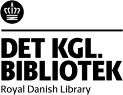

This overview is based on this XML output of the GLAMorous tool d.d. 01-03-2024.
It was generated using the GLAMorousToHTML code.
Also see the documentation of this tool.
This data is also available as an Excel file. More structured data formats (csv, json) will be added in the future.
Available languages
Danish (2.054)
Swedish (681)
English (667)
German (381)
Nynorsk (371)
Russian (199)
French (185)
Egyptian Arabic (178)
Arabic (112)
Italian (92)
Spanish (89)
Czech (77)
Ukrainian (74)
Dutch (59)
Finnish (55)
Catalan (50)
Portuguese (47)
Japanese (44)
Polish (44)
Kotava (43)
Welsh (43)
Nynorsk (29)
Persian (29)
Hebrew (26)
Korean (26)
Eastern Armenian (20)
Greek (20)
Basque (19)
Icelandic (18)
Romanian (18)
Hungarian (16)
Bulgarian (15)
Chinese (15)
Standard Estonian (14)
Esperanto (10)
Ido (9)
Indonesian (9)
Galician (8)
Slovene (8)
Thai (8)
Turkish (8)
Azerbaijani (7)
Lithuanian (7)
Vietnamese (7)
Faroese (6)
Malagasy (6)
Asturian (5)
Bangla (5)
Low Eastern Saxon (5)
Igbo (4)
Malayalam (4)
South Azerbaijani (4)
Belarusian (3)
Georgian (3)
Latin (3)
Malay (3)
Serbian (3)
Urdu (3)
Uzbek (3)
Luxembourgish (2)
Macedonian (2)
Maltese (2)
Occitan (2)
Punjabi (2)
Serbo-Croatian (2)
Tajik (2)
Afrikaans (1)
Alemannic (1)
Bashkir (1)
Breton (1)
Cantonese (1)
Cebuano (1)
Croatian (1)
Gagauz (1)
Inari Sami (1)
Interlingue (1)
Irish (1)
Kazakh (1)
Kurmanji (1)
Latvian (1)
Manx (1)
North Frisian (1)
Northern Sami (1)
Old English (1)
Punjabi (1)
Sardinian (1)
Scots (1)
Slovak (1)
Sorani (1)
Southern Quechua (1)
Swahili (1)
Tatar (1)
West Frisian (1)
Yoruba (1)
Danish (2.054)
1864_(tv-serie) |
1913 |
200-kroneseddel |
A.C._Andersen_(landstingsmedlem) |
A.C._Meyer |
A.D._Jørgensen |
A.F.H._Fleischer |
A.F._Lamm |
A.H._Riise |
A.L._Hjorth |
A.N._Hansen |
A.P._Madsen |
A.T.H._Mourier-Petersen |
A.W._Dinesen |
A._Thorenfeld |
AIK_95 |
Aage_Colding |
Aage_Jordan |
Aage_Kidde |
Aage_Lønborg-Jensen |
Abraham_Wolff |
Adam_Fabricius |
Adam_Frederik_Moltke |
Adam_Gottlob_Moltke-Huitfeldt |
Adam_Knuth_til_Lilliendal |
Adam_Moltke_(1828-1913) |
Adam_Müller |
Adam_Wilhelm_Hauch |
Adelgunde_Vogt |
Adolf_Langsted |
Adolf_Mackeprang |
Adolph_Arendrup |
Adolph_Christian_Meyer |
Adolph_Drewsen |
Adolph_Fibiger |
Adolph_Frederik_von_Zepelin |
Adolph_Hannover |
Adolph_Harbou |
Adolph_Hellesen |
Adolph_Juel |
Adolph_Kittendorff |
Adolph_Lønborg |
Adolph_Steen |
Adolph_Strunk |
Adolph_Tesdorpf |
Adolph_Theodor_Thomsen-Oldenswort |
Adser_Hansen_Blume |
Agathon_Nickolin |
Agnes_Adler |
Agnes_Slott-Møller |
Ahlefeldt |
Aksel_Hansen_(billedhugger) |
Albert_Abrahamsen |
Albert_Arendrup |
Albert_Gottschalk |
Albert_Jensen |
Albert_Nicolai_Schioldann |
Albert_Orth |
Albert_Price |
Albert_Rüdinger |
Albert_Schou |
Albrecht_Schønberg |
Aldo_Friedrich_Wilhelm_Roller_Güntelberg |
Aleth_Hansen |
Alexander_Berner-Schilden-Holsten |
Alexander_Bock |
Alexander_Foss |
Alexander_George_Berner |
Alfred_Benzon |
Alfred_Benzon_(1855-1932) |
Alfred_Franz_Carl_Reventlow-Criminil |
Alfred_Hage_(landbrugsminister) |
Alfred_Hansen_(grosserer) |
Alfred_Møller_(arkitekt) |
Alfred_Råvad |
Alfred_Schmidt_(tegner) |
Alfred_Sveistrup_Poulsen |
Aller-familien |
Amalie_Wedel-Heinen |
Anders_Bille_(rigsmarsk) |
Anders_Bjergbo_Clausager |
Anders_Bundgaard |
Anders_Christian_Lunde |
Anders_Christiansen_(landmand) |
Anders_Gamborg |
Anders_Jensen_Clausager |
Anders_Nordahl-Petersen |
Anders_Thiset |
Anders_Thomsen_(politiker) |
Andrea_Krætzmer |
Andreas_Bentsen |
Andreas_Brock_Hoffmeyer |
Andreas_Brünniche_(læge) |
Andreas_Djurhuus |
Andreas_Flinch |
Andreas_Flint |
Andreas_Frederik_Høst |
Andreas_Frederik_Lincke |
Andreas_Fritz |
Andreas_Hallander |
Andreas_Holck |
Andreas_Jensen_(møbelsnedker) |
Andreas_Listov |
Andreas_Lorentz_Casse |
Andreas_Martin_Petersen |
Andreas_Nicolaus_Kornerup |
Andreas_Peschcke_Køedt |
Andreas_Peter_Hovgaard |
Andreas_Riis_Carstensen |
Andreas_Schifter |
Andreas_Schultz_(politiker) |
Andreas_Schumacher |
Andreas_du_Plessis_de_Richelieu |
André_Bork |
Angul_Hammerich |
Anker_Heegaard |
Anker_Kyster |
Anna_Ancher |
Anna_Catharina_von_Passow |
Anna_Hude |
Anna_Syberg |
Anna_af_Preussen |
Anne_Marie_Mangor |
Anton_Bing |
Anton_Dorph |
Anton_Eduard_Kieldrup |
Anton_Frederik_Tscherning |
Anton_Groothoff |
Anton_Hegner |
Anton_Lütken |
Anton_Melbye_(maler) |
Anton_Moltke |
Anton_Rosen |
Anton_Wilhelm_Scheel |
Antonio_Leigh-Smith |
Arnold_Andreas_Bull_Ahrensen |
Arnold_Heise |
Arnold_Krog |
Arthur_Hindenburg |
Arthur_Knudsen |
Arveprins_Ferdinand |
Asger_Hamerik |
Asger_Juul |
Asger_Ostenfeld |
Asmund_Gleerup |
Astrid_Stampe_Feddersen |
Athalia_Schwartz |
August_Crome |
August_Forchhammer |
August_Hennings |
August_Jerndorff |
August_Plum |
August_Regenburg |
August_Saabye |
August_Sandgren |
August_Schiøtt_(maler) |
August_Theodor_Schütte |
August_Tuxen_(officer) |
August_Vogelius |
Augusta_Læssøe |
Augusta_Marie_Hall |
Axel_Berg |
Axel_Dam |
Axel_Heide |
Axel_Helsted |
Axel_Kauffmann |
Axel_Kittendorff |
Axel_Liebmann |
Axel_Liljefalk |
Axel_Meyer |
Axel_Olrik |
Axel_Preisler |
Axel_Schovelin |
Axel_Thiess |
Axel_W._Gade |
B._Lindhardt |
Balduin_Dahl |
Bartholomæus_Hoff |
Bendt_Bendtsen_(rektor) |
Bendt_Wedell_(1840-1922) |
Benjamin_Georg_Sporon |
Benjamin_Wolff |
Bernhard_Bang |
Bernhard_Bøggild |
Bernhard_Ingemann |
Bernhard_Middelboe_(maler) |
Bernhard_Olsen |
Bernhard_Rosenbaum |
Bernhard_Rée |
Bernhardine_Rosenbaum |
Bertel_Nørgaard |
Bertha_Wegmann |
Betzonich |
Bispedømmet_København |
Bjørn_Stephensen |
Bonaparte_Borgen |
Bone_Falch_Rønne |
Brita_Barnekow |
Budtz_Müller |
Burmeister_&_Wain |
Bærent_Bærentsen |
Børge_Riisbrigh |
C.A.A.F.J._Brun |
C.A.F._Thomsen |
C.A.H._Hansen |
C.A.S._Dalberg |
C.A._Bluhme |
C.A._Broberg |
C.A._Fonnesbech |
C.A._Hansen |
C.A._Kølle |
C.A._Olesen |
C.A._Schepelern |
C.A._Schleisner |
C.B._Hansen |
C.C.V._Nyholm |
C.C._Bønløkke |
C.C._Hall |
C.C._Hornung |
C.C._Zahlmann |
C.E._Fenger |
C.E._Reich |
C.F.B._Brun |
C.F._Aagaard |
C.F._Christensen |
C.F._Moltke |
C.F._Ricard |
C.F._Sørensen |
C.F._Tietgen |
C.F._Wandel |
C.F._Wegener |
C.F._de_Fine_Skibsted |
C.F._von_Rosen |
C.G.W._Johannsen |
C.G._Andræ |
C.H._Ostenfeld |
C.J.H._Kayser |
C.L.A._Benzon |
C.L.H._Flindt |
C.M.T._Cold_(udenrigsminister) |
C.M._Soya-Jensen |
C.N._David |
C.N._Rosenkilde |
C.O._Rimestad |
C.S._Klein |
C.Th._Zahle |
C.V._Nielsen |
C.V._Rimestad |
C._Limprecht |
Cai_Brockdorff |
Cai_Hegermann-Lindencrone_(officer) |
Carl_Aarsleff |
Carl_Adolf_Schroll |
Carl_Aller |
Carl_Andreas_Rames |
Carl_Anthon_Christian_Berg |
Carl_Baagøe |
Carl_Baland |
Carl_Balsgaard |
Carl_Bardenfleth |
Carl_Bekker |
Carl_Berg |
Carl_Bille |
Carl_Bonnesen |
Carl_Caroc |
Carl_Castenschiold |
Carl_Cederfeld_de_Simonsen |
Carl_Christian_Andersen_(fagforeningsmand) |
Carl_Christian_Andersen_(maler) |
Carl_Christian_Burmeister |
Carl_Christian_Emil_Engelbrecht |
Carl_Christian_Ernst_Hartmann |
Carl_Christian_Hansen_(fotograf) |
Carl_Christian_Lose_den_yngre |
Carl_Christian_Vilhelm_Liebe |
Carl_Christian_von_Støcken |
Carl_Claudius |
Carl_Dahl |
Carl_Dahl_(stiftamtmand) |
Carl_Eduard_von_Beck |
Carl_Edvard_Sonne |
Carl_Ewald |
Carl_F._Andersen |
Carl_Ferdinand_Allen |
Carl_Frederik_August_Lunn |
Carl_Frederik_Grove_(ingeniør) |
Carl_Frederik_Krabbe_(1858-1920) |
Carl_Friedrich_Heinrich_Lange |
Carl_Galster |
Carl_Georg_Gædeken |
Carl_Georg_von_Holck |
Carl_Goos |
Carl_Güldencrone_(diplomat) |
Carl_Güldencrone_(lensbaron) |
Carl_Hall |
Carl_Holger_Visby |
Carl_Holstein |
Carl_Holten_(fysiker) |
Carl_Irminger |
Carl_Joakim_Brandt |
Carl_Johan_Frydensberg |
Carl_Johan_Sonning |
Carl_Juel-Brockdorff_(1839-1900) |
Carl_Julius_Salomonsen |
Carl_Koch_(politiker) |
Carl_Lange_(læge) |
Carl_Leuning |
Carl_Liebenberg |
Carl_Lund_(fabrikant) |
Carl_Løvenskiold |
Carl_Løvenskiold_(lensbaron) |
Carl_Løvenskiold_(toldforvalter) |
Carl_Madsen_(politiker) |
Carl_Mar._Møller_(departementschef) |
Carl_Meldahl |
Carl_Michelsen |
Carl_Moltke_(udenrigsminister) |
Carl_Mundt |
Carl_Muusmann |
Carl_Møller_(forfatter) |
Carl_Møller_(maler) |
Carl_Møller_(politiker) |
Carl_Neergaard |
Carl_Neumann |
Carl_Nicolai_Petersen |
Carl_Nicolai_Starcke |
Carl_Norstrand |
Carl_O'Neill_Oxholm |
Carl_Peter_Frederik_Drejer |
Carl_Petersen_(arkitekt) |
Carl_Rasch |
Carl_Rasmussen_(maler) |
Carl_Rothe |
Carl_Salicath |
Carl_Schlichting-Carlsen |
Carl_Seifert |
Carl_Severin_Christian_Herman_Løvenskiold |
Carl_Slengerik |
Carl_Sonne_(fotograf) |
Carl_Sporon |
Carl_Steen_Andersen_Bille |
Carl_Sundt-Hansen |
Carl_Th._Sørensen |
Carl_Theodor_Friedrich_Westermann |
Carl_Thomsen |
Carl_Thrane |
Carl_Tolderlund |
Carl_Torp_(officer) |
Carl_Treschow |
Carl_Tvermoes |
Carl_Ussing |
Carl_V._Petersen_(kunsthistoriker) |
Carl_Vilhelm_Raben-Levetzau |
Carl_Wagner_(officer) |
Carl_Wiibroe |
Carl_Wilhelm_Roikjer |
Carl_Wilhelm_Taube |
Carl_Wilhelm_Thalbitzer |
Carl_With-Seidelin |
Carl_Wolf_Josef_Nathanael_Wallick |
Carl_Wolle |
Carl_de_Neergaard |
Carl_von_Krogh |
Carl_von_Nutzhorn |
Caroline_Hammer |
Caroline_af_Danmark |
Carte-de-visite |
Caspar_Wilhelm_Smith |
Catharine_Simonsen |
Charles_Abrahams |
Charles_Ambt |
Charles_Aumont |
Charles_Axel_Nordberg |
Charles_Beck |
Charles_Gandrup |
Charles_Grut_Hansen |
Charles_Kjerulf |
Charles_Nanke |
Charles_Shaw |
Charles_Tvede |
Charles_la_Cour |
Chefen_for_Søværnet |
Christen_Dalsgaard |
Christen_Foersom |
Christen_Larsen_(politiker,_1804-1875) |
Christen_Pedersen_Aaberg |
Christen_Pram_Gad |
Christen_Thomsen_Barfoed |
Christian_10. |
Christian_9. |
Christian_Aarøe |
Christian_Agerskov_(ingeniør) |
Christian_Ahlefeldt-Laurvig |
Christian_Albrecht_Lerche_(politiker) |
Christian_Andreas_Selchau |
Christian_Andreas_Vind |
Christian_Antoni_Zehngraf |
Christian_Arendrup |
Christian_Bache |
Christian_Bauditz |
Christian_Blache |
Christian_Blangstrup |
Christian_Bohr |
Christian_Bredsdorff |
Christian_Carl_Alberti |
Christian_Carl_Peters |
Christian_Castenschiold |
Christian_Cederfeld_de_Simonsen_(politiker) |
Christian_Christopher_Zahrtmann |
Christian_Conrad_Sophus_Danneskiold-Samsøe_(1800-1886) |
Christian_Conrad_Sophus_Danneskiold-Samsøe_(1836-1908) |
Christian_Conrad_Sophus_Stemann-Charisius |
Christian_Dahl |
Christian_Danneskiold-Samsøe_(1838-1914) |
Christian_Danning |
Christian_Deichmann |
Christian_Ditlev_Carl_Rantzau |
Christian_Drewsen |
Christian_Eckardt |
Christian_Ehlers_Hertz |
Christian_Erhard_Bagger |
Christian_Ferdinand_Wilse |
Christian_Frederik_August_Ishøy |
Christian_Frederik_Bredo_Grandjean |
Christian_Frederik_Frands_Elias_Tuxen |
Christian_Frederik_Knuth_til_Store_Grundet |
Christian_Frederik_Schwartzkopf |
Christian_Gotfried_Hummel |
Christian_Gottlieb_Kratzenstein_Stub |
Christian_Güldencrone_(officer) |
Christian_Hansen_(arkitekt) |
Christian_Hansen_Møller |
Christian_Hasselbalch |
Christian_Henrik_de_Thurah_(forfatter) |
Christian_Herbst |
Christian_Herforth |
Christian_Holm_(1807-1876) |
Christian_Holm_(1835-1920) |
Christian_Holm_(maler) |
Christian_Juel-Brockdorff |
Christian_Julius_Hansen |
Christian_Juul-Rysensteen |
Christian_Jørgen_Hauch |
Christian_Jürgensen_(matematiker) |
Christian_Kjellerup_Hansen |
Christian_Knudsen |
Christian_Lehmann_Pagh |
Christian_Listov |
Christian_Lunding |
Christian_Lunn |
Christian_Løvenfeldt |
Christian_Lütken_(officer) |
Christian_Lüttichau |
Christian_Magdalus_Jespersen_(politiker) |
Christian_Milo |
Christian_Moltke_(politiker) |
Christian_Mourier-Petersen_(politiker) |
Christian_Muus |
Christian_Mølsted |
Christian_Ove_Haxthausen |
Christian_Peter_Wienberg |
Christian_Piil |
Christian_Pløyen |
Christian_Rasmussen_(1815-1894) |
Christian_Rasmussen_(præst) |
Christian_Rimestad_(politiker) |
Christian_Rosenkrantz-Charisius |
Christian_Rosenørn-Lehn |
Christian_Rostgaard_von_der_Maase |
Christian_Rønnenkamp |
Christian_S._Christiansen |
Christian_Samuel_Barth |
Christian_Sarauw_(officer) |
Christian_Sarauw_(sprogforsker) |
Christian_Schiemann |
Christian_Schiørring |
Christian_Schroll |
Christian_Schøller_(1804-1888) |
Christian_Schøller_(stænderdeputeret) |
Christian_Seemann |
Christian_Sehestedt_Juul_(politiker) |
Christian_Severin_Henrichsen |
Christian_Siegfried_von_Plessen |
Christian_Skeel_(embedsmand) |
Christian_Thorning_Engelstoft |
Christian_Trepka |
Christian_Treschow_til_Frydendal |
Christian_Ulrich_(forstmand) |
Christian_Ulrich_Detlev_von_Eggers |
Christian_Ulrik_Adolph_Plesner |
Christian_Vaupell |
Christian_Wilhelm_Sigismund_Schønberg |
Christian_Zacho |
Christian_von_Jessen |
Christian_von_Lente |
Christiane_de_Roepstorff |
Christine_Løvmand |
Christoph_Cloëtta |
Christopher_Boeck |
Christopher_Hage |
Christopher_Krabbe |
Christopher_Leuning |
Christopher_Vilhelm_Dreyer |
Christopher_Zytphen-Adeler |
Claudius_Rosenhoff |
Claus_Christensen_(officer) |
Claus_Madsen_Brødsgaard |
Claus_Schall |
Conrad_Müller |
Constant_Dirckinck-Holmfeld |
Constantin_Brun |
Constantin_Brun_(politiker) |
Cora_Nyegaard |
Cornelia_von_Levetzow |
Cornelius_Appel |
Cornelius_Gurlitt_(komponist) |
Cornelius_Petersen_(1806-1876) |
Cosmus_Bornemann_(højesteretsdommer) |
Cosmus_Bræstrup |
Crome_&_Goldschmidt |
Cæsar_du_Plat |
D.B._Adler |
Daniel_Høffding_Wulff |
Danmark-ekspeditionen |
Danmarks_ambassade_i_Paris |
Danmarks_ambassadører_i_Frankrig |
Dannebrogordenens_Hæderstegn |
Dansk_Vestindiens_guvernører |
Danske_filosofihistorikere |
David_Halberstadt |
David_Jacobsen |
David_Monies |
David_Simonsen |
Den_østdanske_epidemi_1831 |
Det_Konservative_Folkeparti |
Det_var_en_lørdag_aften_(folkevise) |
Diderich_Funck |
Didrik_August_Holberg |
Didrik_Carl_Lorentz |
Didrik_Frisch |
Dijmphna-Ekspeditionen_1882—83 |
Ditlev_Ludvig_Rogert |
Ditlev_Ræder |
Dronning_Alexandrine |
E.F.S._Lund |
E.J._Sommerfeldt |
E.M._Jacoby |
E.V._Harboe |
E._Nobel |
Ebbe_Tønder |
Edgar_Castonier |
Edgar_Collin |
Edmund_Knudsen |
Edouard_Suenson_(erhvervsmand) |
Eduard_Hansen |
Edvard_Blaumüller |
Edvard_Brandes |
Edvard_Dahlerup |
Edvard_Diderik_Ehlers |
Edvard_Fallesen |
Edvard_Ferdinand_Esmann |
Edvard_Fortling |
Edvard_Helsted |
Edvard_Holm |
Edvard_Klingsey |
Edvard_Lehmann_(religionshistoriker) |
Edvard_Mau |
Edvard_Meyer |
Edvard_Møller |
Edvard_Rambusch |
Edvard_Westerberg |
Edward_Tesdorpf |
Egmont_H._Petersen |
Ehrenreich_Christopher_Ludvig_Koefoed |
Eigil_Knuth_(officer) |
Eiler_Hagerup_(forlagsboghandler) |
Eiler_Rasmussen_Eilersen |
Einar_Christiansen |
Einar_Holbøll |
Eleonore_Tscherning |
Elfride_Fibiger |
Elias_Ahlefeldt-Laurvig |
Elisabeth_Boisen |
Elisabeth_Jerichau_Baumann |
Elisabeth_Wandel |
Elisabeth_Wedell-Wedellsborg |
Ella_Ungermann |
Emanuel_Monberg |
Emil_Blichfeldt |
Emil_Bloch |
Emil_Bluhme |
Emil_Bodenhoff |
Emil_Boesen_(politiker) |
Emil_Bærentzen |
Emil_Elberling |
Emil_Erslev |
Emil_Glückstadt |
Emil_Gyldenkrone |
Emil_Hannover |
Emil_Hartmann |
Emil_Hohlenberg |
Emil_Hornemann |
Emil_Krieger |
Emil_Libert |
Emil_Madsen |
Emil_Piper |
Emil_Rye |
Emil_Vett |
Emil_Victor_Schau |
Emil_Vind |
Emil_Wiinblad |
Emil_Z._Svitzer |
Emil_von_Holstein-Rathlou_(godsejer) |
Emilie_Mundt |
Emilius_Nobel |
Emmy_Thornam |
Enevold_de_Falsen_(officer) |
Ephraim_Magdalus_Møller |
Erhard_Kogsbølle |
Erik_Andersen_Brøndum |
Erik_Branth |
Erik_Christian_Hartvig_Rosenørn-Lehn |
Erik_Henningsen |
Erik_Nicolai_Ritzau |
Erik_Pontoppidan_(læge) |
Erik_S._Henius |
Erik_Scavenius |
Erik_Schiødte |
Erik_Skeel |
Erik_Skeel_(1859-1918) |
Erik_Skram |
Erling_Eckersberg |
Ernest_Danneskiold-Samsøe |
Ernesto_Dalgas |
Ernst_Bodenhoff |
Ernst_Bojesen |
Ernst_Brandes |
Ernst_Bruhn_(billedhugger) |
Ernst_Bruhn_(general) |
Ernst_Emil_Rosenørn |
Ernst_Frederik_Düring-Rosenkrantz |
Ernst_Laub |
Ernst_Meyer_(officer) |
Ernst_Moltke_(godsejer) |
Ernst_Peymann |
Ernst_Rudolph_Bertouch |
Ernst_Schau |
Ernst_Schmiegelow_(malermester) |
Ernst_Trier_(skolemand) |
Ernst_Wilster |
Ernst_du_Plat |
Ernst_von_Voss |
Eugen_Warming |
Eugen_la_Cour |
Eugenius_Sophus_Ernst_Heltzen |
Eyvind_Olrik |
F.C.G._Schøller |
F.C._Bruun |
F.C._Kiærskou |
F.C._Krarup |
F.C._Lund_(maler) |
F.E._Hundrup |
F.E._Ring |
F.F._Petersen |
F.J.H._Weyhe |
F.L._Torp |
F.P.J._Dahl |
F.V.W._Lüders |
F.V._Mansa |
Fabricius_Leth |
Fanny_Wimpffen |
Ferdinand_Bauditz_(1778-1849) |
Ferdinand_Bauditz_(1811-1866) |
Ferdinand_Bauditz_(redaktør) |
Ferdinand_Didrichsen |
Ferdinand_Henrik_Berregaard |
Ferdinand_Larsen |
Ferdinand_Meldahl |
Ferdinand_Mourier-Petersen |
Ferdinand_Oxelberg |
Ferdinand_Thielemann |
Ferdinand_Tutein |
Ferdinand_von_Krogh |
Ferdinand_von_Wimpffen |
Finansministre_fra_Danmark |
Findanus_Petersen |
Flemming_Lerche_(godsejer) |
Flora_Fallesen |
Flora_Price |
Florian_Larsen |
Fløjtenist |
Folketingsmedlem |
Forfatningskampen |
Francis_Zachariae_(fabrikant) |
Frans_Schwartz |
Frants_Buhl |
Frants_Christian_Hjorth |
Frants_Henningsen |
Frants_Vilhelm_Ferdinand_Rosenstand |
Frantz_Bille |
Frantz_Hohlenberg |
Frantz_Howitz |
Franziska_Carlsen |
Frede_Bojsen |
Frederik_Abrahamson |
Frederik_Adolph_Holstein |
Frederik_Adolph_Mørck |
Frederik_Asmussen |
Frederik_August_af_Slesvig-Holsten-Sønderborg-Augustenborg |
Frederik_Bardenfleth_(officer) |
Frederik_Barfod |
Frederik_Bing |
Frederik_Borgbjerg |
Frederik_Bøgh_(forfatter) |
Frederik_Carl_Eide |
Frederik_Christian_Christiani |
Frederik_Christian_Good |
Frederik_Christian_Hillerup |
Frederik_Christian_Holsten_(stiftamtmand) |
Frederik_Christian_Kaas_(officer) |
Frederik_Christian_Raben |
Frederik_Christian_Riisbrigh |
Frederik_Christian_Rostgaard_von_der_Maase |
Frederik_Christian_von_Krogh |
Frederik_Christoffer_Bülow |
Frederik_Christopher_Lütken |
Frederik_Clauson-Kaas |
Frederik_Dahl |
Frederik_Dreyer |
Frederik_Emil_von_Bretton |
Frederik_Engelhardt_Boisen |
Frederik_Ferdinand_Falkenstjerne |
Frederik_Ferdinand_Helsted |
Frederik_Ferdinand_Jacobi |
Frederik_Ferdinand_Ulrik |
Frederik_Frølund |
Frederik_Georg_Henrik_Hirsch |
Frederik_H._Block |
Frederik_Hammeleff |
Frederik_Hammer |
Frederik_Hammerich_(teolog) |
Frederik_Hauch_(generalpostdirektør) |
Frederik_Hendriksen |
Frederik_Hey |
Frederik_Jespersen |
Frederik_Julius_d'Origny |
Frederik_Kraft |
Frederik_L._Levy |
Frederik_Lange_Grundtvig |
Frederik_Liebmann |
Frederik_Ludvig_Storch |
Frederik_Markmann |
Frederik_Moltke |
Frederik_Moltke_(1854-1936) |
Frederik_Moltke_(officer) |
Frederik_Moltke_(udenrigsminister) |
Frederik_Møller_(pianofabrikant) |
Frederik_Münter_(amtsforvalter) |
Frederik_Nicolai_Dresing |
Frederik_Niels_Basse_Fønss |
Frederik_Nielsen_(politiker) |
Frederik_Nygaard |
Frederik_Otto_Christian_von_Buchwaldt |
Frederik_Peter_Grünwaldt |
Frederik_Raben-Levetzau |
Frederik_Ricard |
Frederik_Riise |
Frederik_Rohde |
Frederik_Rosenkrantz_(officer) |
Frederik_Rung |
Frederik_Scheel |
Frederik_Schepelern |
Frederik_Schlegel |
Frederik_Sporon-Fiedler |
Frederik_Stiernholm |
Frederik_Treschow_(politiker) |
Frederik_Treschow_til_Brahesborg |
Frederik_Treschow_til_Krabbesholm |
Frederik_V._Hegel |
Frederik_Vermehren |
Frederik_Vilhelm_Schytte |
Frederik_Wagner_(officer) |
Frederik_Wilhelm_Dannemand |
Frederik_Winther |
Frederik_Zytphen-Adeler |
Frederik_af_Slesvig-Holsten-Sønderborg-Glücksborg_(1814-1885) |
Frederik_af_Slesvig-Holsten-Sønderborg-Wiesenburg |
Frederik_de_Jonquières_(overpræsident) |
Frederikke_af_Slesvig-Holsten-Sønderborg-Glücksborg |
Fredrik_Bajer |
Fredrik_Nielsen |
Frejlif_Olsen |
Friederich_Christian_Schäffer |
Friedrich_Bernhard_Westphal |
Friedrich_E.A.E._Lund |
Friedrich_Heinrich_Andreas_Beermann |
Friedrich_Hermann_Wolfhagen |
Friedrich_Løvenfeldt |
Friedrich_Sarauw |
Frits_Holm |
Frits_Juel-Brockdorff |
Frits_Uldall |
Fritz_Bardenfleth |
Fritz_Bendix |
Fritz_Blücher |
Fritz_Bock |
Fritz_Feddersen |
Fritz_Holsten-Lehn-Charisius |
Fritz_Johannsen |
Fritz_Koch |
Fritz_Melbye |
Fritz_Meyer_(blikkenslager) |
Fritz_Meyer_(højesteretsdommer) |
Fritz_Michael_Hartmann |
Fritz_Petersen |
Fritz_Rosenkrantz |
Fritz_Tobiesen |
Fritz_Wedell-Wedellsborg |
Fru_Dannemand |
G.A._Gedalia |
G.E.C._Gad |
G.F.O._Zytphen-Adeler |
G.F._Hetsch |
G.F._Ursin |
G.L._Lahde |
G.P._Jacobsen |
Gebhard_Christian_Vilhelm_Obelitz |
Geert_Marinus_Holbek |
Generalguvernør |
Generalkommandoen |
Generalstaben |
Georg_Aagaard |
Georg_Achen |
Georg_Carl_Bohlmann |
Georg_Christensen |
Georg_Christian_Freund |
Georg_E._Hansen |
Georg_Emil_Betzonich |
Georg_Gerson |
Georg_Grodtschilling |
Georg_Grüner |
Georg_Henrik_Lasson |
Georg_Jensen |
Georg_Kringelbach |
Georg_Lerche |
Georg_Ludvig_von_der_Schulenburg |
Georg_Pauli_(xylograf) |
Georg_Rosenkilde |
Georg_Rung |
Georg_Sarauw_(arkæolog) |
Georg_Schøller |
Georg_Severin_Knækenborg |
Georg_Wittrock_(arkitekt) |
Georg_Zachariae_(officer) |
George_Koch |
George_Quaade |
Georgia_Skovgaard_(broderer) |
Gerda_Madvig |
Gerner_Wolff-Sneedorff |
Gert_Londemann |
Giovannino_von_Huth |
Giuseppe_Siboni |
Glode_du_Plat_(1809-1864) |
Godefroi_Chrétien_de_Dompierre_de_Jonquières |
Godfred_Christensen |
Godtfred_Rump |
Gollich_Strøm |
Gottfred_Faber |
Gottfried_Burman_Becker |
Gotthold_Müller |
Gottsche_Hans_Olsen |
Gregers_Lassen |
Gundo_Vogt |
Gustav_Adolf_Falkenberg |
Gustav_Adolph_Falck |
Gustav_Bang |
Gustav_Blücher-Altona_(1798-1864) |
Gustav_Castenskiold |
Gustav_Esmann |
Gustav_Grüner_til_Høstemark_og_Egense_Kloster |
Gustav_Grüner_til_Kærup |
Gustav_Holck-Winterfeldt_(1802-1885) |
Gustav_Lotze |
Gustav_Ludvig_Wad |
Gustav_Wedell-Wedellsborg_(1844-1923) |
Gustav_Wedell-Wedellsborg_(1858-1939) |
Gustav_Wedell-Wedellsborg_(landmand) |
H.A.S._Faith |
H.A._Bache |
H.A._Flindt |
H.B._Storck |
H.C.D._Müller |
H.C.F.W._Cederfeld_de_Simonsen |
H.C.T._Wolff-Sneedorff |
H.C._Glahn_(arkitekt) |
H.C._Henneberg |
H.C._Lumbye |
H.C._Müller |
H.C._Pape |
H.C._Stilling |
H.F._Ewald |
H.F._Helweg-Larsen |
H.G._Bohr |
H.J._Blom |
H.J._Hammer |
H.J._Hansen_(politiker) |
H.N._Andersen |
H.N._Valentiner |
H.O._Brasen |
H.P._Langkilde |
H.P._Pedersen-Dan |
H.P._Prior_(skibsreder) |
H.R._Carlsen |
H.R._Hiort-Lorenzen |
H.U._Ramsing |
H.V._Brinkopff |
H.V._Sthyr |
H.V._Tolderlund |
H.W._Harbou |
H._Sylow |
Hack_Kampmann |
Hack_Kampmann_(politiker) |
Hagen_Hohlenberg |
Halfdan_Hendriksen |
Hannes_Finsen_(stiftamtmand) |
Hans_Bachmann_(officer) |
Hans_Balzer_Dahl |
Hans_Broge |
Hans_Caspersen |
Hans_Christian_Amberg_(arkitekt) |
Hans_Christian_Ditlev_la_Cour |
Hans_Christian_Jensen_(maler) |
Hans_Christian_Johansen_(politiker) |
Hans_Christian_Riegels |
Hans_Christian_Rømeling |
Hans_Christian_Steffensen |
Hans_Ditlev_Lützhøft |
Hans_Ernst_von_Tritzschler |
Hans_Fischer_(maler) |
Hans_Friis_(maler) |
Hans_Hansen-Menstrup |
Hans_Hansen_(snedker) |
Hans_Harder |
Hans_Hedemann |
Hans_Heinrich_Baumgarten |
Hans_Helmuth_Lüttichau_(overpræsident) |
Hans_Henning_Schroll |
Hans_Henrik_Rømeling_(officer) |
Hans_Henrik_Schou_(fabrikant) |
Hans_Herman_Grove |
Hans_Holsten |
Hans_Jacob_Bie |
Hans_Jakob_Møller |
Hans_Jantzen |
Hans_Johansen_(politiker) |
Hans_Juel |
Hans_Just |
Hans_Koch_(arkitekt) |
Hans_Lindholm_(søofficer) |
Hans_Mathias_Fenger |
Hans_Nicolai_Hansen |
Hans_Nicolai_Thestrup |
Hans_Nikolaj_Hansen |
Hans_Nissen |
Hans_Næss |
Hans_Olrik |
Hans_Parkov |
Hans_Peder_Steensby |
Hans_Peter_Hansen_(xylograf) |
Hans_Peter_Holst |
Hans_Peter_Larsen_(politiker) |
Hans_Peter_Lindeburg |
Hans_Rudolph_Juel |
Hans_Schneekloth |
Hans_Smidth |
Hans_Sveistrup |
Hans_Tegner_(tegner) |
Hans_Windfeld-Hansen |
Hans_af_Slesvig-Holsten-Sønderborg-Glücksborg |
Hans_Øllgaard_(højesteretsdommer) |
Hansine_Andræ |
Harald_Foss |
Harald_Grandjean |
Harald_Hansen_(politiker) |
Harald_Holbøll |
Harald_Holm_(maler) |
Harald_Holm_(politiker) |
Harald_Høffding |
Harald_Høst |
Harald_Jastrau |
Harald_Jensen_(litograf) |
Harald_Jensen_(politiker) |
Harald_Jenssen-Tusch_(1815-1894) |
Harald_Jenssen-Tusch_(1851-1922) |
Harald_Jerichau |
Harald_Kayser |
Harald_Krabbe |
Harald_Lund |
Harald_Moltke |
Harald_Ostenfeld |
Harald_Oxholm |
Harald_Paetz |
Harald_Plum |
Harald_Raasløff |
Harald_Scavenius |
Harald_Slott-Møller |
Harald_Stein |
Harald_Weitemeyer |
Harry_Treschow |
Hartvig_Rambusch |
Hartwig_von_Linstow |
Havrebjerg |
Heinrich_Buntzen |
Heinrich_Hansen_(maler) |
Heinrich_Hirschsprung |
Heinrich_Kauffmann |
Heinrich_Krabbe |
Heinrich_Theodor_Wenck |
Heinrich_Tønnies |
Heinrich_Wenck |
Heinrich_von_Nutzhorn |
Hemming_Moltke |
Henni_Forchhammer |
Henning_Matzen |
Henri_Alexandre_Antoine_de_Dompierre_de_Jonquières |
Henri_Konow |
Henrik_Berregaard |
Henrik_Bohr |
Henrik_Castenschiold_(1783-1856) |
Henrik_Castenschiold_(1818-1908) |
Henrik_Cavling |
Henrik_Christian_Behrmann |
Henrik_Christian_Nielsen |
Henrik_Fensmark |
Henrik_Frederik_Prætorius |
Henrik_Glahn_(officer) |
Henrik_Hagemann |
Henrik_Jespersen |
Henrik_Leonhard_Danchell |
Henrik_Olrik |
Henrik_Stampe_(1794-1876) |
Henrik_Stampe_(1821-1892) |
Henrik_Stampe_(politiker) |
Henrik_Tilemann |
Henrik_Wellejus_Jacobæus |
Henrik_Wulff |
Herman_Andreas_Mollerup |
Herman_Anker_Bernhoft |
Herman_Bing_(politiker) |
Herman_Hegermann-Lindencrone |
Herman_Heinrich_Louis_Schwanenflügel |
Herman_Løvenskiold_(1805-1877) |
Herman_Løvenskiold_(amtmand) |
Herman_Reinhold_Frederik_Fleischer |
Herman_Siegumfeldt |
Herman_Trier |
Herman_Tuxen |
Hermod_Lannung |
Herstedvester |
Hilmar_Finsen |
Hilmar_Lunn |
Hinrich_Rink |
Hjalmar_Kjær |
Hjalmar_Rechnitzer |
Holger_Begtrup |
Holger_Grønvold |
Holger_H._Jerichau |
Holger_Petersen |
Holger_Roed |
Holger_Rørdam_(præst) |
Holger_Simon_Paulli |
Holger_Stampe-Charisius |
Holger_Vind |
Holten_Fürchtegott_Trepka |
Horace_Aumont |
Hother_Hage |
Hou_(Odder_Kommune) |
Hvor_smiler_fager_den_danske_Kyst |
Hærchef_(Danmark) |
I.D._Beauvais |
I.H._Ruben |
I.J._Unsgaard |
I.W._Tegner_(litograf) |
Ib_Windfeld-Hansen |
Ida_Brun |
Ida_Falbe-Hansen |
Ida_Henriette_da_Fonseca |
Illustreret_Tidende |
Immanuel_Barfod |
Ingeborg_Christiane_Rosenørn |
Ingeborg_Stuckenberg |
Ingvard_Henrik_Linnemann |
Ingvard_Jensen |
Isaac_W._Heyman |
Isabelle_af_Orléans_(1878-1961) |
Isac_Salmonsen |
Isak_Glückstadt |
Isidor_Heckscher |
Isted_Møller |
Ivar_Knudsen |
Ivar_Nielsen_Meier |
Iver_Emil_Hermann_William_Unsgaard |
J.A.D._Jensen |
J.A._Brasen |
J.A._Fridericia |
J.A._Windfeld-Hansen |
J.B.S._Estrup |
J.B._Løffler |
J.B._Schepelern |
J.C.A._Bock |
J.C.A._Schwarz-Nielsen |
J.C.H._Fischer |
J.C.W._Hirsch |
J.C._Teilmann |
J.E._Bøgh |
J.E._Gnudtzmann |
J.E._Larsen |
J.H._Bagger |
J.H._Mansa |
J.H._Mundt |
J.H._Rawert |
J.J.A._Worsaae |
J.K._Blok_Tøxen |
J.K._Lauridsen |
J.L.W.V._Jensen |
J.L._Jensen |
J.L._Tvede |
J.L._Ussing |
J.N.A._Madvig |
J.P._Langgaard |
J.P._With |
J.V._Esmann |
J.V._Gertner |
J.W._Frohne |
Jacob_Anker_Bie |
Jacob_Appel |
Jacob_Baden_Olrik |
Jacob_Brønnum_Scavenius |
Jacob_Christian_Lindberg |
Jacob_Ernst |
Jacob_Erslev |
Jacob_Herman_Bing |
Jacob_Jacobsen_(godsejer) |
Jacob_Kornerup |
Jacob_Marstrand |
Jacob_Martin_Bing |
Jan_Carl_Blom |
Janus_la_Cour |
Japetus_Steenstrup |
Jean_André_Frédéric_de_Dompierre_de_Jonquières |
Jean_Baruël |
Jean_Christian_Ferslew |
Jeg_bærer_med_smil_min_byrde |
Jens_Adolf_Jerichau_(maler) |
Jens_Adolph_Frederik_Clauson-Kaas |
Jens_Birkholm |
Jens_Christopher_Schurmann |
Jens_Clausager |
Jens_Erik_Albert_Magius |
Jens_Giødwad |
Jens_Jensen-Trunderup |
Jens_Jørgen_Jensen-Onsted |
Jens_Jørgensen_(politiker) |
Jens_Kragh_Høst |
Jens_Lange_(fabrikant) |
Jens_Lund_(maler) |
Jens_Munk-Poulsen |
Jens_Møller_(stænderdeputeret) |
Jens_Møller_(teolog) |
Jens_Paludan-Müller_(biskop) |
Jens_Paludan-Müller_(historiker) |
Jens_Peter_Dalsgaard |
Jens_Peter_Tønder |
Jens_Petersen_(fotograf) |
Jens_Seidelin |
Jens_Sørensen-Saksager |
Jeppe_Aakjær |
Jeppe_Prætorius |
Jesper_Tvede_(1879-1934) |
Joachim_Andersen_(musiker) |
Joachim_Bruun_de_Neergaard_(komponist) |
Joachim_Bruun_de_Neergaard_(politiker) |
Joachim_Sigismund_Ditlev_Knuth |
Joachim_Wasserschlebe |
Joachim_Wedell-Neergaard |
Joachim_Wedell-Wedellsborg_(officer) |
Joakim_Larsen |
Joel_Ballin |
Johan_Adam_Krygell |
Johan_Anker_(officer) |
Johan_Anton_Frederik_Hoffmann |
Johan_Bravo |
Johan_Christian_Bonne |
Johan_Christian_Brinck-Seidelin |
Johan_Christian_Matthias_Trepka |
Johan_Christian_Schrødersee_(søofficer) |
Johan_Christopher_Hoffmann |
Johan_Cornelius_Krieger_(1818-1894) |
Johan_Cortsen |
Johan_Daniel_Kreber |
Johan_Detlev_von_Zepelin |
Johan_Ditlev_Høst |
Johan_Erik_Vesti_Boas |
Johan_Frederik_Busch |
Johan_Frederik_Lorenzen |
Johan_Frederik_Vilhelm_Schlegel |
Johan_Friderich_Bergsøe |
Johan_Friedrich_Prehn |
Johan_Georg_Forchhammer |
Johan_Georg_Frederik_Colding |
Johan_Hedemann |
Johan_Hegermann-Lindencrone |
Johan_Hendrik_Hegermann-Lindencrone |
Johan_Henrik_Deuntzer |
Johan_Henrik_Tauber |
Johan_Hoppe |
Johan_Jacob_Georg_Lund |
Johan_Jochum_Reinau |
Johan_Keller |
Johan_Lange_(1818-1898) |
Johan_Lesser |
Johan_Linnemann_(artilleriofficer) |
Johan_Linnemann_(infanteriofficer) |
Johan_Ludvig_Heiberg_(filolog) |
Johan_Ludvig_Nathansen |
Johan_M._Risom |
Johan_N._Schrøder |
Johan_Peter_Fürchtegott_Wildenradt |
Johan_Petersen |
Johan_Rohde |
Johan_Sigismund_Møsting_Tillisch |
Johan_Sigismund_Schulin_(1808-1880) |
Johan_Thorsøe |
Johan_Ulrik_Bredsdorff |
Johan_Vilhelm_Unmack |
Johan_Waldemar_Neergaard |
Johan_Wilhelm_Cornelius_Krieger |
Johan_Wilmann |
Johann_Martin_Graack |
Johanne_Petersen |
Johannes_Christian_Madsen |
Johannes_Christopher_Nyholm |
Johannes_Clausen_(biskop) |
Johannes_Clausen_(præst) |
Johannes_Eduard_Beissenherz |
Johannes_Ferdinand_Fenger |
Johannes_Hage_(godsejer) |
Johannes_Harbou |
Johannes_Hauerslev |
Johannes_Helms_(forfatter) |
Johannes_Holbek |
Johannes_Lauridsen |
Johannes_Madsen |
Johannes_Neye |
Johannes_Paulsen |
Johannes_Pitzner |
Johannes_Wilhjelm |
Johannes_Zeuthen_Schroll |
Johannes_von_Euch |
John_Brown_(handelsmand) |
John_Hilmar_Stephensen |
John_Vilhelm_Duurloo |
Jonas_Collin_Lundh |
Joseph_Glæser |
Joseph_Ludvig_Kjær |
Juliane_Hammer |
Julie_Laurberg |
Juliette_Price |
Julius_August_Bentzien |
Julius_Bauditz |
Julius_Blom |
Julius_Exner |
Julius_Friedlænder |
Julius_Frijs |
Julius_Hoffensberg |
Julius_Høegh-Guldberg_(politiker) |
Julius_Jacobsen_(fotograf) |
Julius_Knuth |
Julius_Møller_(højesteretsdommer) |
Julius_Nielsen_(officer) |
Julius_Petersen_(matematiker) |
Julius_Raben |
Julius_Rée |
Julius_Schiøtt |
Julius_Schovelin_(1821-1870) |
Julius_Schovelin_(1860-1933) |
Julius_Schultz |
Julius_Strandberg |
Julius_Valentiner |
Julius_Wedell-Wedellsborg |
Julius_Wilhelm_Georg_Ferdinand_Wedell |
Julius_af_Slesvig-Holsten-Sønderborg-Glücksborg |
Just_Hansen |
Just_Holm |
Just_Jerndorff_(xylograf) |
Jørgen_Balthasar_Dalhoff |
Jørgen_Brønlund |
Jørgen_Christian_Hauberg |
Jørgen_Christian_Sørensen |
Jørgen_Erik_Frederik_Skeel |
Jørgen_Grevenkop-Castenskiold |
Jørgen_Kierulf |
Jørgen_Larsen_(billedhugger) |
Jørgen_Pedersen_(politiker) |
Jørgen_Pedersen_Gram |
Jørgen_Petersen_(fløjtenist) |
Jørgen_Roed |
Jørgen_Swane |
Jørgen_Vind |
K.M._Klausen |
Kaj_Gnudtzmann |
Karl_Hude |
Karl_Mantzius |
Karl_Nikolaj_Henry_Petersen |
Karl_Schou |
Karl_Verner |
Karl_Wedell |
Karsten_Friis_Viborg |
Klaus_Berntsen |
Knud_Brockenhuus-Schack_(1823-1892) |
Knud_Larsen_(maler) |
Knud_Lausten_Knudsen |
Knud_Pontoppidan |
Knud_Schøller |
Knud_Sehested |
Knud_V._Engelhardt |
Kongelig_hoffotograf |
Kongens_Fald |
Kongens_Livjægerkorps |
Konrad_Barner |
Konrad_Jørgensen |
Konrad_von_Blücher-Altona |
Kort_K._Kortsen |
Kr._Mikkelsen |
Kristian_Mantzius |
Kristian_Rørdam |
Kristian_Sandfeld |
Kristian_Zahrtmann |
Kristine_Marie_Jensen |
Kristjan_Rasmussen_Stenbæk |
Kristoffer_Varming |
Kunstakademiets_Kunstskole_for_Kvinder |
L.A._Bie |
L.A._Colding |
L.A._Schou |
L.A._Winstrup |
L.C._Borup |
L.C._Brinck-Seidelin |
L.C._Nielsen |
L.F._Holmberg |
L.J.T._Grøn |
L.P._Holmblad |
L.S._Kellner |
Lars_Andersen_Hækkerup |
Lars_Andreas_Kornerup |
Lars_Bjørnbak |
Lars_Christian_Larsen |
Lars_Dinesen |
Lars_Eriksen |
Lars_Hansen_(politiker) |
Lars_Larsen_(møbelfabrikant) |
Lars_Peter_Knudsen |
Lasenius_Kramp |
Laura_Aller |
Laura_Kieler |
Laurids_Bing |
Laurids_Nørgaard_Bregendahl |
Laurits_Tuxen |
Lauritz_Hinrich_Schmidt |
Lauritz_Justnielsen |
Lauritz_Michael_von_Müllen |
Lauritz_Prior |
Lauritz_Rasmussen |
Lauritz_Vilhelm_Birck |
Lauritz_Zeuthen |
Lauritz_la_Cour |
Laurs_Kvist |
Leopold_Damm |
Leopold_Hartmann |
Lett |
Liste_over_Danmarks_statsministre |
Lorents_Lorck |
Lorentz_Højer_Buchwaldt |
Lorentz_Lorentzen |
Lorry_Feilberg |
Louis_August_du_Plessis_de_Richelieu |
Louis_Aumont |
Louis_Gurlitt |
Louis_Hammerich_(birkedommer) |
Louis_Jensen_(maler) |
Louis_Larsen |
Louis_Levy_(forfatter) |
Louis_le_Maire_(officer) |
Louise_Augusta_von_Zytphen |
Louise_Bille-Brahe |
Louise_Grevenkop-Castenskiold |
Louise_Ravn-Hansen |
Louise_af_Slesvig-Holsten-Sønderborg-Glücksborg_(1820-1894) |
Louise_von_Stedingk |
Lucianus_Kofod |
Ludolph_Fog |
Ludvig_Bing_(fabrikant) |
Ludvig_Both |
Ludvig_Bramsen |
Ludvig_Brockenhuus-Schack_(amtmand) |
Ludvig_Brockenhuus-Schack_(hofjægermester) |
Ludvig_Carl_Christian_Maximilian_Schow |
Ludvig_Castenskiold |
Ludvig_Clausen |
Ludvig_Feilberg |
Ludvig_Fenger |
Ludvig_Find |
Ludvig_Gade |
Ludvig_Grundtvig |
Ludvig_Hannibal_Krieger_(1822-1874) |
Ludvig_Hegner |
Ludvig_Holm |
Ludvig_Holstein-Ledreborg |
Ludvig_Israel_Brandes |
Ludvig_Jacobson |
Ludvig_Kabell |
Ludvig_Knudsen |
Ludvig_Koch |
Ludvig_Læssøe |
Ludvig_Moltke_(oversætter) |
Ludvig_Moltke_(stiftamtmand) |
Ludvig_Mylius-Erichsen |
Ludvig_Müller_(numismatiker) |
Ludvig_Nicolaus_von_Scheele |
Ludvig_Schrøder |
Ludwig_Casimir_Wilhelm_Heinrich_Clemens_zu_Bentheim-Steinfurt |
Ludwig_Gustav_Heinzelmann |
Luis_Bramsen |
Luplau_Janssen |
Léon_Moltke-Huitfeldt |
M.C.F._Zahn |
M.E._Grøn |
M.P._Blem |
M.P._Jensen |
Mads_Rasmussen_(fabrikant) |
Mads_Schifter_Holm |
Mads_Strandskov |
Magdalene_Thoresen |
Magnus_Moltke_(officer) |
Magnus_Olaus_Baadh_Hveberg |
Magnus_Petersen |
Magnús_Stephensen_(landshøvding) |
Malthe_Bruun_Nyegaard |
Malthe_Engelsted |
Marcus_Gerhard_Rosencrone |
Marcus_Glahn |
Marcus_Tuscher |
Marie_Bregendahl |
Marie_Christensen_(1860-1935) |
Marie_Lassen |
Marie_Luplau |
Marie_af_Slesvig-Holsten-Sønderborg-Glücksborg |
Marie_von_Rosen |
Mario_Krohn |
Marius_Christensen |
Marius_Gad |
Marius_Hedemann |
Martin_Borch |
Martin_Clarentius_Gertz |
Martin_Dessau |
Martin_Hammerich_(skolemand) |
Martin_Madsen_Halsted |
Martin_Nyrop |
Martin_Nørresø |
Martinius_Nielsen |
Martinus_Rørbye |
Mary_Steen |
Mathias_Lüttichau |
Mathias_Rahbek |
Mathias_Winther |
Mathilde_Fibiger |
Mathilde_Price |
Matilde_Bajer |
Mauritz_Leschly |
Max_Ballin |
Max_Müller |
Mendel_Levin_Nathanson |
Mette_Marie_Astrup |
Meyer_Herman_Bing |
Meyer_Hertz |
Michael_Drewsen |
Michael_Johan_Herbst |
Michael_Pedersen_(politiker) |
Michael_Therkildsen |
Michael_Treschow_(ingeniør) |
Michael_Wiehe |
Mogens_Ballin |
Mogens_Frijs |
Morits_Philipsen |
Moritz_G._Melchior |
Moritz_Goldschmidt |
Moritz_Nathansen |
Moritz_Unna |
Morten_Eskesen |
Morten_Pontoppidan |
Morten_Seedorff |
Morten_de_Svanenskiold |
Moses_Melchior |
Mouritz_Mørk_Hansen |
Mozart_Petersen |
Mozart_Waagepetersen |
N.B._Breinholt |
N.B._Krossing |
N.C.L._Abrahams |
N.C._Hansen |
N.C._Kall |
N.C._Monberg |
N.C._Rom |
N.E.B._Brasch |
N.E._Krarup |
N.F._Larsen |
N.F._Ravn |
N.F._Schlegel |
N.J._Fjord |
N.J._Termansen |
N.P.C._Holsøe |
N.P.L._Dahl |
N.P._Hillebrandt |
N.P._Jensen_(officer) |
N.P._Mols |
N.R.H._Langkilde |
N.S._Nebelong |
N.Th._Hvidberg |
N.V._Dorph_(maler) |
N.V._Ussing |
Nanna_Liebmann |
Natalie_Zahle |
Nathan_Melchior |
Nicolai_Abraham_Brummer |
Nicolai_Bøgh |
Nicolai_Clausen_Schack |
Nicolai_Elias_Tuxen |
Nicolai_Gottlieb_Blædel |
Nicolai_Jonathan_Meinert |
Nicolai_Laurentius_Feilberg |
Nicolai_Reimer_Rump |
Nicolai_Stabel_Brock |
Nicolai_Tidemand |
Nicolaus_Heinrich_Massmann |
Nicoline_Tuxen |
Niels_Andersen_(entreprenør) |
Niels_Andersen_(politiker,_1826-1907) |
Niels_Basse_Fønss_(1827-1907) |
Niels_Bransager |
Niels_Bredal_(arkitekturmaler) |
Niels_Christian_Esmann |
Niels_Christian_Fausing |
Niels_Christian_Frederiksen |
Niels_Christian_Kierkegaard |
Niels_Christian_Petersen |
Niels_Engelhart |
Niels_Frederik_Bernhard_Sehested |
Niels_Frederik_Jespersen |
Niels_Hansen_(1815-1897) |
Niels_Hansen_(1843-1927) |
Niels_Henrik_Holst |
Niels_Johansen_(politiker) |
Niels_Juel_(officer) |
Niels_Kjærbølling |
Niels_Lind |
Niels_Ludvig_Westergaard |
Niels_Lützen |
Niels_Peter_Høeg_Hagen |
Niels_Peter_Kirck |
Niels_Rademacher |
Niels_Rasmussen_(Højre) |
Niels_Rasmussen_(Venstre) |
Niels_Rudolph_Juel |
Niels_Ryberg |
Niels_Simonsen |
Niels_Viborg |
Niels_Willumsen |
Niels_Wiwel |
Niels_la_Cour_(officer) |
Nikolaus_af_Slesvig-Holsten-Sønderborg-Glücksborg |
Nilaus_Fristrup |
Nina_Bang |
Nu_falmer_skoven_trindt_om_land |
Nysted_Apotek |
O.A._Hermansen |
O.D._Ottesen |
O.K._Nobel |
Octavius_Hansen |
Oda_Nielsen |
Oddgeir_Stephensen_(departementschef) |
Oddgeir_Stephensen_(teaterdirektør) |
Odin_Wolff_Tidemand |
Ole_Bang |
Ole_Berendt_Suhr |
Ole_Edvard_Sonne |
Ole_Ferdinand_Olsen |
Ole_Kirk |
Ole_Olufsen |
Ole_Pedersen_(maler) |
Olfert_Jespersen |
Olfert_Ricard |
Oliver_Effersøe |
Oluf_Bagge |
Oluf_Hall |
Oluf_Hartmann |
Oluf_Krabbe_(general) |
Oluf_Nicolai_Olsen |
Oluf_Nielsen_(historiker) |
Oluf_de_Fine_Skibsted |
Orla_Lehmann |
Oscar_Andersen |
Oscar_B._Muus |
Oscar_Bloch |
Oscar_Brun |
Oscar_Carlson |
Oscar_Løvenskiold |
Oscar_O'Neill_Oxholm_(hofmarskal) |
Oscar_O'Neill_Oxholm_(officer) |
Oskar_Siesbye |
Otto_B._Wroblewski |
Otto_Benzon |
Otto_Blom |
Otto_Borchsenius |
Otto_Busse_(DSB) |
Otto_Bülow_(officer) |
Otto_Danneskiold-Samsøe |
Otto_Evens |
Otto_Frederik_Suenson |
Otto_Friedrich_August_Busse |
Otto_Glahn |
Otto_Hans_Lütken |
Otto_Herman_Delbanco |
Otto_Joachim_Moltke |
Otto_Julius_Georg_Johannsen |
Otto_Jørgensen_(bankdirektør) |
Otto_Kalkar |
Otto_Laub |
Otto_Liebe |
Otto_Moltke_(1827-1897) |
Otto_Moltke_(1868-1922) |
Otto_Mønsted |
Otto_Müller_(politiker) |
Otto_P._Balle |
Otto_Reedtz-Thott_(1841-1901) |
Otto_Reedtz-Thott_(politiker) |
Otto_Rosenørn-Lehn |
Otto_Schwartz_(borgmester) |
Otto_Vaupell |
Otto_Zytphen-Adeler |
Otto_la_Cour |
Otto_von_Plessen |
Ove_Güldencrone_(søofficer) |
Ove_Petersen |
Ove_Sehestedt_Juul_(politiker) |
Ove_Wilhelm_Michelsen |
P.A._Alberti |
P.A._Rosenberg |
P.A._Schou |
P.C.V._Hansen_(forfatter) |
P.C._Bang |
P.C._Koch |
P.C._Schøler |
P.C._Skovgaard |
P.C._Stenersen_Gad |
P.Chr._Zahle |
P.D._Bruun |
P.E._Lange-Müller |
P.G.C._Jensen |
P.G._Ramm |
P.L._Behrend |
P.P._Gram |
P.P._Pinstrup |
P.T._Hald |
P.V._Jensen_Klint |
Paa_Memphis_Station |
Paul_Hellmuth |
Paul_Martin_von_Bülow |
Paul_Scharffenberg |
Pauli_Julius_Lerche |
Pauline_Worm |
Peder_Blicher_Olsen |
Peder_Goth_Thorsen |
Peder_Hansen_(landstingsmedlem) |
Peder_Hansen_(politiker,_1798-1878) |
Peder_Hjort |
Peder_Jensen-Lysholt |
Peder_Madsen_(biskop) |
Peder_Møller_(violinist) |
Peder_Nieuwenhuis |
Peder_Pedersen_(1822-1911) |
Peder_R._Møller |
Peder_Skau |
Peder_Wormskiold |
Peter_Adolph_Gad |
Peter_Adolph_Tutein |
Peter_Alexander_Montagne_Lillienskiold |
Peter_Andreas_Fenger |
Peter_Bauditz |
Peter_Bojsen |
Peter_Bornholdt |
Peter_Buch |
Peter_Buhl_(søofficer) |
Peter_Caspar_Wessel_Brown |
Peter_Christian_Bianco_Boeck |
Peter_Christian_Hauberg |
Peter_Collett_(1767-1823) |
Peter_Emil_Thistrup_West |
Peter_Erasmus_Müller_(biskop) |
Peter_F._Heering |
Peter_Foersom |
Peter_Frederik_Steinmann_(1812-1894) |
Peter_Friderich_Quaade |
Peter_Gustav_Bauditz |
Peter_Hansen_(journalist) |
Peter_Jensen-Stengaarden |
Peter_Knudsen_(diplomat) |
Peter_Kornbeck |
Peter_Lauridsen |
Peter_Lindegaard_(godsejer) |
Peter_Mariager |
Peter_Meyn |
Peter_Most |
Peter_Nansen |
Peter_Olufsen |
Peter_Petersen_Freuchen |
Peter_Raadsig |
Peter_Rørdam |
Peter_Salicath |
Peter_Schjørring |
Peter_Thonning |
Peter_Tom-Petersen |
Peter_Ulrik_Frederik_Schjøtt |
Peter_Vedel |
Peter_Waldemar_Julius_af_Gyldenfeldt |
Peter_Wilhelm_Lund |
Peter_de_Neergaard |
Peter_la_Cour |
Philip_Dam |
Philip_Julius_Bornemann_(godsejer) |
Philip_Rosenstand |
Philip_Ræder |
Philip_Schou |
Philip_Smidth |
Philip_W._Heyman |
Philip_Weilbach |
Philipp_Wörishöffer |
Pietro_Boyesen |
Pietro_Krohn |
Poul_Christensen |
Poul_Dons |
Poul_Egede_Glahn |
Poul_Friis |
Poul_Georg_Andræ |
Poul_Henningsen |
Poul_Larsen_(ingeniør) |
Poul_Marstrand |
Poul_Rasmusen |
Poul_Schierbeck |
Poul_de_Løvenørn_(diplomat) |
Præsten_i_Vejlbye |
Psykiatriens_historie |
Páll_Briem |
R.B._Leth |
R.C._Stæger |
R.C._With |
Rasmus_Berthelsen |
Rasmus_Claussen |
Rasmus_Fenger_(dyrlæge) |
Rasmus_Holm_(læge) |
Rasmus_J._Holm |
Rasmus_Krag_(officer) |
Rasmus_Nellemann_(korporal) |
Rasmus_Strøm |
Regitze_Barner |
Regnar_Westenholz_(1855-1925) |
Reinhold_Mejborg |
Religionsundervisning_i_Danmark |
Retsforbundet |
Richard_Aschlund |
Richard_Waldemar_de_Chabert |
Rigmor_Stampe_Bendix |
Robert_Barnekow |
Robert_Bojesen |
Robert_Henriques |
Robert_Neergaard |
Robert_Storm_Petersen |
Rogert_Møller |
Rolf_Bauditz |
Rolighed_(Skodsborg) |
Rosa_Price |
Rudolf_Bissen |
Rudolf_Hartnack |
Rudolf_Unmack |
Rudolph_Bay |
Rudolph_Bruun |
Rudolph_Collstrop |
Rudolph_Kranold |
Rudolph_Rothe |
Rudolph_Seifert |
Rudolph_Sophus_Bergh |
Rudolph_Striegler |
Rudolph_Wulff |
S.A._Sørensen |
S.A._van_der_Aa_Kühle |
S.B._Thrige |
S.C._Hauberg |
S.W._Isberg |
Sally_Henriques |
Sara_Ulrik |
Schack_Lüneborg_Køster |
Selvportræt |
Severin_Abrahams |
Severin_Jensen |
Severine_Casse |
Sextus_Meyer |
Siegfried_Saloman |
Sigurd_Berg |
Sigurd_Müller |
Sigvard_Lund |
Sigvard_Thomas_Waldemar_Rømeling |
Simon_Aron_Eibeschütz |
Simon_Hooglant |
Simon_Meisling |
Simon_Simonsen_(maler) |
Skolelærerlitteratur |
Slaget_i_Massacre_Canyon |
Sløjd |
Sofie_Rostrup |
Sofus_Elvius |
Sofus_Høgsbro |
Sophie_Madsen |
Sophie_Oxholm |
Sophie_Price |
Sophus_August_Vilhelm_Stein |
Sophus_Barner |
Sophus_Bergsøe |
Sophus_Danneskiold-Samsøe_(1804-1894) |
Sophus_Falck |
Sophus_Hagen |
Sophus_Michaëlis |
Sophus_Müller |
Sophus_Nellemann |
Sophus_Schack |
Sophus_Simonsen |
Sophus_Skeel |
Sophus_Vilhelm_Claudi |
Sophus_Vind |
Sophus_Wilhelm_Vandall_Pfaff |
Statsgymnasiet_Schneekloths_Skole |
Steen_Andersen_Bille_(viceadmiral) |
Stephan_Ankjær |
Suffragette |
Svend_Grundtvig |
Svend_Sinding |
Svenn_Poulsen |
Sylvia_Schierbeck |
Syrak_Hansen |
Søffren_Degen |
Søren_Barth |
Søren_Christian_Knudtzon |
Søren_Henrik_Theodor_Sørensen |
Søren_Hjorth |
Søren_Kjær_(politiker) |
Søren_Larsen_(kirurg) |
Søren_Larsen_Meldgaard |
Søren_Ludvig_Tuxen_(1850-1919) |
Søren_Lund |
Søren_Møller_Jørgensen |
Søren_Pedersen_(politiker,_1826-1898) |
Søren_Sørensen_(landstingsmedlem) |
Søren_Sørensen_(orientalist) |
T.N._Thiele |
Tage_Müller |
Tage_Tage-Hansen |
Th._B._Sick |
Th._Stein |
Theobald_Weber |
Theodor_Ahlefeldt-Laurvig |
Theodor_Bergh |
Theodor_Christian_Jochimsen |
Theodor_Faaborg |
Theodor_Fenger |
Theodor_Freiesleben |
Theodor_Gudman_Rohde |
Theodor_Hindenburg |
Theodor_Langgaard |
Theodor_Leth |
Theodor_Philipsen |
Theodor_Rosenørn-Teilmann |
Theodor_Schiøtz |
Theodor_Schütte |
Theodor_Stuckenberg |
Theodor_Wedel-Heinen |
Theodor_Wedén |
Theodor_Wessel |
Theodor_Zeilau |
Theodor_Zeltner |
Theodora_Lang |
Therese_Brummer |
Therkel_Hjejle |
Theude_Grønland |
Thomas_Funder |
Thomas_Hammond_Meldahl |
Thomas_Hansen_Erslew |
Thomas_Nielsen_(politiker) |
Thomas_Overskou |
Thomas_Riise_Segelcke |
Thomas_Rørdam_(præst) |
Thora_Hallager |
Thorald_Brendstrup |
Thorald_Jerichau |
Thorald_Læssøe |
Thorkild_Henningsen |
Thorkild_Rovsing |
Thorvald_Bindesbøll |
Thorvald_Hansen_(komponist) |
Thorvald_Jørgensen_(officer) |
Thorvald_Krak |
Thorvald_Niss |
Thorvaldur_Thoroddsen |
Thyge_de_Thygeson |
Torkild_Hoppe |
Torvald_Køhl |
Troels_Lund_(maler) |
Troels_Marstrand_(bagermester) |
Trældiget |
Tycho_Jessen_(maler) |
Tycho_Jessen_(officer) |
Tyge_Rothe_(gartner) |
Udenrigsministre_fra_Danmark |
Ulrich_Bernstorff-Mylius |
Ulrich_von_Baudissin |
Ulrik_Birch |
Ulrik_Christian_von_Schmidten_(godsejer) |
Ulrik_Frederik_Suhm |
Ulrik_Plesner |
Ulysses_Dirckinck-Holmfeld |
Urban_Gad_(søofficer) |
V.A._Falbe-Hansen |
V.E._Gamborg |
V.E._Tychsen |
V.H.O._Madsen |
V.M.C._Oxenbøll |
V.S._Skeel |
V.Th._Walther |
Valdemar_Bie |
Valdemar_Fussing |
Valdemar_Gyllich |
Valdemar_Ingemann |
Valdemar_Koch |
Valdemar_Kolderup-Rosenvinge |
Valdemar_Mønster |
Valdemar_Oldenburg |
Valdemar_Raabye |
Valdemar_Schiøtt |
Valdemar_Schønheyder_Møller |
Valdemar_Stein |
Valdemar_Tofte |
Victor_Bendix |
Victor_Bloch |
Victor_Haderup |
Victor_Hansen |
Victor_Nicolaus_Andræ |
Victor_la_Cour |
Victorinus_Pingel |
Viggo_Bentzon_(jurist) |
Viggo_Bjørnbak |
Viggo_Drewsen |
Viggo_Fausbøll |
Viggo_Johansen |
Viggo_Kalhauge |
Viggo_Lachmann |
Viggo_Pedersen_(maler) |
Viggo_Rothe |
Viggo_Stuckenberg |
Viktor_Rubow |
Vilhelm_Ahlmann |
Vilhelm_August_Borgen |
Vilhelm_Bardenfleth |
Vilhelm_Birkedal |
Vilhelm_Bissen |
Vilhelm_Bjerring |
Vilhelm_Blom |
Vilhelm_Bruun_de_Neergaard |
Vilhelm_C._Theill |
Vilhelm_Christesen |
Vilhelm_Christian_Holm |
Vilhelm_Dahlerup |
Vilhelm_Groth |
Vilhelm_Gørtz |
Vilhelm_Helweg-Larsen |
Vilhelm_Hjort |
Vilhelm_Jørgensen |
Vilhelm_Klein |
Vilhelm_Lassen |
Vilhelm_Ludvig_Birch |
Vilhelm_Pacht |
Vilhelm_Petersen_(1830-1913) |
Vilhelm_Petersen_(maler) |
Vilhelm_Richter |
Vilhelm_Schousboe |
Vilhelm_Storch |
Vilhelm_Tillge |
Vilhelm_Tobiesen |
Vilhelm_Wedell-Wedellsborg_(1827-1914) |
Vilhelm_af_Slesvig-Holsten-Sønderborg-Glücksborg |
Vilhelm_von_Rosen |
Vilhjálmur_Finsen |
Villads_Holm |
Vincents_Hahn |
Vort_Land |
Værker_af_Emil_Hartmann |
W.A._Langkilde |
W.C.E._Sponneck |
W.H.R.R._Giedde |
W.J.A._Ussing |
Waldemar_Bache |
Waldemar_Gustav_Otto_Bauditz |
Waldemar_Nicolai_Ulstrup |
Waldemar_Raasløff |
Waldemar_Tully_Oxholm |
Walter_Christmas |
Walter_Christmas-Dirckinck-Holmfeld |
Walter_Stelling |
Weilbachs_Kunstnerleksikon |
Wenzel_Tornøe |
Wilhelm_August_Gottlieb_Hindenburg |
Wilhelm_Bendz |
Wilhelm_Carl_Bernt_Stricker |
Wilhelm_Holst |
Wilhelm_Kauffmann |
Wilhelm_Kranold |
Wilhelm_Lehmann |
Wilhelm_Marstrand |
Wilhelm_Nissen |
Wilhelm_Petersen |
Wilhelm_von_Levetzau |
Willars_Knudsen_Lunn |
William_August_Carstensen |
William_August_Thulstrup |
William_Augustinus |
William_Behrend |
William_Berner |
William_Duntzfelt |
William_Frederik_Duntzfelt |
William_Haurowitz |
William_Mollerup |
William_Scharling |
William_Thulstrup |
William_Wain |
William_Walker_Stockfleth_(amtmand) |
Wolfgang_Haffner |
Wulff_Scheel-Plessen |
Zakarias_Nielsen
Swedish (681)
A.C._Meyer |
Aage_Colding |
Aage_Kidde |
Adam_Fabricius |
Adam_Müller_(konstnär) |
Adam_Wilhelm_Mørkeberg |
Adelgunde_Vogt |
Adolph_Fibiger |
Adolph_Hannover |
Adolph_Kittendorff |
Adolph_Steen |
Adolph_Tesdorpf |
Agnes_Adler |
Agnes_Slott-Møller |
Aksel_Hansen |
Albert_Gottschalk |
Albert_Orth |
Albert_Rüdinger |
Aleth_Hansen |
Alexander_Foss |
Alfred_Benzon |
Alfred_Benzon_(1855–1932) |
Alfred_Hage_(minister) |
Alfred_Sveistrup_Poulsen |
Aller_media |
Anders_Bundgaard |
Anders_Gamborg |
Anders_Thiset |
Andreas_Brünniche |
Andreas_Frederik_Lincke |
Andreas_Fritz |
Andreas_Lorenz_Casse |
Andreas_Nicolaus_Kornerup |
Andreas_Peschcke_Køedt |
Andreas_Peter_Hovgaard |
Andreas_Peter_Madsen |
Angul_Hammerich |
Anna_Ancher |
Anna_Catharina_Materna |
Anna_Hude |
Anne_Marie_Mangor |
Anton_Bing |
Anton_Carl_Frederik_Moltke |
Anton_Dorph |
Anton_Fløystrup |
Anton_Frederik_Tscherning |
Anton_Ludvig_Arnesen |
Anton_Melbye_(konstnär) |
Anton_Rosen |
Anton_Wilhelm_Scheel |
Arnold_Heise |
Arnold_Krog |
Arthur_Hindenburg |
Asger_Hamerik |
Asger_Juul |
Asger_Ostenfeld |
Asmund_Christian_Gleerup |
Astrid_Stampe_Feddersen |
Athalia_Schwartz |
August_Jerndorff |
August_Saabye |
August_Schiøtt |
August_Tuxen_(militär) |
August_von_Hennings |
Axel_Heide |
Axel_Helsted |
Axel_Liebmann |
Axel_Liljefalk |
Axel_Meyer |
Axel_Olrik |
Axel_W._Gade |
Balduin_Dahl |
Bernhard_Bang |
Bernhard_Bøggild |
Bernhard_Middelboe_(konstnär) |
Bernhard_Olsen |
Bertha_Valerius |
Bertha_Wegmann |
Bååth |
Børge_Riisbrigh |
C.F._Christensen |
C.L._David |
Cai_Hegermann-Lindencrone |
Carl_Aarsleff |
Carl_Aller |
Carl_Attrup |
Carl_Berg_(filolog) |
Carl_Bloch |
Carl_Christian_Alberti |
Carl_Christian_Andersen |
Carl_Christian_Burmeister |
Carl_Claudius |
Carl_Dahl_(dansk_konstnär) |
Carl_Edvard_Sonne |
Carl_Emil_Fenger |
Carl_Ferdinand_Andersen |
Carl_Frederik_Aagaard |
Carl_Frederik_Grove |
Carl_Frederik_Sørensen |
Carl_Frederik_Wandel |
Carl_Georg_Gædeken |
Carl_Goos |
Carl_Hall |
Carl_Hansen_Ostenfeld |
Carl_Irminger |
Carl_Joakim_Brandt |
Carl_Johan_Bonnesen |
Carl_Julius_Salomonsen |
Carl_Lange_(läkare) |
Carl_Moltke_(utrikesminister) |
Carl_Mundt |
Carl_Møller_(författare) |
Carl_Møller_(konstnär) |
Carl_Neumann_(konstnär) |
Carl_Nicolai_Starcke |
Carl_Rasch |
Carl_Rasmussen |
Carl_Steen_Andersen_Bille |
Carl_Sundt-Hansen |
Carl_Theodor_Sørensen_(författare) |
Carl_Thomsen |
Carl_Thrane |
Carl_Valentin_Holten |
Caroline_av_Danmark |
Caspar_Frederik_Wegener |
Catharine_Simonsen |
Charles_Ambt |
Charles_Kjerulf |
Christen_Dalsgaard |
Christen_Købke |
Christen_Thomsen_Barfoed |
Christian_Albert_Frederich_Thomsen |
Christian_Andreas_Schleisner |
Christian_Blache |
Christian_Blangstrup |
Christian_Christopher_Zahrtmann |
Christian_Cold |
Christian_Danning |
Christian_David_Gebauer |
Christian_Drewsen |
Christian_Emilius_Reich |
Christian_Frederik_Frands_Elias_Tuxen |
Christian_Georg_Nathan_David |
Christian_Gotfried_Hummel |
Christian_Hansen_(arkitekt) |
Christian_Herbst |
Christian_Julius_Hansen |
Christian_Jürgensen_(matematiker) |
Christian_Krarup |
Christian_Lüttichau |
Christian_Muus |
Christian_Mølsted |
Christian_Niemann_Rosenkilde |
Christian_Rimestad_(politiker) |
Christian_S._Christiansen |
Christian_Samuel_Barth |
Christian_Sarauw_(militär) |
Christian_Sarauw_(språkforskare) |
Christian_Schiemann |
Christian_Schiørring |
Christian_Siegfried_von_Plessen |
Christian_Sophus_Klein |
Christian_Thorning_Engelstoft |
Christian_Vilhelm_Rimestad |
Christian_Zacho |
Christian_von_Lente |
Christine_Løvmand |
Christoph_Cloëtta |
Christopher_Boeck |
Christopher_Krabbe |
Claudius_Rosenhoff |
Claus_Schall |
Cornelia_(namn) |
Cornelia_von_Levetzow |
Cornelius_Appel |
Cornelius_Gurlitt_(kompositör) |
Danmarks_statsminister |
Danmarksexpeditionen_1906–1908 |
David_Baruch_Adler |
De_Frikonservative |
Den_Frie_Udstilling |
Didrik_Frisch |
Edgar_Collin |
Edouard_August_Dahlerup |
Edouard_Suenson_den_yngre |
Edvard_Blaumüller |
Edvard_Diderik_Ehlers |
Edvard_Helsted |
Edvard_Holm |
Edvard_Lehmann_(religionshistoriker) |
Edvard_Mau |
Edvard_Petersen |
Edward_Tesdorpf |
Einar_Christiansen |
Elisabeth_Jerichau_Baumann |
Elisæus_Janus_Sommerfeldt |
Emil_Bluhme |
Emil_Bærentzen |
Emil_Elberling |
Emil_Ferdinand_Svitzer_Lund |
Emil_Glückstadt |
Emil_Hannover |
Emil_Hartmann |
Emil_Hornemann |
Emil_Piper |
Emil_Vett |
Emil_Vind |
Emil_Wiinblad |
Emilie_Mundt |
Erik_Henningsen |
Erik_Nicolai_Ritzau |
Erik_Pontoppidan_(läkare) |
Erik_Scavenius |
Erik_Schiødte |
Erik_Skeel |
Erik_Skram |
Ernst_Bojesen |
Ernst_Brandes |
Ernst_Emil_Rosenørn |
Ernst_Peymann |
Ernst_Trier |
Ernst_Wilster |
Eugenius_Heltzen |
Eyvind_Olrik |
Ferdinand_Didrichsen |
Ferdinand_Edvard_Ring |
Ferdinand_av_Danmark |
Flora_Price |
Frants_Buhl |
Frants_Henningsen |
Frantz_Bille |
Frantz_Howitz |
Frede_Bojsen |
Frederik_Adolph_Holstein |
Frederik_Barfod |
Frederik_Bruun |
Frederik_Christian_Hillerup |
Frederik_Christian_Kiærskou |
Frederik_Christian_Lund |
Frederik_Christopher_Lütken |
Frederik_Dreyer |
Frederik_Engelhart_Boisen |
Frederik_Ferdinand_Helsted |
Frederik_Ferdinand_Ulrich |
Frederik_Friis |
Frederik_Hammeleff |
Frederik_Hammerich |
Frederik_Hendriksen |
Frederik_Kraft |
Frederik_Krarup |
Frederik_Lange_Grundtvig |
Frederik_Liebmann |
Frederik_Ludvig_Storch |
Frederik_Moltke |
Frederik_Rohde |
Frederik_Rung |
Frederik_Schnedler-Petersen |
Frederik_Sehested |
Frederik_Vermehren |
Frederik_Vilhelm_Hegel |
Frederik_Winther |
Frederikke_Dannemand |
Fredrik_Bajer |
Fredrik_Nielsen |
Fredrik_av_Glücksburg |
Friedrich_Hermann_Wolfhagen |
Frits_Uldall |
Fritz_Bendix |
Fritz_Johannsen |
Fritz_Koch_(arkitekt) |
Fritz_Melbye |
Fritz_Tobiesen |
Georg_Achen |
Georg_Carl_Bohlmann |
Georg_Christian_Freund |
Georg_Emil_Betzonich |
Georg_Emil_Hansen_(fotograf) |
Georg_Frederik_Ursin |
Georg_Jensen |
Georg_Kringelbach |
Georg_Rung |
Georg_Sarauw |
George_Quaade |
Gerhard_Ludvig_Lahde |
Gert_Londemann |
Godfred_Christensen |
Godtfred_Rump |
Gottlieb_Ernst_Clausen_Gad |
Gustav_Bang |
Gustav_Friedrich_Hetsch |
Gustav_Joachim_Wedell-Wedellsborg |
Gustav_Ludvig_Wad |
Halfdan_Hopstock |
Hans_Carlsen |
Hans_Christian_Sneedorff |
Hans_Hinrich_Zielche |
Hans_Jørgen_Blom |
Hans_Jørgen_Hammer |
Hans_Nicolai_Hansen |
Hans_Nicolai_Thestrup |
Hans_Nikolaj_Hansen |
Hans_Ole_Brasen |
Hans_Olrik |
Hans_Peder_Pedersen-Dan |
Hans_Rudolf_Hiort-Lorenzen |
Hans_Smidth |
Hans_Sveistrup |
Hans_Tegner |
Hans_Valdemar_Sthyr |
Hansine_Andræ |
Harald_Aron_Peter_Philipsen |
Harald_Christensen |
Harald_Conrad_Stilling |
Harald_Foss |
Harald_Holm |
Harald_Høffding |
Harald_Jensen |
Harald_Jerichau |
Harald_Krabbe |
Harald_Ostenfeld |
Harald_Plum |
Harald_Raasløff |
Harald_Slott-Møller |
Harald_Stein |
Heinrich_Buntzen |
Heinrich_Hansen |
Heinrich_Hirschsprung |
Heinrich_Kauffmann |
Heinrich_Tønnies |
Heinrich_Wenck |
Heinrich_von_Nutzhorn |
Henni_Forchhammer |
Henning_Matzen |
Henrik_Olrik |
Henry_August_Flindt |
Henry_Petersen_(arkeolog) |
Herman_Frederik_Ewald |
Herman_Madsen |
Herman_Trier |
Herman_Tuxen |
Hermann_Baagøe_Storck |
Hilmar_Finsen |
Hinrich_Rink |
Holger_Begtrup |
Holger_Frederik_Rørdam |
Holger_Jerichau |
Holger_Roed |
Holger_Simon_Paulli |
Hother_Hage |
Ib_Windfeld-Hansen |
Ida_Falbe-Hansen |
Ingeborg_Christiane_Rosenørn |
Ingeborg_Stuckenberg |
Isaac_Wilhelm_Tegner_(konstnär) |
Isak_Glückstadt |
Isidor_Heckscher |
Ivar_Knudsen |
Iver_Johan_Unsgaard |
J.L._Ussing |
Jacob_Brønnum_Scavenius |
Jacob_Brønnum_Scavenius_Estrup |
Jacob_Christian_Lindberg |
Jacob_Ernst |
Jacob_Henrik_Mansa |
Jacob_Kornerup |
Jacob_Marstrand |
Janus_Balthazar_Krarup |
Janus_la_Cour |
Jean_Christian_Ferslew |
Jens_Adolf_Jerichau_(målare) |
Jens_Jacob_Worsaae |
Jens_Jacobsen_Kokholm_Bjerre |
Jens_Kragh_Høst |
Jens_Møller_(teolog) |
Jens_Nikolaj_Ludvig_Schjørring |
Jeppe_Prætorius |
Joachim_Andersen |
Joel_Ballin |
Johan_Adam_Krygell |
Johan_Anker_(militär) |
Johan_Daniel_Herholdt_(läkare) |
Johan_Erik_Vesti_Boas |
Johan_Frederik_Schlegel |
Johan_Frederik_Vilhelm_Schlegel |
Johan_Hedemann |
Johan_Hegermann-Lindencrone |
Johan_Jensen |
Johan_Keller |
Johan_Lange |
Johan_Ludvig_Heiberg_(filolog) |
Johan_Ludvig_Lund |
Johan_Rohde |
Johan_Sigismund_von_Møsting |
Johan_Ulrik_Bredsdorff |
Johanne_Pedersen-Dan |
Johannes_Clausen_(biskop) |
Johannes_Clausen_(präst) |
Johannes_Ephraim_Larsen |
Johannes_Hage_(godsägare) |
Johannes_Helms |
Jonna_Neiiendam |
Joseph_Glæser |
Jules_Hansen |
Juliane_Marie_Jessen |
Julie_Laurberg |
Juliette_Price |
Julius_Albert_Fridericia |
Julius_August_Bentzien |
Julius_Benthley_Løffler |
Julius_Exner |
Julius_Schultz |
Jørgen_Brønlund |
Jørgen_Pedersen_(politiker) |
Jørgen_Pedersen_Gram |
Jørgen_Roed |
Jørgen_Vind |
K.M._Klausen |
Karl_Hude |
Karl_Schou |
Karl_Verner |
Knud_Larsen |
Knud_Pontoppidan |
Knud_Sehested |
Knut_V._Engelhardt |
Kristian_Mikkelsen |
Kristian_Rørdam |
Kristian_Zahrtmann |
Kristine_Marie_Jensen |
L.C._Nielsen |
Lars_Bjørnbak |
Lars_Dinesen |
Laura_Aller |
Laura_Kieler |
Laurids_Bregendahl |
Lauritz_Prior |
Lauritz_Rasmussen |
Lauritz_Vilhelm_Birck |
Leocadie_Gerlach |
Lista_över_Danmarks_utrikesministrar |
Lista_över_mottagare_av_Serafimerorden |
Lorry_Feilberg |
Louis_Levy |
Louis_le_Maire_(militär) |
Louise_Nørlund |
Louise_Ravn-Hansen |
Louise_von_Stedingk |
Ludvig_Abelin_Schou |
Ludvig_August_Colding |
Ludvig_Bramsen |
Ludvig_Christian_Borup |
Ludvig_Fenger |
Ludvig_Ferdinand_Holmberg |
Ludvig_Find |
Ludvig_Gade |
Ludvig_Hegner |
Ludvig_Holm |
Ludvig_Holstein-Ledreborg |
Ludvig_Israel_Brandes |
Ludvig_Jacobson |
Ludvig_Koch |
Ludvig_Moltke_(översättare) |
Ludvig_Mylius-Erichsen |
Ludvig_Müller_(numismatiker) |
Ludvig_Nicolaus_von_Scheele |
Ludvig_Schrøder |
Luplau_Janssen |
Magdalene_Thoresen |
Malthe_Engelsted |
Marcus_Peter_Blem |
Marie_Bregendahl |
Marie_Lassen |
Marie_Luplau |
Mario_Krohn |
Marius_Gad |
Marius_Sophus_Frederik_Hedemann |
Martin_Borch |
Martin_Clarentius_Gertz |
Martin_Nyrop |
Martinius_Nielsen |
Martinus_Rørbye |
Mary_Steen |
Mathias_Lüttichau |
Mathilde_Fibiger |
Matilde_Bajer |
Max_Ballin |
Max_Müller_(militär) |
Mendel_Levin_Nathanson |
Mette_Marie_Astrup |
Meyer_Hermann_Bing |
Michael_Drewsen |
Michael_Nielsen |
Michael_Wiehe |
Mogens_Krag-Juel-Vind-Frijs |
Moritz_Unna |
Morten_Pontoppidan |
Mouritz_Mørk_Hansen |
Mozart_Petersen |
N.P.C._Holsøe |
Natalie_Zahle |
Nicolai_Bøgh |
Nicolai_Elias_Tuxen |
Nicolai_Gottlieb_Blædel |
Nicolai_Jonathan_Meinert |
Nicolai_Reimer_Rump |
Niels_Bredal |
Niels_Buch_Breinholt |
Niels_Christian_Frederiksen |
Niels_Frederik_Ravn |
Niels_Henrik_Holst |
Niels_Ludvig_Westergaard |
Niels_Monberg |
Niels_Peder_Jensen |
Niels_Pedersen_Mols |
Niels_Peter_Dahl |
Niels_Peter_Hillebrandt |
Niels_Peter_Høeg_Hagen |
Niels_Sigfred_Nebelong |
Niels_Simonsen |
Niels_Vinding_Dorph_(konstnär) |
Nina_Bang |
Oda_Nielsen |
Ole_Bang |
Ole_Olufsen |
Olfert_Jespersen |
Olfert_Ricard |
Oluf_August_Hermansen |
Oluf_Krabbe_(general) |
Oluf_Nicolai_Olsen |
Oluf_Nielsen |
Oscar_Bloch_(läkare) |
Otto_Blom |
Otto_Borchsenius |
Otto_Diderich_Ottesen |
Otto_Evens |
Otto_Frederik_Suenson |
Otto_Joachim_Moltke |
Otto_Kalkar |
Otto_Laub |
Otto_Mønsted |
Otto_Rosenørn-Lehn |
Otto_von_Plessen |
Paul_Scharffenberg |
Pauline_Worm |
Peder_Goth_Thorsen |
Peder_Hjort |
Peder_Madsen |
Peder_Pedersen_Pinstrup |
Peder_Skau |
Peder_Vilhelm_Klint |
Peter_Alfred_Schou |
Peter_Andreas_Fenger |
Peter_Buch |
Peter_Christian_Hauberg |
Peter_Christian_Skovgaard |
Peter_Collett_(1767–1823) |
Peter_Erasmus_Müller |
Peter_Faber |
Peter_Foersom |
Peter_Frederik_Steinmann_(1812–1894) |
Peter_Mariager |
Peter_Meyn |
Peter_Nansen |
Peter_Petersen_Freuchen |
Peter_Raadsig |
Peter_Rørdam |
Peter_Thonning |
Peter_Vedel |
Peter_Wilhelm_Lund |
Philip_Schou |
Philip_Weilbach |
Pietro_Krohn |
Poul_Andræ |
Poul_August_Plum |
Poul_Christensen |
Poul_Dons |
Poul_Schierbeck |
Prins_Aage_av_Danmark |
Páll_Briem |
Rasmus_Claussen |
Robert_Bojesen |
Robert_Henriques |
Robert_Storm_Petersen |
Rosa_Price |
Rudolf_Bissen |
Rudolph_Bay |
Rudolph_Bergh_(musiker) |
Rudolph_Rothe |
Salomon_M._Trier |
Sara_Ulrik |
Severin_Abrahams |
Severine_Casse |
Sextus_Meyer |
Siegfried_Saloman |
Sigurd_Berg |
Sigurd_Müller |
Simon_Meisling |
Sofie_Rostrup |
Sofus_Elvius |
Sofus_Høgsbro |
Sophus_August_Vilhelm_Stein |
Sophus_Engelsted |
Sophus_Hagen |
Sophus_Michaëlis |
Sophus_Müller |
Sophus_Skeel |
Steen_Andersen_Bille_(viceamiral) |
Sylvia_Schierbeck |
Søren_Hjorth |
Søren_Larsen_(kirurg) |
Søren_Sørensen_(orientalist) |
Theobald_Stein |
Theodor_Bernhard_Sick |
Theodor_Hindenburg |
Theodor_Philipsen |
Theodor_Rosenørn-Teilmann |
Theodor_Wessel |
Thomas_Hansen_Erslew |
Thomas_Nielsen |
Thomas_Riise_Segelcke |
Thomas_Rørdam_(präst) |
Thora_Hallager |
Thorald_Brendstrup |
Thorald_Jerichau |
Thorald_Læssøe |
Thorkild_Rovsing |
Thorvald_Bindesbøll |
Thorvald_Hansen |
Thorvald_Køhl |
Thorvald_Nicolai_Thiele |
Thorvaldsenmedaljen |
Troels_Marstrand |
Tyge_Rothe_(trädgårdsmästare) |
Ulrik_Plesner |
Urban_Gad_(militär) |
Valdemar_Dahlerup |
Valdemar_Koch |
Valdemar_Nyholm |
Valdemar_Schiøtt |
Valdemar_Stein |
Valdemar_Tofte |
Victor_Bendix |
Victor_Haderup |
Victorinus_Pingel |
Vigand_Andreas_Falbe-Hansen |
Viggo_Christiansen |
Viggo_Fausbøll |
Viggo_Johansen |
Viggo_Kalhauge |
Viggo_Rothe |
Viggo_Stuckenberg |
Viktor_Rubow |
Vilhelm_August_Borgen |
Vilhelm_Bardenfleth |
Vilhelm_Birkedal |
Vilhelm_Bjerring |
Vilhelm_Groth |
Vilhelm_Holm |
Vilhelm_Jørgensen |
Vilhelm_Klein |
Vilhelm_Lassen |
Vilhelm_Pacht |
Vilhelm_Petersen_(1812–1880) |
Vilhelm_Petersen_(1830–1913) |
Vilhelm_Storch |
Vilhjálmur_Finsen |
Walter_Christmas |
Weilbachs_Kunstnerleksikon |
Wessels |
Wilhelm_Bendz |
Wilhelm_Conrad_Holst |
Wilhelm_Dinesen |
Wilhelm_Kauffmann |
Wilhelm_Sponneck |
Wilhelm_av_Beck-Glücksburg |
William_Mollerup |
William_Scharling |
William_Wain |
Wolfgang_von_Haffner |
Wulff_Scheel-Plessen |
Zakarias_Nielsen |
Þorvaldur_Thoroddsen
English (667)
1898_in_Iceland |
1900_in_Iceland |
1901_Danish_Folketing_election |
1901_in_Iceland |
1905_in_architecture |
1921_in_Iceland |
1921_in_architecture |
1922_in_architecture |
1947 |
3rd_General_Command_(Denmark) |
A._Michelsen |
Abraham_Wolff |
Achton_Friis |
Adam_August_Müller |
Adelgunde_Vogt |
Admiral_of_the_Realm |
Adolf_Ditlev_Jørgensen |
Agnes_Adler |
Agnes_Slott-Møller |
Aksel_Hansen |
Albert_Gottschalk |
Albert_Heinrich_Riise |
Albert_Jensen |
Albert_Nicolai_Schioldann |
Albert_Schou |
Alexandre-Achille_Souques |
Alexandrine_of_Mecklenburg-Schwerin |
Alfred_Benzon_(1823–1884) |
Alfred_Råvad |
Alfred_Schmidt_(artist) |
Amaliegade_11 |
Amaliegade_4 |
Amaliegade_47 |
Anders_Bundgaard |
Anders_Christian_Lunde |
Anders_Sandøe_Ørsted_(botanist) |
Anders_Thiset |
Andrea_Krætzmer |
Andreas_Flinch |
Andreas_Hallander |
Andreas_Nicolai_Hansen |
Andreas_Peter_Hovgaard |
Andreas_Riis_Carstensen |
Andreas_Schifter |
Andreas_du_Plessis_de_Richelieu |
Anker_Heegaard |
Anna_Ancher |
Anna_Catharina_Materna |
Anna_Hude |
Anne_Marie_Mangor |
Anton_Dorph |
Anton_Eduard_Kieldrup |
Anton_Frederik_Tscherning |
Anton_Hegner |
Anton_Melbye |
Anton_Rosen |
Antonigade_9 |
Arent_Nicolai_Dragsted |
Aristocracy_of_Norway |
Arnold_Krog |
Asger_Hamerik |
Asger_Ostenfeld |
Astrid_Stampe_Feddersen |
Athalia_Schwartz |
August_Hermann_Ferdinand_Carl_Goos |
August_Jerndorff |
August_Saabye |
August_Sandgren |
August_Schiøtt |
Axel_Berg_(architect) |
Axel_Helsted |
Axel_Kittendorff |
Axel_Liebmann |
Axel_Olrik |
Axel_Preisler |
Balduin_Dahl |
Ballet |
Battle_of_Jasmund_(1864) |
Battle_of_Nybøl |
Bavelse |
Beldringe |
Benjamin_Wolff |
Bernhard_Bang |
Bernhard_Middelboe |
Bertha_Wegmann |
Bornholm |
Brolæggerstræde_2 |
Brolæggerstræde_5 |
Buhl_I_Cabinet |
Bækkeskov |
Bøtø_Nor_Pumping_Station |
C._M._T._Cold |
C._V._Nielsen |
Cai_Hegermann-Lindencrone |
Camptocormia |
Carl_Aarsleff |
Carl_Aller |
Carl_Balsgaard |
Carl_Christoffer_Georg_Andræ |
Carl_Dahl |
Carl_Edvard_Sonne |
Carl_Emil_Mundt |
Carl_Ewald |
Carl_Ferdinand_Allen |
Carl_Frederick_Wandel |
Carl_Frederik_Aagaard |
Carl_Frederik_Sørensen |
Carl_Hall_(mountaineer) |
Carl_Hansen_Ostenfeld |
Carl_Hartmann_(sculptor) |
Carl_Johan_Frydensberg |
Carl_Julius_Salomonsen |
Carl_Lange_(physician) |
Carl_Lund_(industrialist) |
Carl_Moltke |
Carl_Neergaard_(1800–1850) |
Carl_Nicolai_Starcke |
Carl_Rasch_(physician) |
Carl_Rasmussen |
Carl_Rohl-Smith |
Carl_Sundt-Hansen |
Carl_Theodor_Zahle |
Carl_Thomsen |
Carl_Wilhelm_Thalbitzer |
Carlsberg_Group |
Caroline_Hammer |
Caroline_Müller_(1755–1826) |
Catharine_Simonsen |
Charles_Abrahams |
Charles_Ambt |
Charles_Kjerulf |
Cherry_Heering |
Chief_of_the_Royal_Danish_Air_Force |
Chief_of_the_Royal_Danish_Army |
Chief_of_the_Royal_Danish_Navy |
Christen_Dalsgaard |
Christen_Niemann_Rosenkilde |
Christen_Thomsen_Barfoed |
Christian_Blache |
Christian_Blangstrup |
Christian_Conrad_Sophus_Danneskiold-Samsøe_(1836-1908) |
Christian_Danning |
Christian_David_Gebauer |
Christian_Gottlieb_Kratzenstein_Stub |
Christian_Hansen_(architect) |
Christian_Hasselbalch |
Christian_Henrik_Arendrup |
Christian_IX_of_Denmark |
Christian_Julius_Hansen |
Christian_Lunding |
Christian_Mølsted |
Christian_Pløyen |
Christian_Rønnenkamp |
Christian_Samuel_Barth |
Christian_Sophus_Klein |
Christian_Steen_(publisher) |
Christian_X_of_Denmark |
Christian_Zacho |
Christmas_seals |
Christoph_Cloëtta |
Christopher_Bagnæs_Hansen |
Copenhagen_Technical_College |
Cora_Nyegaard |
Cornelia_von_Levetzow |
Coronation_of_the_Danish_monarch |
Court_Marshal_of_Denmark |
Czapka |
Dagmar_Orlamundt |
Danish_Culture_Canon |
David_Halberstadt |
David_Monies |
David_Simonsen |
Defence_Judge_Advocate_Corps_(Denmark) |
Denmark_expedition |
Denmark–Thailand_relations |
Deuntzer_Cabinet |
Didrik_Frisch |
Dragør |
E._Nobel |
Eastern_Regional_Command_(Denmark) |
Ebeltoft |
Edvard_Fallesen |
Edvard_Helsted |
Edward_Bech |
Edward_Tesdorpf |
Eiler_Rasmussen_Eilersen |
Einar_Christiansen |
Einar_Holbøll |
Elfride_Fibiger |
Elisabeth_Boisen |
Elisabeth_Jerichau-Baumann |
Elisabeth_Wandel |
Ella_Ungermann |
Emil_Blichfeldt |
Emil_Christian_Hansen |
Emil_Hartmann |
Emil_Vett |
Emilie_Mundt |
Emmy_Thornam |
Engelholm,_Næstved_Municipality |
Erik_Henningsen |
Erik_Scavenius |
Erling_Eckersberg |
Ernst_Immanuel_Cohen_Brandes |
Ernst_Peymann |
Esbjerg_Sløjdhøjskole |
Estrup_cabinet |
Faaborg |
Falsen_(noble_family) |
Ferdinand,_Hereditary_Prince_of_Denmark |
Ferdinand_Didrichsen |
Ferdinand_Thielemann |
Flensburg |
Francis_Zachariae |
Frants_Henningsen |
Frantz_Hohlenberg |
Franziska_Carlsen |
Frederick,_Duke_of_Schleswig-Holstein-Sonderburg-Wiesenburg |
Frederik_Adolph_de_Roepstorff |
Frederik_Christian_Kiærskou |
Frederik_Christian_Lund |
Frederik_Christian_Moltke |
Frederik_Christian_Raben |
Frederik_Ferdinand_Helsted |
Frederik_Georg_Julius_Moltke |
Frederik_Hauch |
Frederik_Hegel |
Frederik_Levy |
Frederik_Markmann |
Frederik_Moltke |
Frederik_Raben-Levetzau |
Frederik_Riise |
Frederik_Rung |
Frederik_Storch |
Frederik_Treschow |
Frederik_Vermehren |
Frederikke_Dannemand |
Frederikshavn |
Fredrik_Bajer |
Free_Conservatives |
Friedrich,_Duke_of_Schleswig-Holstein-Sonderburg-Glücksburg |
Friedrich_Wilhelm,_Duke_of_Schleswig-Holstein-Sonderburg-Glücksburg |
Frock_coat |
Gammel_Strand_50 |
Gefion_Fountain |
General_Staff_(Denmark) |
Generalkommandoen |
Georg_Achen |
Georg_Carl_Bohlmann |
Georg_Christian_Freund |
Georg_Emil_Hansen |
Georg_Emil_Libert |
Georg_Frederik_Ursin |
Georg_Gerson |
Georg_Grüner_(landowner) |
Georg_Haas_(engraver) |
Georg_Jensen |
Gerda_Madvig |
Gerhard_Ludvig_Lahde |
Geskel_Saloman |
Giuseppe_Siboni |
Godfred_Christensen |
Godtfred_Rump |
Gotthold_Müller |
Gottlieb_Abrahamson_Gedalia |
Grandjean_House |
Grandjean_family_(Denmark) |
Grosserer-Societetet |
Gustav_Esmann |
Gustav_Lotze_A/S |
Hakkemose_Brickworks |
Hans_Broge |
Hans_Charles_Johannes_Beck |
Hans_Christian_Amberg_(architect) |
Hans_Christian_Steffensen |
Hans_Ditmar_Frederik_Feddersen |
Hans_Harder |
Hans_Hedemann |
Hans_Heinrich_Baumgarten |
Hans_Just_Group |
Hans_Jørgen_Hammer |
Hans_Michael_Therkildsen |
Hans_Nicolai_Hansen |
Hans_Niels_Andersen |
Hans_Næss_(architect) |
Hans_Ole_Brasen |
Hans_Peder_Pedersen-Dan |
Hans_Peder_Steensby |
Hans_Peter_Hansen |
Hans_Smidth |
Hans_Sveistrup |
Hans_Tegner |
Hansen,_Schou_&_Weller |
Hansine_Andræ |
Harald_Conrad_Stilling |
Harald_Hansen_(businessman) |
Harald_Jerichau |
Harald_Moltke |
Harald_Scavenius |
Harald_Slott-Møller |
Hauser_Plads_14 |
Heinrich_Hansen_(painter) |
Heinrich_Hirschsprung |
Heinrich_Tønnies |
Heinrich_Wenck |
Heinrich_von_Nutzhorn |
Henni_Forchhammer |
Henning_Matzen |
Henri_Konow |
Henrik_August_Flindt |
Henrik_Cavling |
Henrik_Olrik |
Henrik_Vilhelm_Brinkopff |
Herman_Madsen |
Herman_Siegumfeldt |
Herman_Trier |
Hermann_Baagøe_Storck |
History_of_photography |
Hjalmar_Kjær |
Holger_H._Jerichau |
Holger_Petersen_(Danish_businessman) |
Holger_Roed |
Holm_House |
Hornbæk |
Hother_Hage |
House_of_Glücksburg |
Hvidovre |
Høst_&_Søn |
Ida_Falbe-Hansen |
Isaac_Salmonsen |
Isaac_Wilhelm_Tegner_(lithographer) |
Isaac_Wulff_Heyman |
Itzehoe |
Ivar_Knudsen |
Jacob_Brønnum_Scavenius |
Jacob_Brønnum_Scavenius_Estrup |
Jacob_Kornerup |
Jacob_Marstrand |
Jacob_Wilhelm_Frohne |
Janus_la_Cour |
Jean_Christian_Ferslew |
Jens_Birkholm |
Jens_Levin_Tvede |
Jens_Lund |
Jens_Paludan-Müller |
Jeppe_Aakjær |
Jeppe_Prætorius |
Joachim_Andersen_(composer) |
Joachim_Neergaard |
Joachim_Wasserschlebe |
Joachim_Wedell-Neergaard |
Joakim_Skovgaard |
Johan_Erik_Vesti_Boas |
Johan_Frederik_Schlegel |
Johan_Frederik_Vilhelm_Schlegel |
Johan_Henrik_Deuntzer |
Johan_Jensen_(mathematician) |
Johan_L._Nathansen |
Johan_Ludvig_Heiberg_(historian) |
Johan_Peter_Andreas_Anker |
Johan_Rohde |
Johan_Vilhelm_Gertner |
Johanne_Christine_Petersen |
Johanne_Pedersen-Dan |
Johannes_Emil_Gnudtzmann |
Johannes_Hauerslev |
Johannes_Helms |
Johannes_Holbek |
Johannes_Peter_Langgaard |
Johannes_Wilhjelm |
Joseph_Glæser |
Julie_Laurberg |
Juliette_Price |
Julius_Exner |
Julius_Hoffensberg |
Julius_Høegh-Guldberg |
Julius_Høegh-Guldberg_(politician) |
Julius_Lange_(art_historian) |
July_1901 |
Jutta_Bojsen-Møller |
Jørgen_Balthasar_Dalhoff |
Jørgen_Brønlund |
Jørgen_Henrich_Rawert |
Jørgen_Pedersen_Gram |
Jørgen_Roed |
Kaj_Gnudtzmann |
Karl,_Duke_of_Schleswig-Holstein-Sonderburg-Glücksburg |
Karl_Mantzius |
Karl_Verner |
Katholm_Castle |
Klampenborg |
Knud_Larsen |
Knud_Pontoppidan |
Knud_V._Engelhardt |
Kompagnistræde_12 |
Kompagnistræde_20 |
Krigsråd_Mørks_Minde |
Kristian_Mantzius |
Kristian_Zahrtmann |
Kristine_Marie_Jensen |
Kultus_Minister_(Denmark) |
Købmagergade_7 |
Lars_von_Trier |
Laura_Aller |
Laurits_Tuxen |
Lauritz_Peter_Holmblad |
Lauritz_Rasmussen |
Leocadie_Gerlach |
List_of_Danish_composers |
List_of_Danish_full_admirals |
List_of_Danish_full_generals |
List_of_Danish_vice_admirals |
List_of_ambassadors_of_Denmark_to_the_United_States |
List_of_commanders-in-chief_of_the_Royal_Thai_Navy |
List_of_county_governors_of_Aust-Agder |
List_of_county_governors_of_Hordaland |
List_of_county_governors_of_Telemark |
List_of_diocesan_governors_of_Bergen |
List_of_diocesan_governors_of_Kristiansand |
List_of_governors_of_the_Danish_West_Indies |
List_of_grand_commanders_of_the_Order_of_Dannebrog |
List_of_heads_of_government_of_Denmark |
List_of_heads_of_government_of_Norway |
List_of_impostors |
List_of_knights_of_the_Order_of_the_Elephant |
List_of_knights_of_the_Order_of_the_Seraphim |
List_of_ministers_for_ecclesiastical_affairs_of_Denmark |
List_of_ministers_for_finance_(Denmark) |
List_of_ministers_for_food,_agriculture_and_fisheries_(Denmark) |
List_of_ministers_of_defence_(Denmark) |
List_of_ministers_of_foreign_affairs_of_Denmark |
List_of_ministers_of_justice_(Denmark) |
List_of_ministers_of_the_interior_(Denmark) |
List_of_nominees_for_the_Nobel_Prize_in_Chemistry |
List_of_nominees_for_the_Nobel_Prize_in_Literature |
List_of_nominees_for_the_Nobel_Prize_in_Physiology_or_Medicine |
List_of_organisms_named_after_famous_people_(born_1800–1899) |
List_of_people_from_Aalborg |
List_of_people_from_Stuttgart |
List_of_speakers_of_the_Folketing |
List_of_suffragists_and_suffragettes |
List_of_the_last_monarchs_in_Europe |
List_of_the_last_monarchs_in_the_Americas |
Lord_Chamberlain_of_Denmark |
Lorry,_Frederiksberg |
Louis_Aumont |
Louise_Bille-Brahe |
Louise_Nørlund |
Louise_Ravn-Hansen |
Ludvig_Abelin_Schou |
Ludvig_Fenger |
Ludvig_Gade |
Ludvig_Grundtvig |
Ludvig_Hegner |
Ludvig_Holm |
Ludvig_Holstein-Ledreborg |
Ludvig_Kabell |
Ludvig_Knudsen |
Ludvig_Mylius-Erichsen |
Ludvig_Nicolaus_von_Scheele |
Ludwig_A._Colding |
Løvenørn_(noble_family) |
Lüttichau |
Magdalene_Thoresen |
Malthe_Engelsted |
Marie_Bregendahl |
Marie_Kruse |
Marie_Luplau |
Marshal_of_the_Realm_(Denmark) |
Marstal |
Martin_Borch |
Martin_Nyrop |
Mary_Steen |
Mathias_Lüttichau |
Matilde_Bajer |
Max_Müller_(Danish_army_officer) |
Member_of_the_Folketing |
Mette_Marie_Astrup |
Meyer_Herman_Bing |
Minister_for_Holstein_and_Lauenburg |
Minister_for_Iceland |
Minister_for_the_Monarchy's_Joint_Internal_Affairs |
Minister_for_the_Navy_(Denmark) |
Minister_of_Education_(Denmark) |
Minister_of_War_(Denmark) |
Ministry_of_Business_(Denmark) |
Ministry_of_Health_(Denmark) |
Ministry_of_Social_Affairs_(Denmark) |
Ministry_of_Transport_(Denmark) |
Mogens_Ballin |
Morten_Eskesen |
Mostuea |
Mozart_Waagepetersen |
Nakskov |
Nanna_Liebmann |
Natalie_Zahle |
Nicolai_Elias_Tuxen |
Nicolai_Jonathan_Meinert |
Nicolai_Reimer_Rump |
Nicoline_Tuxen |
Niels_Christian_Frederiksen |
Niels_Christian_Hansen |
Niels_Christian_Kierkegaard |
Niels_Frederik_Ravn |
Niels_Johannes_Fjord |
Niels_Kjærbølling |
Niels_Ludvig_Westergaard |
Niels_Peder_Christian_Holsøe |
Niels_Peter_Bornholdt |
Niels_Peter_Hillebrandt |
Niels_Peter_Høeg_Hagen |
Niels_Simonsen |
Niels_Thorkild_Rovsing |
Nina_Bang |
Nyborg_Municipality |
Nykøbing_Falster |
Næsbyholm |
Næstved |
Næstved_Municipality |
Odvardt_Helmoldt_von_Lode |
Olaf_Nikolas_Olsen |
Ole_Bang |
Ole_Berendt_Suhr_(1813–1875) |
Ole_Olufsen |
Oliver_Effersøe |
Oluf_Hartmann |
Oscar_O'Neill_Oxholm_(1809–1871) |
Otto_Evens |
Otto_Joachim_Moltke |
Otto_Liebe |
Otto_Mønsted |
Overgaden_Oven_Vandet_54–56 |
P._C._Skovgaard |
Paul_Hellmuth |
Peder_Brønnum_Scavenius |
Peder_Madsen |
Peter_Adler_Alberti |
Peter_Alfred_Schou |
Peter_Collett_(judge) |
Peter_Collett_(writer) |
Peter_Erasmus_Müller |
Peter_Faber_(telegraph_specialist) |
Peter_Frederik_Steinmann |
Peter_Gottfred_Ramm |
Peter_Johansen_Neergaard |
Peter_Lotharius_Oxholm |
Peter_Meyn |
Peter_Nansen |
Peter_Raadsig |
Peter_Thonning |
Peter_Tom-Petersen |
Philip_Heyman |
Philip_Schou |
Philip_Smidth |
Philip_Weilbach |
Photography_in_Denmark |
Pietro_Boyesen |
Pietro_Krohn |
Pilestræde_37 |
Poul_Henningsen |
Prince_Frederick_William_of_Hesse-Kassel |
Princess_Caroline_of_Denmark |
Princess_Friederike_of_Schleswig-Holstein-Sonderburg-Glücksburg |
Priscilla_Hannah_Peckover |
Rahbeks_Allé_Brewery |
Randers |
Rasmus_Berthelsen |
Rasmus_Carl_Stæger |
Rasmus_Krag_(1763–1838) |
Regitze_Barner |
Rigmor_Stampe_Bendix |
Robert_Storm_Petersen |
Rogert_Møller |
Rolighed_(Skodsborg) |
Rosenvinge_(noble_family) |
Roskilde |
Rudolph_Bay |
Rudolph_Rothe |
Rudolph_Sophus_Bergh |
Rådhusstræde_1 |
Sally_Henriques |
Samsø |
Sankt_Annæ_Plads_11 |
Sankt_Annæ_Plads_5 |
Sara_Ulrik |
Scavenius_Cabinet |
Schneekloths_Skole |
Selchausdal |
Severine_Casse |
Siegfried_Saloman |
Sigurd_Müller_(writer) |
Skindergade_23 |
Skindergade_32 |
Skørping |
Snertingegård |
Social_Democrats_(Denmark) |
Sofie_Rostrup |
Sophie_Holten |
Sophie_Oxholm |
Sophus_August_Wilhelm_Stein |
Sophus_Christopher_Hauberg |
Sophus_Falck |
Sophus_Hagen |
Sophus_Michaëlis |
Sophus_Müller |
Sophus_Schack |
Speaker_of_the_Landsting |
Steen_Andersen_Bille_(1797–1883) |
Store_Frederikslund |
Svend_Grundtvig |
Svenstrup_(manor_house) |
Sværtegade_1 |
Søffren_Degen |
Søren_Anton_van_der_Aa_Kühle |
Theobald_Stein |
Theodor_Philipsen |
Theodor_Wessel |
Therese_Brummer |
Thomas_Overskou |
Thoon_Kramom_(1866_ship) |
Thora_Hallager |
Thorald_Brendstrup |
Thorald_Jerichau |
Thorkild_Henningsen |
Thorvald_Bindesbøll |
Thorvald_Hansen_(composer) |
Thorvald_Krak |
Thorvald_Niss |
Treschows_Stiftelse |
Troels_Marstrand |
Ulrik_Plesner |
Uniforms_of_the_Royal_Danish_Army |
Valdemar_Ingemann |
Valdemar_Koch |
Valdemar_Oldenburg |
Valdemar_Schønheyder_Møller |
Valdemar_Tofte |
Varde |
Victor_Bendix |
Victor_Hansen_(author) |
Viggo_Fausböll |
Viggo_Johansen |
Viggo_Stuckenberg |
Vilhelm_Ahlmann |
Vilhelm_Christesen |
Vilhelm_Christian_Holm |
Vilhelm_Groth |
Vilhelm_Klein |
Vilhelm_Ludvig_Herman_von_Munthe_af_Morgenstierne |
Vilhelm_Pacht |
Vilhelm_Petersen |
Vilhelm_Petersen_(painter) |
Vilhelm_Theodor_Walther |
Villa_Vendle |
Vodroffsvej_10 |
Vordingborg |
Walter_Christmas |
Wegener_House |
Western_Regional_Command_(Denmark) |
Wilhelm_Sponneck |
William_Duntzfelt |
William_Frederik_Duntzfelt |
Wolfgang_von_Haffner |
Women_photographers |
Zahle_II_Cabinet |
Ærø |
Þorvaldur_Thoroddsen
German (381)
10._September |
15._Januar |
1908 |
20._September |
21._April |
29._März |
31._August |
7._Mai |
8._März |
A._H._Riise |
Adam_Carl_Vilhelm_Knuth |
Adolph_Ditlev_Jørgensen |
Adolph_Theodor_Thomsen |
Adolph_Wilhelm_Dinesen |
Adolph_von_Harbou |
Agnes_Adler |
Alabama-Expedition |
Albert_Gottschalk_(Maler) |
Alfred_Bertelsen |
Alfred_Franz_Carl_von_Reventlow-Criminil |
Alfred_Schmidt_(Maler,_1858) |
Alfred_Wegener |
Amalie_Skram |
Amtsgericht_Schleswig |
Anders_Christian_Lunde |
Anders_Sandøe_Ørsted_(Botaniker) |
Anders_Thiset |
Andreas_Kornerup |
Andreas_Peter_Hovgaard |
Andreas_Schumacher_(Diplomat) |
Anna_Ancher |
Anna_Catharina_von_Passow |
Anna_Hude |
Anton_Eduard_Kieldrup |
Anton_Frederik_Tscherning |
Asger_Hamerik |
Asger_Skovgaard_Ostenfeld |
August_Plum |
Axel_Theodor_Kittendorff |
Bendt_Lindhardt |
Bernhard_Bang |
Blome_(niedersächsisch-dänisches_Adelsgeschlecht) |
Caesar_du_Plat |
Carl_Aarsleff |
Carl_Balsgaard |
Carl_Bille |
Carl_Christian_Hansen |
Carl_Dahl_(Maler,_1812) |
Carl_Emil_Baagøe |
Carl_Ferdinand_Allen |
Carl_Frederik_Aagaard |
Carl_Frederik_Sørensen |
Carl_Frederik_Wandel |
Carl_Frederik_von_Blixen-Finecke |
Carl_Goos |
Carl_Hansen_Ostenfeld |
Carl_Irminger |
Carl_Lange_(Psychologe) |
Carl_Nikolai_Starcke |
Carl_Poul_Oscar_Graf_Moltke |
Carl_Rasmussen |
Carl_Ryberg |
Carl_Schlichting-Carlsen |
Carl_Sundt-Hansen |
Caroline_Hammer |
Caroline_von_Dänemark |
Cay_Lorenz_von_Brockdorff_(Politiker) |
Charles_Reutlinger |
Christen_Dalsgaard |
Christen_Pedersen_Aaberg |
Christen_Thomsen_Barfoed |
Christian_Albert_Frederich_Thomsen |
Christian_Albrecht_Jensen |
Christian_Andreas_Schleisner |
Christian_Blache |
Christian_Christopher_Zahrtmann |
Christian_David_Gebauer |
Christian_Detlev_Karl_zu_Rantzau |
Christian_Emilius_Reich |
Christian_Frederik_Knuth_(Jurist) |
Christian_IX. |
Christian_Magdalus_Thestrup_Cold_(Politiker) |
Christian_Mølsted |
Christian_Rasmussen_(Missionar) |
Christian_Samuel_Barth |
Christian_Siegfried_von_Plessen |
Christian_Tuxen |
Christian_Zacho |
Christian_von_Eggers |
Christian_von_Lente |
Christine_Løvmand |
Christopher_Krabbe |
Claude_du_Plat |
Claus_Schall |
Conrad_Christian_Hornung |
Constantin_Brun_(Kaufmann) |
Cornelia_von_Levetzow |
Cornelius_Appel |
Det_Østasiatiske_Kompagni |
Deutsche_Sprachgeschichte |
Dirckinck-Holmfeld_(Adelsgeschlecht) |
Dänen |
Dänische_Literatur |
Dänische_Sprachreskripte_von_1851 |
Edgar_Christian_Fencker |
Eduard_Helsted |
Eduard_Moritz_Jacoby |
Edvard_Lehmann |
Egmont_Harald_Petersen |
Eigil_Valdemar_Knuth |
Eleonora_Tscherning |
Erik_Henningsen |
Ernst_Emil_Rosenørn |
Ernst_Peymann |
Ernst_du_Plat |
Ferdinand_von_Dänemark |
Frants_Buhl |
Frederik_Barfod |
Frederik_Borgbjerg |
Frederik_Christian_Kiærskou |
Frederik_Christian_Lund |
Frederik_Dreyer |
Frederik_Ferdinand_Helsted |
Frederik_Liebmann |
Frederik_Ludvig_Storch |
Frederik_Moltke |
Frederik_Raben-Levetzau |
Frederik_Riise |
Frederik_Rohde |
Frederik_Vermehren |
Frederik_Vilhelm_Hegel |
Frederik_von_Hauch |
Fredrik_Bajer |
Friederike_Brun |
Friedrich_(Schleswig-Holstein-Sonderburg-Glücksburg) |
Friedrich_(Schleswig-Holstein-Sonderburg-Wiesenburg) |
Friedrich_Adolph_von_Holstein |
Friedrich_Hermann_Wolfhagen |
Friedrich_Wilhelm_(Schleswig-Holstein-Sonderburg-Glücksburg) |
Frits_Uldall |
Fritz_Bendix |
Fritz_Melbye |
Geert_Marinus_Holbek |
Gefion-Brunnen_(Kopenhagen) |
Georg_Arthur_Jensen |
Georg_Christian_Freund_(Bildhauer) |
Georg_Emil_Hansen |
Georg_Frederik_Ursin |
Georg_Gerson |
George_Quaade |
Gerhard_Ludvig_Lahde |
Geschichte_der_Dänischen_Marine |
Geskel_Saloman |
Gotthold_Müller_(General) |
Grönländische_Literatur |
Grönländische_Musik |
Grønland_i_tohundredeaaret_for_Hans_Egedes_landing |
Grønlands_Seminarium |
Gustav_Friedrich_von_Hetsch |
Gustav_Ludvig_Wad |
Hack_Kampmann |
Hans_Broge |
Hans_Christian_Hansen |
Hans_Christopher_Müller |
Hans_Hedemann |
Hans_Herman_Grove |
Hans_Hinrich_Zielche |
Hans_Nicolai_Thestrup |
Hans_Peder_Steensby |
Hans_Peter_Hansen_(Xylograf) |
Hans_Peter_Holst |
Hans_Tegner |
Hansen,_Schou_&_Weller |
Harald_Jerichau |
Harald_Moltke |
Harald_Ostenfeld |
Harald_Slott-Møller |
Heinrich_Buntzen |
Heinrich_Hansen_(Maler) |
Heinrich_Theodor_von_Wenck |
Heinrich_Tønnies |
Henni_Forchhammer |
Henri_Konow |
Henrik_August_Flindt |
Henry_Petersen_(Archäologe) |
Herman_Trier |
Hinrich_Johannes_Rink |
Holger_Begtrup |
Holger_Frederik_Rørdam |
Holger_Simon_Paulli |
Holten_Fürchtegott_Trepka |
Ida_Falbe-Hansen |
Isabelle_d’Orléans,_duchesse_de_Guise |
Ivar_Knudsen |
Jacob_Herman_Bing |
Janus_la_Cour |
Jens_Arnold_Diderich_Jensen |
Jens_Birkholm |
Jens_Kragh_Høst |
Jens_Paludan-Müller_(Bischof) |
Jens_Paludan-Müller_(Historiker) |
Jens_Petersen_(Fotograf) |
Jeppe_Aakjær |
Joachim_Andersen |
Joachim_Sigismund_Ditlev_Knuth |
Joachim_Wasserschlebe |
Joakim_Frederik_Skovgaard |
Johan_Adolph_Kittendorff |
Johan_Bravo |
Johan_Hedemann |
Johan_Linnemann |
Johan_Ludvig_Heiberg_(Philologe) |
Johan_Ludwig_Jensen |
Johan_Peter_Koch |
Johan_Vilhelm_Gertner |
Johan_Waldemar_Neergaard |
Johann_Adam_Krygell |
Johann_Daniel_von_Kreber |
Johann_Georg_Schleuen |
Johann_Ludwig_Lund |
Johann_Martin_Graack |
Johann_Sigismund_von_Mösting |
Johanne_Cathrine_Krebs |
Johannes_Wilhjelm |
Johannes_von_Euch |
Julie_Laurberg |
Julius_Albert_Fridericia |
Julius_Goebel_(Fotograf) |
Julius_Knuth |
Just_Michael_Hansen |
Jørgen_Brønlund |
Jørgen_Pedersen_Gram |
Jørgen_Roed |
Jørgen_Vind |
Karl_Ewald |
Karl_Hude |
Karl_Verner |
Knud_Lausten_Knudsen |
Knud_Rasmussen |
Knud_Sehested |
Konferenz_von_London_(1864) |
Krigsministeriet |
Kristian_Zahrtmann |
Kristine_Marie_Jensen |
Kunstakademiets_Kunstskole_for_Kvinder |
Laurits_Albert_Winstrup |
Leopold_Hartmann_(Maler) |
Liste_Klassischer_Philologen |
Liste_bekannter_Gräzisten |
Liste_bekannter_Leibärzte |
Liste_der_999_Frauen_des_Heritage_Floor |
Liste_der_999_Frauen_des_Heritage_Floor/Susan_B._Anthony |
Liste_der_Biografien/My |
Liste_der_Biografien/Ror |
Liste_der_Biografien/Sk |
Liste_der_Friedensnobelpreisträger |
Liste_der_Lübecker_Domherren |
Liste_der_Mitglieder_der_Deutschen_Akademie_der_Naturforscher_Leopoldina/1829 |
Liste_der_Mitglieder_der_Deutschen_Akademie_der_Naturforscher_Leopoldina/1858 |
Liste_der_Mitglieder_der_Deutschen_Akademie_der_Naturforscher_Leopoldina/1908 |
Liste_der_dänischen_Botschafter_in_Deutschland |
Liste_der_dänischen_Transportminister |
Liste_von_Diplomaten_im_Großen_Nordischen_Krieg |
Liste_von_Persönlichkeiten_der_Stadt_Flensburg |
Liste_von_Persönlichkeiten_der_Stadt_Glauchau |
Liste_von_evangelischen_Pfarrerskindern_(A–F) |
Liste_von_evangelischen_Pfarrerskindern_(G–O) |
Louis_Jensen_(Maler) |
Ludvig_Mylius-Erichsen |
Ludwig_Levin_Jacobson |
Ludwig_Nicolaus_von_Scheele |
Ludwig_von_Moltke |
Lübecker_Domkapitel_1794 |
Lübecker_Domkapitel_1803 |
Magdalene_Thoresen |
Marie_Luplau |
Marineministeriet |
Marius_Hedemann |
Markus_Tuscher |
Martin_Borch |
Martin_Hammerich |
Martinus_Rørbye |
Mary_Steen |
Mathias_von_Lüttichau |
Mathilde_Fibiger |
Matilde_Bajer |
Mauritz_Leschly |
Mendel_Levin_Nathanson |
Meyer_Herman_Bing |
Michael_Johann_Herbst |
Morits_Philipsen |
Moritz_Unna |
N._P._C._Holsøe |
Natalie_Zahle |
Nicolaus_Heinrich_von_Christensen |
Nicoline_Tuxen |
Niels_Christian_Frederiksen |
Niels_Christian_Hansen |
Niels_Frederik_Bernhard_Sehested |
Niels_Frederik_Ravn |
Niels_Kristian_Skovgaard |
Niels_Ludvig_Westergaard |
Niels_Pedersen_Mols |
Niels_Ryberg |
Niels_Simonsen |
Niels_Thorkild_Rovsing |
Otto_Fredrik_Suenson |
Otto_Friedrich_August_Busse |
Otto_Hans_Lütken |
Otto_Joachim_von_Moltke |
Otto_Rosenørn-Lehn |
Otto_von_Blome_(Diplomat,_1770) |
Otto_von_Plessen |
Ove_Wilhelm_Michelsen |
P._C._Skovgaard |
Peder_Klint |
Peder_Skau |
Peter_Alfred_Schou |
Peter_Erasmus_Müller_(Bischof) |
Peter_Frederik_Steinmann_(General,_1812) |
Peter_Friderich_Quaade |
Peter_Nansen |
Peter_Thonning |
Peter_Tom-Petersen |
Peter_von_Bauditz |
Philip_Weilbach |
Pietro_Krohn |
Prinzenpalais_(Schleswig) |
Raben_(Adelsgeschlecht) |
Rasmus_Berthelsen_(Dichter) |
Regierung_Fonnesbech |
Reichsadmiral |
Robert_Storm_Petersen |
Rudolph_Bay |
Rudolph_Sophus_Bergh |
Rådhuspladsen |
Rückzug_vom_Danewerk |
Sammlung_Hirschsprung |
Schwanenflügel_(Adelsgeschlecht) |
Seit_ich_zuerst_sie_sah |
Siegfried_Saloman |
Sigurd_Berg |
Sigurd_Müller |
Sophus_Michaëlis |
Sophus_Müller |
Steen_Andersen_Bille_(Admiral,_1797) |
Suhm_(Adelsgeschlecht) |
Theodor_Philipsen |
Theude_Grönland |
Thora_Hallager |
Thorald_Læssøe |
Thorvald_Bindesbøll |
Thorvald_Niss |
Ulrich_von_Baudissin |
Ulrik_Frederik_von_Suhm |
Ulrik_Plesner |
Ulysses_Dirckinck-Holmfeld |
Valdemar_Tofte |
Victor_Haderup |
Viggo_Fausböll |
Viggo_Johansen |
Viggo_Stuckenberg |
Viktor_Bendix |
Vilhelm_Bjerring |
Vilhelm_Dahlerup |
Vilhelm_Groth |
Vilhelm_Klein |
Waldemar_von_Raasløff |
Wilhelm_Bendz |
Wilhelm_Dinesen |
Wilhelm_Hermann_Oluf_Madsen |
Wilhelm_Sponneck |
Wilhelm_von_Kauffmann |
Wilhelm_von_Levetzau |
William_Mollerup |
William_Scharling |
William_Walker_Stockfleth |
Wolfgang_von_Haffner |
Wulff_Scheel-Plessen |
Zahnschema |
Þorvaldur_Thoroddsen
Nynorsk (371)
1731_i_Danmark |
1755_i_Danmark |
1765_i_Danmark |
1792_i_Danmark |
1811_i_Danmark |
1817_i_Danmark |
1821_i_Danmark |
1824_i_Danmark |
1828_i_Danmark |
1830_i_Danmark |
1832_i_Danmark |
1834_i_Danmark |
1837_i_Danmark |
1849_i_Danmark |
1890_i_Danmark |
Aage_Kidde |
Adam_Müller |
Adeler_(slekt) |
Adolf_Langsted |
Adolph_Theodor_Thomsen |
Agnes_Slott-Møller |
Aksel_Hansen |
Albert_Jensen |
Amalie_Skram |
Anders_Bille |
Anders_Bundgaard |
Anders_Gamborg |
Anders_Thiset |
Andreas_Djurhuus |
Andreas_Hallander |
André_Bork |
Anna_Ancher |
Anna_Catharina_Materna |
Anna_Syberg |
Anna_Sybille_Schubart |
Anne_Marie_Mangor |
Anton_Dorph |
Anton_Rosen |
Arkeologiåret_1813 |
Arkeologiåret_1820 |
Arkeologiåret_1839 |
Arkeologiåret_1843 |
Arkeologiåret_1844 |
Arkeologiåret_1891 |
Arkeologiåret_1904 |
Arkeologiåret_1905 |
Arkeologiåret_1921 |
Arkeologiåret_1928 |
Arkitekturåret_1833 |
Arkitekturåret_1836 |
Arkitekturåret_1853 |
Arkitekturåret_1856 |
Arkitekturåret_1905 |
Arkitekturåret_1907 |
Arkitekturåret_1922 |
Arkitekturåret_1929 |
Arkitekturåret_1930 |
Arkitektyrket_i_Norge |
Arnold_Krog |
Arveprins_Ferdinand |
Athalia_Schwartz |
August_Saabye |
Axel_Berg_(arkitekt) |
Axel_Heide |
Axel_Olrik |
Baroniet_Rosendal |
Bendt_Lindhardt |
Benzon_(borgerlig_slekt) |
Bone_Falch_Rønne |
Bærent_Bærentsen |
C.C._Peters |
Carl_Aarsleff |
Carl_Baagøe |
Carl_Bille |
Carl_Bloch |
Carl_Bonnesen |
Carl_Dahl |
Carl_Emil_Fenger |
Carl_Ferdinand_Allen |
Carl_Frederik_Sørensen |
Carl_Georg_Gædeken |
Carl_Hall |
Carl_Joakim_Brandt |
Carl_Julius_Aller |
Carl_Lange |
Carl_Løvenskiold_(lensbaron) |
Carl_Petersen_(arkitekt) |
Carl_Sundt-Hansen |
Carl_Thomsen |
Carl_von_Nutzhorn |
Caroline_av_Danmark |
Charles_Tvede |
Christen_Dalsgaard |
Christian_Blache |
Christian_Blangstrup |
Christian_Christopher_Zahrtmann |
Christian_Conrad_Sophus_Danneskiold-Samsøe_(1800–1886) |
Christian_Frederik_Herbst |
Christian_Henrik_Arendrup |
Christian_Muus |
Christian_Pløyen |
Christian_Rasmussen |
Christoph_Cloëtta |
Clement_Olsen |
Cornelius_Gurlitt |
Danmarkekspedisjonen |
Danmarks_kulturkanon |
De_Frikonservative |
Ebbe_Holger_Valdemar_Tønder |
Eckersbergmedaljen |
Edgar_Collin |
Edvard_Dahlerup |
Edvard_Holm |
Egmont_Harald_Petersen |
Eiler_Rasmussen_Eilersen |
Eleonore_Tscherning |
Emil_Blichfeldt |
Emil_Glückstadt |
Emil_Hoff |
Emil_Hornemann |
Emil_Piper |
Emilius_Ditlev_Bærentzen |
Erik_Henningsen |
Erik_Nicolai_Ritzau |
Erik_Scavenius |
Erik_Schiødte |
Erik_Skram |
Erling_Eckersberg |
Ernst_Bojesen |
Eugenius_Sophus_Ernst_Heltzen |
F.E._Ring |
Falsen |
Filosofiåret_1753 |
Filosofiåret_1833 |
Filosofiåret_1871 |
Flora_Fallesen |
Folketingets_formann |
Frants_Buhl |
Frederik_August_av_Slesvig-Holsten-Sønderborg-Augustenborg |
Frederik_Borgbjerg |
Frederik_Carl_Eide |
Frederik_Hauch |
Frederik_Hegel |
Frederik_Hendriksen |
Frederik_Moltke |
Frederik_Raben-Levetzau |
Frederik_Zytphen-Adeler |
Frederik_av_Slesvig-Holsten-Sønderborg-Glücksborg_(1814–1885) |
Frederik_av_Slesvig-Holsten-Sønderborg-Wiesenburg |
Fredrik_Bajer |
Friederike_av_Slesvig-Holstein-Sønderborg-Beck |
Friedrich_Kuhlau |
Frits_Holm |
Fru_Dannemand |
G.E.C._Gad |
G.F._Hetsch |
Georg_Christian_Freund |
Georg_Emil_Hansen |
Georg_Haas |
Georg_Jensen |
Georg_Sarauw |
Gerhard_Ludvig_Lahde |
Gert_Londemann |
Giuseppe_Siboni |
Gottlieb_A._Gedalia |
Gustav_Adolph_Falck |
Gustav_Esmann |
H.A._Flindt |
H.B._Storck |
H.C._Stilling |
H.P._Pedersen-Dan |
Halfdan_Hendriksen |
Halfdan_Hopstock |
Hannes_Finsen |
Hans_Birch_Dahlerup |
Hans_Christopher_Müller |
Hans_Conrad_Thoresen |
Hans_Hedemann |
Hans_Herman_Grove |
Hans_Koch |
Hans_Nicolai_Hansen |
Hans_Peter_Hansen |
Harald_Høst |
Harald_Moltke |
Harald_Scavenius |
Heinrich_Ernst_Peymann |
Heinrich_Wenck |
Heltzen |
Henning_Matzen |
Henri_Konow |
Henri_d’Orléans_(1908–1999) |
Henrik_Olrik |
Henry_Petersen_(arkeolog) |
Herman_Anker_Bernhoft |
Herman_Løvenskiold_(amtmann) |
Hielmstierne |
Hinrich_Rink |
Holger_Rørdam |
Holger_Vind |
Hopstock |
I.W._Tegner |
Isak_Glückstadt |
Iver_Johan_Unsgaard |
J.L._Lund |
J.V._Gertner |
Jacob_Brønnum_Scavenius_Estrup |
Jacob_Kornerup |
Jens_Adolf_Jerichau_(maler) |
Jens_Gustav_Bang |
Jens_Kragh_Høst |
Jens_Nicolai_Ludvig_Schjørring |
Jens_Paludan-Müller |
Jens_Peter_Tønder |
Jens_Petersen_(fotograf) |
Johan_Erik_Vesti_Boas |
Johan_F._W._Schlegel |
Johan_Frederik_Nikolai_Vermehren |
Johan_Frederik_Schlegel |
Johan_Henrik_Hegermann-Lindencrone |
Johan_Louis_Ussing |
Johan_Rohde |
Johanne_Bindesbøll |
Johanne_Pedersen-Dan |
Johannes_Ferdinand_Fenger |
Johannes_Wilhjelm |
Johannes_von_Euch |
Julius_Benthley_Løffler |
Julius_Exner |
Jørgen_Brønlund |
Jørgen_Henrik_Rawert |
Jørgen_Roed |
Jørgen_Victor_Bloch |
Kaj_Gnudtzmann |
Kalott |
Knud_V._Engelhardt |
Konow |
Krag_(slekt_fra_Trøndelag) |
Kristian_Zahrtmann |
Kunståret_1799 |
Kunståret_1818 |
Kunståret_1829 |
Kunståret_1838 |
Kunståret_1841 |
Kunståret_1842 |
Kunståret_1846 |
Kunståret_1855 |
Kunståret_1868 |
Kunståret_1879 |
Kunståret_1902 |
Kunståret_1907 |
Kunståret_1910 |
Kunståret_1911 |
Kunståret_1920 |
Kunståret_1930 |
Landstinget |
Lange_(etternavn) |
Laura_Kieler |
Laurits_Christian_Nielsen |
Lillienskiold |
Liste_over_Danmarks_innenriksministre |
Liste_over_Danmarks_justisministre |
Liste_over_Danmarks_statsministre |
Liste_over_Danmarks_utenriksministre |
Liste_over_folketingsmedlemmer_for_Færøyene |
Liste_over_proster,_visebiskoper_og_biskoper_på_Færøyene |
Litteraturåret_1807 |
Litteraturåret_1871 |
Litteraturåret_1872 |
Litteraturåret_1899 |
Litteraturåret_1907 |
Lorentz_Høyer_Buchwaldt |
Lorenz_Spengler |
Louis_Aumont |
Louise_von_Stedingk |
Ludvig_Christian_Borup |
Ludvig_Daae |
Ludvig_Fenger |
Ludvig_Mylius-Erichsen |
Ludvig_Müller_(numismatiker) |
Ludvig_Nicolaus_Scheele |
Løvenskiold |
Magdalene_Thoresen |
Marcus_Gerhard_Rosencrone |
Marcus_Tuscher |
Martin_Borch |
Martin_Clarentius_Gertz |
Martin_Nyrop |
Martinus_Rørbye |
Mathilde_Fibiger |
Matilde_Bajer |
Max_Müller_(offiser) |
Mendel_Levin_Nathanson |
Morten_Eskesen |
Musikkåret_1812 |
Musikkåret_1827 |
Musikkåret_1901 |
Muus_(slekt) |
N.P.C._Holsøe |
N.P._Mols |
N.S._Nebelong |
N.V._Dorph_(maler) |
Natalie_Zahle |
Nicoline_Tuxen |
Niels_Ludvig_Westergaard |
Niels_Peter_Høegh_Hagen |
Niels_Ryberg |
Niels_Wiwel |
Nina_Bang |
Ole_Jacobsen |
Olfert_Herman_Ricard |
Oliver_Effersøe |
Otto_Benzon |
Otto_Evens |
Otto_Joachim_Moltke |
Ove_Petersen |
Peer_Gynt_(Grieg) |
Peter_Adler_Alberti |
Peter_Caspar_Wessel-Brown |
Peter_Collett_(1766–1836) |
Peter_Erasmus_Müller |
Peter_Frederik_Steinmann_(1812–1894) |
Peter_Meyn |
Peter_Thun_Foersom |
Philip_Weilbach |
Politikkåret_1836 |
Politikkåret_1903 |
Poul_Schierbeck |
Priscilla_Hannah_Peckover |
Rasmus_Berthelsen |
Regjeringen_Hørring |
Robert_Storm_Petersen |
Rosenvinge |
Royal_Copenhagen |
Rudolf_Bissen |
Rudolph_Rothe |
Saabye |
Sara_Ulrik |
Scheel |
Segelcke |
Sundt_(slekt) |
Svalbardkommissæren |
Teateråret_1832 |
Teateråret_1919 |
Tegneserieåret_1949 |
Theobald_Stein |
Theodor_Philipsen |
Theodor_Sørensen |
Thora_Hallager |
Thorvald_Bindesbøll |
Thorvald_Niss |
Thorvaldsenmedaljen |
Torkild_Christian_Dahl |
Tønder_(slekt) |
Ulrik_Plesner |
Valdemar_Koch |
Valdemar_Rudolph_von_Raasløff |
Viggo_Johansen_(maler) |
Vilhelm_Birkedal |
Vilhelm_Dahlerup |
Vilhelm_Hermann_Ludvig_von_Munthe_af_Morgenstierne |
Vilhelm_Klein |
W.C.E._Sponneck |
Weilbachs_Kunstnerleksikon |
Wilhelm_Bendz |
Wilhelm_Conrad_Holst |
Wilhelm_Marstrand |
Wilhelm_Wedel-Jarlsberg |
Wilhelm_av_Schleswig-Holstein-Sonderburg-Glücksburg |
William_Haurowitz |
«Gefionspringvannet» |
Økologi
Russian (199)
Аарслефф,_Карл |
Адлер,_Агнес |
Алберти,_Петер_Адлер |
Александрина_Мекленбург-Шверинская |
Андерсен,_Карл_Иоахим |
Аттруп,_Карл |
Байер,_Фредрик |
Баллин,_Могенс |
Банг,_Нина |
Баренцен,_Эмиль |
Бендикс,_Виктор |
Бендт_Линдхардт |
Бергзое,_Йохан_Фридрих |
Бертельсен,_Расмус |
Биндесбёлль,_Торвальд |
Брием,_Паудль |
Брёнлунн,_Йёрген |
Вандель,_Карл_Фредерик |
Вегманн,_Берта |
Вермерен,_Фредерик |
Вернер,_Карл_Адольф |
Вильельм,_Йоханнес |
Гаде,_Аксель |
Ганновер,_Адольф |
Гейберг,_Йохан_Людвиг_(филолог) |
Георг_I_(король_Греции) |
Георг_V |
Гертнер,_Иоган_Вильгельм |
Гоос,_Карл |
Грам,_Йёрген_Педерсен |
Гурлитт,_Густав_Корнелиус |
Давид,_Христиан_Георг_Натан |
Даль,_Карл |
Дидрихсен,_Дидрик_Фердинанд |
Закон_Вернера |
Захарие,_Георг_Карл_Христиан |
Изабелла_Орлеанская_(1878—1961) |
Ирмингер,_Карл_Людвиг_Христиан |
Йенсен,_Георг_Артур |
Йенсен,_Иоган |
Йенсен,_Йенс_Арнольд_Дитрих |
Йенсен-Клинт,_Педер_Вильхельм |
Йорт,_Педер |
Каролина_Датская |
Клаусон-Каас,_Йенс_Адольф_Фридерик |
Константин_I_(король_Греции) |
Кох,_Йохан_Петер |
Кристиан_X |
Кристиансен,_Эйнар |
Крог,_Арнольд_Эмиль |
Кулау,_Фридрих |
Культурный_канон_Дании |
Кьерскоу,_Фредерик_Кристиан |
Ланггор,_Теодор |
Ланге,_Иоганн |
Ланге,_Карл_Георг |
Лаурберг,_Юлия |
Либман,_Фредерик_Микаель |
Лунн,_Петер_Вильхельм |
Лёвманн,_Кристина |
Мадсен,_Вильгельм_Герман_Олаф |
Мельби,_Антон |
Мольтке,_Фредерик |
Мюлиус-Эриксен,_Людвиг |
Мюллер,_Карл_Людвиг |
Мюллер,_Петер_Эразм_(историк) |
Мёллер,_Педер_(скрипач) |
Мёльстед,_Кристиан |
Нансен,_Петер |
Нильсен,_Ода |
Нильсен,_Фредерик_(историк) |
Нёрлунд,_Луиза |
Оверскоу,_Томас |
Огор,_Карл_Фредерик |
Остенфелль,_Карл_Хансен |
Пейман,_Генрих_Эрнст |
Плессен,_Кристиан_Зигфрид_фон |
Плессен,_Отто_фон |
Порядок_наследования_ольденбургского_престола |
Пролив_Пири_(Гренландия) |
Рабен-Левецау,_Фредерик |
Равн,_Нильс_Фредерик |
Расмуссен,_Кнуд |
Роде,_Йохан |
Рождественская_виньетка |
Роса,_Петер |
Роструп,_София |
Рунг,_Фредерик |
Рюдингер,_Альберт |
Рёрбю,_Мартинус |
Сако,_Кристиан |
Сале,_Натали |
Саломан,_Сигфрид |
Сальмонсен,_Исаак |
Сартман,_Кристиан |
Сиберг,_Анна |
Симонсен,_Нильс |
Скавениус,_Эрик |
Скиербек,_Поуль |
Скьёрринг,_Кристиан |
Слот-Мёллер,_Агнес |
Слот-Мёллер,_Харальд |
Список_глав_государств_в_1901_году |
Список_глав_государств_в_1902_году |
Список_глав_государств_в_1903_году |
Список_глав_государств_в_1904_году |
Список_глав_государств_в_1905_году |
Список_глав_государств_в_1909_году |
Список_глав_государств_в_1910_году |
Список_глав_государств_в_1912_году |
Список_глав_государств_в_1913_году |
Список_глав_государств_в_1914_году |
Список_глав_государств_в_1915_году |
Список_глав_государств_в_1916_году |
Список_глав_государств_в_1917_году |
Список_глав_государств_в_1918_году |
Список_глав_государств_в_1919_году |
Список_глав_государств_в_1920_году |
Список_глав_государств_в_1921_году |
Список_глав_государств_в_1922_году |
Список_глав_государств_в_1923_году |
Список_глав_государств_в_1924_году |
Список_глав_государств_в_1925_году |
Список_глав_государств_в_1926_году |
Список_глав_государств_в_1927_году |
Список_глав_государств_в_1928_году |
Список_глав_государств_в_1929_году |
Список_глав_государств_в_1930_году |
Список_глав_государств_в_1931_году |
Список_глав_государств_в_1932_году |
Список_глав_государств_в_1933_году |
Список_глав_государств_в_1934_году |
Список_глав_государств_в_1935_году |
Список_глав_государств_в_1936_году |
Список_глав_государств_в_1937_году |
Список_глав_государств_в_1938_году |
Список_глав_государств_в_1939_году |
Список_глав_государств_в_1940_году |
Список_глав_государств_в_1941_году |
Список_глав_государств_в_1942_году |
Список_глав_государств_в_1943_году |
Список_глав_государств_в_1944_году |
Список_глав_государств_в_1945_году |
Список_глав_государств_в_1946_году |
Список_глав_государств_в_1947_году |
Список_лауреатов_Нобелевской_премии_мира |
Список_номинантов_на_Нобелевскую_премию_по_литературе_(О_—_Ф) |
Список_председателей_фолькетинга |
Список_премьер-министров_Дании |
Список_премьер-министров_Исландии |
Стейн,_Софус_Аугуст_Вильгельм |
Стуккенберг,_Вигго |
Сёренсен,_Сёрен_Антон |
Сёренсен,_Сёрен_Петер_Лауриц |
Тегнер,_Ханс |
Тоннинг,_Петер |
Торезен,_Анна_Магдалина |
Тофте,_Вальдемар |
Урзин,_Георг_Фредерик |
Уссинг,_Йохан_Лудвиг |
Фабер,_Петер_Кристиан_Фредерик |
Фальбе-Хансен,_Ида |
Фаусбёлль,_Вигго |
Феддерсен,_Астрид_Стампе |
Фердинанд_Датский |
Фибигер,_Матильда |
Филипсен,_Теодор_Эсберн |
Финсен,_Ханнес |
Форхгаммер,_Маргарет |
Фридрих_(герцог_Глюксбургский) |
Фридрих_Вильгельм_Шлезвиг-Гольштейн-Зондербург-Глюксбургский |
Фриис,_Ханс |
Хамерик,_Асгер |
Хаммер,_Каролина |
Хаммерих,_Ангул |
Хаммерих,_Мартин_Йоханнес |
Хаммерих,_Петер_Фредерик_Адольф |
Хансен,_Ханс_Кристиан_(архитектор) |
Хартман,_Эмиль |
Хауберг,_Петер-Кристиан |
Хегерманн-Линденкроне,_Йохан |
Хегерманн-Линденкроне,_Йохан_Хенрик |
Хегнер,_Антон |
Хельмут,_Пауль |
Хеннингсен,_Франц |
Хеннингсен,_Эрик |
Хеч,_Густав_Фридрих_фон |
Холбёлль,_Эйнар |
Хольст,_Ханс_Петер |
Хоструп,_Йенс_Кристиан |
Худе,_Анна |
Хьерульф,_Шарль |
Шварц,_Аталия |
Эвальд,_Герман_Фредерик |
Экснер,_Юлиус |
Энгельхольм_(усадьба) |
Эструп,_Якоб_Брённум_Скавениус |
Юхансен,_Вигго |
Якобсон,_Людвиг_Левин
French (185)
A.H._Riise |
Achille_Souques |
Adam_Fabricius |
Agnes_Adler |
Agnes_Slott-Møller |
Albert_Gottschalk |
Alexandrine_de_Mecklembourg-Schwerin |
Andreas_Hallander |
Andreas_Peter_Hovgaard |
Angul_Hammerich |
Anna_Hude |
Anna_Syberg |
Anton_Melbye |
Asger_Hamerik |
Astrid_Stampe_Feddersen |
August_Saabye |
August_Sandgren |
Auguste_Bournonville |
Axel_Liebmann |
Axel_Olrik |
Bendt_Lindhardt |
Bernhard_Lauritz_Frederik_Bang |
Bertha_Valerius |
Bertha_Wegmann |
Bing_&_Grøndahl |
Canon_de_la_culture_danoise |
Carl_Aarsleff |
Carl_Frederic_Aagaard |
Carl_Frederik_Sørensen |
Carl_Hansen_Ostenfeld |
Carl_Hartmann_(sculpteur) |
Carl_Heinrich_Bloch |
Carl_Joakim_Brandt |
Carl_Lange_(médecin) |
Carl_Rasmussen |
Carl_Thomsen |
Caroline_Hammer |
Caroline_de_Danemark |
Charles_Reutlinger |
Christen_Dalsgaard |
Christen_Pedersen_Aaberg |
Christian_Blache |
Christian_Gotlieb_Kratzenstein-Stub |
Christian_IX |
Christian_Samuel_Barth |
Cornelius_Gurlitt_(compositeur) |
Culture_de_Saqqaq |
Didrik_Ferdinand_Didrichsen |
Didrik_Frisch |
Edvard_Helsted |
Edvard_Westerberg |
Eiler_Rasmussen_Eilersen |
Einar_Holbøll |
Elisabeth_Jerichau-Baumann |
Emil_Hartmann |
Emilie_Mundt |
Eric_Nikolai_Ritzau |
Ernst_Peymann |
F.C._Kiærskou |
Ferdinand_de_Danemark |
Frants_Henningsen |
Frederik_Abrahamson |
Frederik_Michael_Liebmann |
Frederik_Riise |
Frederik_Vermehren |
Frederikke_Federspiel |
Fredrik_Bajer |
Friedrich_Kuhlau |
Frédéric-Auguste_de_Nore |
Frédéric-Guillaume_de_Schleswig-Holstein-Sonderbourg-Glücksbourg |
Frédéric_de_Schleswig-Holstein-Sonderbourg-Glücksbourg |
Frédéric_de_Schleswig-Holstein-Sonderbourg-Wiesenbourg |
Georg_Achen |
Georg_Emil_Hansen |
Georg_Gerson |
Giuseppe_Siboni |
Gustav_Friedrich_Hetsch |
Hans-Peter_Holst |
Hans_Christian_Andersen |
Hans_Christian_Steffensen |
Hans_Jørgen_Hammer |
Hans_Nicolai_Hansen |
Hans_Ole_Brasen |
Hans_Peter_Hansen |
Hansen,_Schou_&_Weller |
Hansine_Andræ |
Harald_Slott-Møller |
Heinrich_Hirschsprung |
Henning_Matzen |
Henrik_Vilhelm_Brinkopff |
Histoire_des_femmes_en_Norvège |
Holger_Roed |
Hother_Hage |
Isaac_Salmonsen |
Isabelle_d'Orléans_(1878-1961) |
Jacob_Baden_Olrik |
Janus_La_Cour |
Jean_Baptiste_Désiré_Beauvais |
Jens_Arnold_Diderich_Jensen |
Jens_Birkholm |
Joachim_Andersen |
Johan_Jensen |
Johan_Lange |
Johan_Laurentz_Jensen |
Johan_Louis_Ussing |
Johan_Ludvig_Heiberg |
Johan_Peter_Raadsig |
Johan_Rohde |
Johan_Vilhelm_Gertner |
Johannes_Wilhjelm |
Johannes_von_Euch |
Julie_Laurberg |
Julius_Exner |
Julius_Lange_(historien_de_l'art) |
Jutland_(cheval) |
Jørgen_Brønlund |
Jørgen_Pedersen_Gram |
Jørgen_Roed |
Karl_Verner |
Knud_Erik_Larsen |
Kristian_Zahrtmann |
Liste_des_chefs_du_gouvernement_norvégien |
Liste_des_comtesses_et_duchesses_de_Guise |
Liste_des_héritiers_du_trône_de_Danemark |
Liste_des_élèves_de_Jacques-Louis_David |
Loi_de_Verner |
Louise_Nørlund |
Ludvig_Colding |
Ludvig_Jacobson |
Ludvig_Mylius-Erichsen |
Magdalene_Thoresen |
Marie_Bregendahl |
Marie_Luplau |
Martin_Nyrop |
Martinus_Rørbye |
Mary_Steen |
Mathilde_Fibiger |
Matilde_Bajer |
Mogens_Ballin |
Nanna_Liebmann |
Natalie_Zahle |
Niels_Peter_Høeg_Hagen |
Olaf_Nikolas_Olsen |
Ole_Berendt_Suhr |
Ole_Olufsen |
Oluf_Bagge |
Oluf_Hartmann |
Oluf_Nielsen |
Otto_Joachim_Moltke |
Paléoesquimaux |
Peder_Møller |
Peter_Elfelt |
Peter_Nansen |
Peter_Thonning |
Peter_Wilhelm_Lund |
Philip_Weilbach |
Pietro_Boyesen |
Place_des_femmes_dans_la_photographie |
Poul_Schierbeck |
Quatrième_maison_d'Orléans |
Sigurd_Müller |
Sophus_Michaelis |
Steen_Andersen_Bille_(1797-1883) |
Søren_Lund |
Thora_Hallager |
Thorald_Læssøe |
Thorvald_Bindesbøll |
Thorvald_Niss |
Ulrik_Plesner |
Valdemar_Tofte |
Victor_Bendix |
Viggo_Johansen |
Vilhelm_Herman_Oluf_Madsen |
Vilhjálmur_Finsen |
Wilhelm_Dinesen |
Wilhelm_Ferdinand_Bendz |
Wilhelm_Sponneck |
Élections_législatives_danoises_d'avril_1920 |
Élections_législatives_danoises_de_1901 |
Élections_législatives_danoises_de_1903 |
Élections_législatives_danoises_de_1910 |
Élections_législatives_danoises_de_1915 |
Élections_législatives_danoises_de_1918 |
Élections_législatives_danoises_de_septembre_1920 |
Épouse_du_prétendant_orléaniste_au_trône_de_France
Egyptian Arabic (178)
آنا_كيرستين_انشر |
آنا_هود |
اتش.سى._ستيلينج |
اج_لونبورج_چينسين |
اجنيس_سلوت_مولير |
ادولف_هانوفر |
ادڤارد_هيلستيد |
ارنسانت_پيمان |
ارنست_ايمانويل_كوهين_برانديس |
ارنولد_كروج_(مهندس) |
اريك_سكاڤينيوس |
اريك_سكيودت |
اسجير_هاميريك |
اف.سى._كيايرسكو |
اكسل_بيرج_(مهندس) |
اكسل_جيد |
اكسيل_كيتيندورف |
اكسيل_ليبمان |
البرت_جنسن |
البرت_جوتشالك |
الريتش_ڤون_باوديسين |
الريك_ادولف_پليسنير |
اليزابيث_وانديل |
اميل_هارتمان_(ملحن) |
اميل_ڤيت |
اميلى_موندت |
انا_سيبيرج |
انا_كاثارينا_ماتيرنا |
انتون_ميلبى |
انتون_هيجنير |
اندرس_ثيت |
اندرياس_دو_پليسيس_د_ريتشيليو |
اندرياس_پيتير_هوڤجارد |
انديرس_بوندجارد |
انطون_روزين |
اوجوسانت_ادولف_ڤون_هينينجس |
اوجوسانت_ساندجرين |
اوجوسانت_فريدريتش_ويلهيلم_فورتشهامير |
اودا_نيلسن |
اول_بيريندت_سوهر |
اوڤ_پيتيرسين |
ايزابيلا_اميره_اورليان |
بيتر_ادلر_البيرتى |
بيتر_اراسموس_مولر |
بيتر_ثونينج |
بيتر_فابر |
بيتر_كوليت |
بيتر_ويلهلم_لوند |
بيدير_مولر |
بيرتيل_كريستيان_بودتز_مولير |
توماس_اوڤيرسكو |
تيودور_فيليبسين |
ثورا_هالاجير |
ثورڤالد_بينديسبول |
ثورڤالد_هانسين |
جورج_الاول_ملك_اليونان |
جورج_اميل_هانسن |
جورج_جنسن |
جورج_جيرسون |
جورج_فريدريك_اورسين |
جورج_كريستيان_فروند |
جوستاڤ_فريدريتش_هيتستش |
جون_فريدريك_فيلهلم_شليجل |
جون_لانج |
جيبى_بريتوريوس |
جيه.بى._لوفلير |
جيه.پى._لانجارد |
خواكيم_اندرسن |
دايفيد_باروخ_ادلر |
ديفيد_سيمونسن |
ديڤيد_هالبيرستادت |
راسموس_بيرثيلسين |
روجيرت_مولير |
رودولف_باى |
رودولف_سوفوس_بيرج |
سوفوس_اوجست_ويلهلم_شتاين |
سوفوس_مولير |
سوفوس_ميكاليز |
سوفوس_هاجين |
سى.ڤى._نيلسين |
سيجفريد_سالومان |
فرانتس_هينينجسن |
فرديناند_امير_الدنمارك_بالوراثه |
فريدريش_دوق_شليسفيج_هولشتاين_سونديربورج_جلوكسبورج |
فريدريش_كولاو |
فريدريك_باير |
فريدريك_شتورش |
فريدريك_كريستيان_لوند |
فريديريك_تريستشو |
فريديريك_ويلهيلم_ستابيل |
فوسبول |
فيرديناند_ثيليمان |
فيلهلم_سبونيك |
فيليپ_سميدث |
كارل_راش |
كارل_فرديناند_الين |
كارل_كريستيان_ڤيلهيلم_ليب |
كارل_لانج_(دكتور_من_دنمارك) |
كارل_ماركوس_توستشير |
كارل_مانتزيوس |
كارل_هال |
كارل_هانسن_اوستنفلد |
كارل_ڤيرنير |
كارولين_همر |
كريستيان_صموئيل_بارث |
كريستيان_مانتزيوس |
كريستيان_هانسن_(مهندس) |
كريستيان_يوليوس_هانسن |
كريستيان_ڤاوپيل |
كريستين_تومسن_بارفويد |
كريستين_لوڤماند |
كلاوس_ستشال |
كورنيليوس_جورليت |
لاوريتز_پيتير_هولمبلاد |
لاوريتس_البيرت_وينستروپ |
لودفيج_كنودسن |
لودفيج_ليفين_جاكوبسون |
لودفيج_ميليوس_اريكسن |
لودفيج_هولم |
لودڤيج_جاد |
لودڤيج_جروندتڤيج |
لودڤيج_فينجير |
لودڤيج_كلاوسين |
لودڤيج_هولستين_ليدريبورج |
لودڤيج_هيجنير |
ماتيلد_فيبيجر |
مارتن_بورش |
مارتين_هاميريتش |
مارى_بريجينداهل |
مارى_ستين |
مايكل_چوهان_هيربست |
مجدلين_ثوريسن |
مورتين_اسكيسين |
موسيس_ميلكيور |
نانا_ليبمان |
نيلس_سيجفريد_نيبيلونج |
نيلس_كريستيان_فريديريكسين |
نينا_بانج |
هارالد_هوفدينج |
هانس_نيكولاى_هانسين |
هولجير_سيمون_پولى |
هيرمان_باجو_ستورك |
هيلمار_كيير |
هينريتش_هانسن |
هينريخ_چوهانس_رينك |
هينريخ_ڤون_نوتزهورن |
هينريك_اوجوسانت_فليندت |
ولفجانج_ڤون_هافنير |
ويلى_ليمان |
يورجن_رود |
يوليوس_اكسنر |
يوليوس_بيترسن_(استاذ_جامعة_من_دنمارك) |
يوهان_لودفيج_هايبرج |
پول_سكيربيك |
پيترو_بويسين |
پيتير_دانيل_برون |
پيتير_مين |
پيتير_نانسين |
پيدير_ڤيلهيلم_چينسين_كلينت |
چاكوب_برونوم_سكاڤينيوس_استروپ |
چاكوب_كورنيروپ |
چورجين_هينريخ_راويرت |
چورچ_اف.ال._ساراو |
چوزيف_جلايسير |
چولى_لاوربيرج |
چوليوس_هويج_جولدبيرج |
چوهان_پيديرسين_دان |
چوهانس_اميل_جنودتزمان |
چوهانس_هاويرسليڤ |
ڤالديمار_اينجيمان |
ڤالديمار_توفت |
ڤالديمار_رودولف_ڤون_راسلوف |
ڤالديمار_كوتش |
ڤيجو_ستوكينبيرج |
ڤيكتور_بينديكس |
ڤيلهيلم_داهليروپ |
ڤيلهيلم_هيرمان_اولوف_مادسين |
ڤيلهيلم_پيتيرسين
Arabic (112)
آدم_أوقست_مولر |
أرنولد_كروغ |
أغنيس_أدلر |
أكسل_بيرغ_(مهندس_معماري) |
أكسل_غيد |
أكسل_هانسن_(نحات) |
ألبرت_غوتشالك |
ألبرت_ينسن |
ألفرد_شميت_(رسام) |
أمراء_الدنمارك |
أنديرس_بايل |
أنطون_روزين |
أوتو_بنزون |
أودا_نيلسن |
أولاف_نيكولاس_اولسن |
أوليفر_إيفرسوي |
إليزابث_يريشاو_باومان |
إميل_هارتمان |
إيزابيلا_أميرة_أورليان |
إيفار_كنودسن |
اتفاقية_أديس_أبابا_1902 |
اينار_كريستيانسن |
بيتر_أدلر_البيرتي |
بيتر_أدولف_غاد |
بيتر_إراسموس_مولر |
بيتر_فابر_(شاعر) |
بيتر_كوليت_(سياسي) |
بيتر_ويلهلم_لوند |
بيترو_كرون |
بيدير_مولر |
بيرنارد_بانغ |
تشارلز_أبراهامز |
ثورفالد_ن._ثييل |
ثيوبالد_شتاين |
جاي_أ._د._جنسن |
جورج_إميل_هانسن |
جورج_جنسن |
جورج_جيرسون |
جورج_فريدريك_اورسين |
جورج_كارل_بولمان |
جورج_كريستيان_فروند |
جولييت_برايس |
جون_براون_(تاجر) |
جون_بيتر_أندرياس_أنكر |
جون_رود_(رسام) |
جون_فريدريك_شليغل |
جون_فريدريك_فيلهلم_شليغل |
جون_في._إنغلهارد |
جون_لارسن_(رسام) |
جون_لانج_(أستاذ_جامعي) |
جوهانس_هيلمز |
خواكيم_أندرسن |
ديدريك_فريش |
ديفيد_بي._أدلر |
رؤساء_وزراء_النرويج |
رودولف_باي |
ستين_أندرسن_بايل_(سياسي) |
سورن_آرندروب |
سورن_هيورث |
سوفوس_أوقست_ويلهلم_شتاين |
سوفوس_فالك |
فرانتس_بوهل |
فرديناند_أمير_الدنمارك_بالوراثة |
فريدريش_فيلهلم،_دوق_شليسفيغ_هولشتاين_زوندربورغ_غلوكسبورغ |
فريدريك_باير |
فريدريك_شتورش |
فريدريك_كريستيان_لوند |
فوسبول |
فيلهلم_بيترسن |
فيلهلم_ثيودور_والثر |
فيلهلم_غروث |
فيلهلم_كريستيان_هولم |
فيلهلم_كلاين |
قائمة_رؤساء_وزراء_الدانمارك |
كارل_تومسن |
كارل_داهل_(أستاذ_جامعي) |
كارل_راسموسن_(رسام) |
كارل_فريدريك_أغارد |
كارل_فريدريك_سورينسن |
كارل_لانج_(عالم_نفس) |
كارل_هارتمان_(نحات) |
كارل_هال |
كارل_هانسن_أوستنفلد |
كارولين_همر |
كريستيان_راسموسن |
كريستيان_صموئيل_بارث |
كريستيان_هانسن_(أستاذ_جامعي) |
كريستيان_يوليوس_هانسن |
كريستين_ماري_جنسن |
كلوز_كريستنسن |
لودفيج_ميليوس-إريكسن |
لودفيغ_كنودسن |
لودفيغ_كوش_(مؤرخ) |
لودفيغ_ليفين_جاكوبسون |
لودفيغ_هولم |
لويز_نورلوند |
مارتن_بورش |
ماير_هيرمان_بينغ |
متلازمة_العمود_الفقري |
ناتالي_زيلي |
نيلز_أندرسن_(رجل_أعمال) |
نيلز_داهل_(سياسي) |
هانس_يورغن_همر |
هنري_كونو |
هيرمان_مادسن |
هيلمار_كيير |
هينريتش_هانسن_(رسام) |
وسترجارد |
ينس_لوند |
يورغن_بيدرسن_جرام |
يوهان_لودفيغ_هايبرغ_(مؤرخ) |
يوهان_ينسن_(مهندس)
Italian (92)
Albert_Gottschalk |
Alessandrina_di_Meclemburgo-Schwerin |
Anna_Ancher |
Anton_Rosen |
Axel_Olrik |
Bendt_Lindhardt |
Bertha_Wegmann |
Brand_(Ibsen) |
Camptocormia |
Candidati_al_premio_Nobel_per_la_chimica |
Candidati_al_premio_Nobel_per_la_letteratura |
Capi_di_governo_della_Danimarca |
Carl_Aarsleff |
Carl_Christoffer_Georg_Andræ |
Carl_Frederik_Aagaard |
Carl_Marcus_Tuscher |
Carolina_di_Danimarca |
Caroline_Hammer |
Claus_Schall |
Consorti_d'Orléans |
Elisabeth_Jerichau-Baumann |
Emil_Hartmann |
Erik_Ludvig_Henningsen |
Federico_Guglielmo_di_Schleswig-Holstein-Sonderburg-Glücksburg |
Federico_di_Schleswig-Holstein-Sonderburg-Glücksburg |
Ferdinando_di_Danimarca |
Fontana_di_Gefion |
Francesco_Ognibene |
Frants_Buhl |
Frantz_Hohlenberg |
Frederik_Hegel |
Frederik_Storch |
Frederikke_Dannemand |
Frederikke_Federspiel |
Fredrik_Bajer |
Fredrik_Nielsen |
Georg_Achen |
Georg_Emil_Libert |
Giorgio_I_di_Grecia |
Giuseppe_Siboni |
Guglielmo |
Gustav_Frederik_Esmann |
Gustav_Friedrich_Hetsch |
Heinrich_Hansen |
Heinrich_Tønnies |
Heinrich_Wenck |
Henri_Konow |
Henrik_August_Flindt |
Himmelskibet |
Joachim_Andersen |
Johan_Henrik_Deuntzer |
Johan_Ludvig_Heiberg |
Johan_Martin_Christian_Lange |
Johan_Sigismund_von_Mösting |
Johan_Vilhelm_Gertner |
Johannes_Von_Euch |
Johannes_Wilhjelm |
Jörgen_Roed |
Jørgen_Pedersen_Gram |
Karl_Verner |
Kristian_Zahrtmann |
Laura_Kieler |
Legge_di_Grimm |
Legge_di_Verner |
Ludvig_Gade |
Ludvig_Holstein-Ledreborg |
Ludvig_Mylius-Erichsen |
Ludvig_Müller |
Maddalena_(nome) |
Magdalene_Thoresen |
Martinius_Nielsen |
Martinus_Rørbye |
Ministero_degli_affari_esteri_(Danimarca) |
Ministero_della_difesa_(Danimarca) |
Ministri_degli_affari_esteri_del_Regno_di_Danimarca |
Mogens_Ballin |
Niels_Ludvig_Westergaard |
Niels_Thorkild_Rovsing |
Peder_Hjort |
Presidenti_del_Folketing |
Robert_Storm_Petersen |
Sophus_Michaëlis |
Thora_Hallager |
Thorvald_Bindesbøll |
Ulrik_Plesner |
Victor_Bendix |
Vigand_Andreas_Falbe-Hansen |
Viggo_Fausböll |
Viggo_Johansen |
Viggo_Stuckenberg |
Vilhelm_Herman_Oluf_Madsen |
Vilhelm_Valdemar_Petersen
Spanish (89)
Agnes_Adler |
Agnes_Slott-Møller |
Albert_Gottschalk |
Anna_Ancher |
Anna_Hude |
Anna_Syberg |
Asger_Hamerik |
Axel_Gade |
Batalla_de_Jasmund |
Bendt_Lindhardt |
Bertha_Wegmann |
Camptocormia |
Canon_Cultural_Danés |
Carl_Dahl |
Carl_Hansen_Ostenfeld |
Carl_Lange |
Carolina_de_Dinamarca |
Christen_Dalsgaard |
Claus_Schall |
Cornelius_Gurlitt |
Cristián_IX_de_Dinamarca |
Cristián_X_de_Dinamarca |
Descriptio_Iconibus_Illustrata_Plantarum_Novarum...Flora_Hispanica |
Didrik_Ferdinand_Didrichsen |
El_cetro_de_Ottokar |
Elecciones_generales_de_las_Islas_Feroe_de_1918 |
Elecciones_generales_de_las_Islas_Feroe_de_1920 |
Elecciones_generales_de_las_Islas_Feroe_de_1924 |
Emil_Bærentzen |
Emil_Hartmann |
Emilie_Mundt |
Expedición_Dijmphna |
Expedición_Dinamarca |
Federica_de_Schleswig-Holstein-Sonderburg-Glücksburg |
Federico_Guillermo_de_Schleswig-Holstein-Sonderburg-Glücksburg |
Federico_de_Schleswig-Holstein-Sonderburg-Glücksburg |
Fernando_de_Dinamarca |
Frans_Schwartz |
Frederick_Michael_Liebmann |
Frederik_Vermehren |
Fredrik_Bajer |
Friedrich_Kuhlau |
Georg_Emil_Hansen |
Georg_Jensen |
Hans_Christian_Hansen |
Hans_Hedemann |
Hans_Jørgen_Hammer |
Hans_Ole_Brasen |
Hansen,_Schou_&_Weller |
Harald_Høffding |
Harald_Jerichau |
Harald_Slott-Møller |
Holger_Simon_Paulli |
Johan_Erik_Vesti_Boas |
Johan_Jensen |
Johan_Ludvig_Heiberg |
Johan_Martin_Christian_Lange |
Johan_Sigismund_von_Mösting |
John_Louis_Emil_Dreyer |
Jutta_Bojsen-Møller |
Jørgen_Pedersen_Gram |
Jørgen_Roed |
Karl_Mantzius |
Karl_Schou |
Karl_Verner |
Kristian_Sandfeld |
Louise_Ravn-Hansen |
Ludvig_Mylius-Erichsen |
Marie_Luplau |
Martinus_Rørbye |
María_de_Orleans_(1865-1909) |
Matilde_Bajer |
Mogens_Ballin |
Mujeres_fotógrafas |
Niels_Christian_Kierkegaard |
Nina_Bang |
Oluf_Bagge |
Otto_Frederik_Suenson |
Peter_Thonning |
Sophus_Schack |
Søren_Lund |
Theodor_Philipsen |
Thora_Hallager |
Thorvald_Bindesbøll |
Valdemar_Tofte |
Victor_Bendix |
Viggo_Fausböll |
Viggo_Kalhauge |
Þorvaldur_Thoroddsen
Czech (77)
2003_ve_fotografii |
Adolph_Lønborg |
Albert_Schou |
Anders_Bille |
Anna_Ancherová |
Anton_Melbye |
Atuagagdliutit |
Bendt_Lindhardt |
Bernard_Bang |
Budtz_Müller |
Carl_Christian_Hansen |
Carl_Ewald |
Carl_Frederic_Aagaard |
Carl_Julius_Peter_Ryberg |
Carl_Sonne |
Caroline_Hammerová |
Charles_Reutlinger |
Christian_Neuhaus |
Cornelius_Gurlitt |
Dansk_Fotografisk_Forening |
Dvorní_fotograf |
Edgar_Christian_Fencker |
Emil_Hohlenberg |
Erik_Scavenius |
Fotografická_vizitka |
Fotografie_v_Dánsku |
Franziska_Gadová |
Frederik_Ferdinand_Dánský |
Frederik_Ferdinand_Petersen |
Frederik_Riise |
Frederikke_Federspiel |
Fredrik_Bajer |
Fridrich_Vilém_Šlesvicko-Holštýnsko-Sonderbursko-Glücksburský |
Fridrich_Šlesvicko-Holštýnsko-Sonderbursko-Glücksburský |
Friedrich_Kuhlau |
Georg_Emil_Hansen |
Grónský_seminář |
Hansen,_Schou_&_Weller |
Harald_Paetz |
Heinrich_Tønnies |
Hinrich_Johannes_Rink |
Isabela_Orleánská |
Jacob_Brønnum_Scavenius_Estrup |
Jens_Christian_Hostrup |
Jens_Petersen_(fotograf) |
Johan_Thorsøe |
Johanne_Hesbecková |
Johanne_Luise_Heiberg |
Johannes_Hauerslev |
Julie_Laurbergová |
Julius_Folkmann |
Jørgen_Pedersen_Gram |
Karolina_Dánská |
Leopold_Albert |
Ludvig_Grundtvig |
Ludvig_Offenberg |
Luisa_Karolina_Hesensko-Kasselská |
Magdalene_Thoresen |
Mary_Steen |
N._E._Sinding |
Niels_Christian_Hansen |
Peter_Elfelt |
Peter_Faber |
Peter_Wilhelm_Lund |
Pietro_Boyesen |
Portrétní_fotografie |
Rasmus_Berthelsen |
Rudolph_Rothe |
Rudolph_Striegler |
Seznam_dánských_fotografek |
Seznam_premiérů_Dánska |
Sophus_Juncker-Jensen |
Theodor_Philipsen |
Thora_Hallager |
Tituly_a_vyznamenání_Kristiána_X. |
Vilhelm_Tillge |
Ženy_ve_fotografii
Ukrainian (74)
Єнс_Крістіан_Гоструп |
Єппе_Ок'єр |
Ізабелла_Орлеанська_(1878—1961) |
Інґеборґа_Данська_(1878—1958) |
Августа_Шлезвіг-Гольштейн-Зондербург-Глюксбурзька_(1844—1932) |
Адельгейда_Шлезвіг-Гольштейн-Зондербург-Глюксбурзька |
Аксель_Данський |
Александра_Вікторія_Шлезвіг-Гольштейн-Зондербург-Глюксбурзька |
Александра_Ганноверська_(1882–1963) |
Александріна_Мекленбург-Шверінська |
Альбрехт_Шлезвіг-Гольштейн-Зондербург-Глюксбурзький |
Анна_Анкер |
Анна_Орлеанська |
Бендт_Ліндхардт |
Берта_Вегманн |
Боргб'єрг_Фредерік |
Вікторія_Адельгейда_Шлезвіг-Гольштейн-Зондербург-Глюксбурзька |
Вільгельм_Фрідріх_(герцог_Шлезвіг-Гольштейнський) |
Ганс_Альбрехт_Шлезвіг-Гольштейнський |
Гаральд_Геффдінг |
Гелена_Шлезвіг-Гольштейн-Зондербург-Глюксбурзька |
Губертус_Саксен-Кобург-Готський |
Густав_Корнеліус_Гурлітт |
Джулі_Лаурберг |
Йоган_Генрік_Донцер |
Йоган_Ланге |
Йоганн_Шлезвіг-Гольштейн-Зондербург-Глюксбурзький |
Йорген_Бренлунд |
Карл_(герцог_Шлезвіг-Гольштейн-Зондербург-Глюксбурзький) |
Карл_Гансен_Остенфельд |
Карл_Йоахім_Андерсен |
Кароліна-Матильда_Данська |
Кароліна_Матильда_Шлезвіг-Гольштейн-Зондербург-Глюксбурзька |
Кнуд_Расмуссен |
Костянтин_I_(король_Греції) |
Луїза_Данська_(1875–1906) |
Луїза_Кароліна_Гессен-Кассельська |
Луїза_Марія_Шлезвіг-Гольштейн-Зондербург-Глюксбурзька |
Луїза_Шлезвіг-Гольштейн-Зондербург-Глюксбурзька |
Людвіг_Мюліус-Еріксен |
Людвіґ_Левін_Якобсон |
Маргарита_Данська_(1895—1992) |
Марія_Александра_Шлезвіг-Гольштейнська |
Марія_Грецька_та_Данська |
Марія_Луїза_Ганноверська |
Матильда_Фібігер |
Мері_Стін |
Мод_Уельська |
Наталі_Захле |
Отто_Йоахім_Мольтке |
Паудль_Брієм |
Петер_(герцог_Шлезвіг-Гольштейнський) |
Петер_Вільгельм_Лунд |
Петер_Нансен |
Різдвяна_віньєтка |
Софія_Роструп |
Список_лауреатів_Нобелівської_премії_миру |
Список_прем'єр-міністрів_Данії |
Теодор_Есберн_Філіпсен |
Тора_Галлаґер |
Торкілд_Ровсінг |
Тіра_Данська_(1853–1933) |
Тіра_Данська_(1880–1945) |
Феодора_Данська |
Франсуаза_Орлеанська_(1902—1953) |
Фредерік_Мольтке |
Фредерік_Мікаель_Лібман |
Фредеріка_Даннемандська |
Фредеріка_Шлезвіг-Гольштейн-Зондербург-Глюксбурзька |
Фрідріх_(герцог_Шлезвіг-Гольштейн-Зондербург-Глюксбурзький) |
Фрідріх_Вільгельм_(герцог_Шлезвіг-Гольштейн-Зондербург-Глюксбурзький) |
Фрідріх_Кулау |
Фрідріх_Фердинанд_(герцог_Шлезвіг-Гольштейн-Зондербург-Глюксбурзький) |
Ґеорґ_Артур_Єнсен
Dutch (59)
Anna_Ancher |
Anton_Dorph |
Asger_Hamerik |
Bella_en_Hanna,_de_oudste_dochters_van_M._L._Nathanson |
Bendt_Lindhardt |
Bernhard_Bang |
Carl_Bloch |
Carl_Ewald |
Carl_Ferdinand_Allen |
Catharine_Simonsen |
Christen_Dalsgaard |
Christian_Eckardt |
Christian_Schiørring |
Constantin_Hansen |
Denen |
Erik_Scavenius |
Frederik_Ferdinand_van_Denemarken |
Frederik_II_van_Sleeswijk-Holstein-Sonderburg-Glücksburg |
Frederik_Willem_van_Sleeswijk-Holstein-Sonderburg-Glücksburg |
Fredrik_Bajer |
Georg_Achen |
Harald_Slott-Møller |
Heinrich_Hansen |
In_een_Romeinse_osteria |
Isabelle_van_Orléans_(1878-1961) |
J.P._Trap |
Joachim_Andersen_(muzikant) |
Johan_Ludvig_Heiberg |
Jørgen_Pedersen_Gram |
Karl_Adolf_Verner |
Kopenhagen_(gemeente) |
Kristian_Zahrtmann |
Laurits_Tuxen |
Lijst_van_eredoctoraten_van_de_Universiteit_Leiden |
Lijst_van_personen_uit_Bornholm |
Ludvig_Holstein-Ledreborg |
Marcus_Tuscher |
Martinus_Rørbye |
Michael_Rosing_Wiehe_7_November_1864 |
Nina_Bang |
Orde_van_de_Dannebrog |
Peter_Lotharius_Oxholm |
Rasmus_Carl_Staeger |
Requiem_for_alto,_choir_and_orchestra |
Rudolf_Bissen |
Rønne_(plaats) |
Sophie_Holten |
Theodor_Philipsen |
Thomas_Hansen_Erslew |
Thorvald_Niss |
Tweede_Germaanse_klankverschuiving |
Valdemar_Tofte |
Viggo_Johansen |
Vilhelm_Bissen |
Vilhelm_Holm |
Vilhelm_Petersen |
Vilhelmine_Erichsen |
Weilbachs_Kunstnerleksikon |
Wet_van_Verner
Finnish (55)
Andreas_Nicolaus_Kornerup |
Anna_Catharina_Materna |
Asger_Hamerik |
August_Bournonville |
Bendt_Lindhardt |
Carl_Fredrik_Aagaard |
Carl_Steen_Andersen_Bille |
Christian_Hansen_(arkkitehti) |
Christian_Winther |
Cornelia_Levetzow |
Cornelius_Gurlitt |
Edvard_Holm |
Einar_Christiansen |
Erik_Henningsen |
Frants_Henningsen |
Fredrik_Bajer |
Georg_Jensen |
Hans_Peter_Holst |
Harald_Scavenius |
Henning_Matzen |
Hinrich_Johannes_Rink |
J._B._S._Estrup |
Jens_Erik_Carl_Rasmussen |
Jens_Nikolaj_Ludvig_Schjørring |
Joakim_Skovgaard |
Johan_Rohde |
Jørgen_Brønlund |
Knud_Rasmussen |
Knud_V._Engelhardt |
Kristian_X |
Kristian_Zahrtmann |
Laura_Kieler |
Ludvig_Mylius-Erichsen |
Luettelo_Nobelin_rauhanpalkinnon_saaneista |
Luettelo_Norjan_pääministereistä |
Magdalene_Thoresen |
Martin_Nyrop |
Morten_Pontoppidan |
Nanna_Liebmann |
Niels_Kjærbølling |
Niels_Skovgaard |
Otto_Benzon |
Otto_Borchsenius |
Paul_Hellmuth |
Peter_Christian_Skovgaard |
Retsforbundet |
Robert_Storm_Petersen |
Sofus_Høgsbro |
Suomen_kuningaskuntahanke |
Tanskan_kulttuurikaanon |
Thomas_Riise_Segelcke |
Thorvald_Bindesbøll |
Viggo_Stuckenberg |
Vilhelm_Bergsøe |
Vilhelm_Bissen
Catalan (50)
Anders_Bille |
Anna_Hude |
Asger_Hamerik |
Axel_Wilhelm_Gade |
Balduin_Dahl |
Bertha_Valerius |
Bertha_Wegmann |
Carl_Joakim_Brandt |
Christian_Schiørring |
Cornelius_Gurlitt |
Edvard_Helsted |
Emil_Hartmann |
Erik_Scavenius |
Frederic_Guillem_d'Schleswig-Holstein-Sonderburg-Glücksburg |
Frederik_Rung |
Fredrik_Bajer |
Friedrich_Kuhlau |
Georg_Carl_Bohlmann |
Giuseppe_Siboni |
Hans_Christian_Hansen |
Harald_Høffding |
Henni_Forchhammer |
Holger_Simon_Paulli |
Ida_Henriette_da_Fonseca |
Isabel_d'Orleans_(duquessa_de_Guisa) |
Jens_Arnold_Diderich_Jensen |
Joachim_Andersen |
Johan_Jensen |
Johan_Martin_Christian_Lange |
John_Louis_Emil_Dreyer |
Jordi_I_de_Grècia |
Joseph_Glæser |
Jørgen_Pedersen_Gram |
Karl_Verner |
Lleis_de_Grimm_i_Verner |
Llista_de_guardonats_amb_el_Premi_Nobel_de_la_Pau |
Llista_de_membres_de_l'Institut_d'Estudis_Catalans |
Matilde_Bajer |
Nina_Bang |
Peder_Møller_(violinista) |
Peter_Wilhelm_Lund |
Poul_Schierbeck |
Siegfried_Saloman |
Sylvia_Schierbeck |
Søren_Hjorth |
Thorvald_Nicolai_Thiele |
Valdemar_Schiøtt |
Valdemar_Tofte |
Victor_Bendix |
Viggo_Kalhauge
Portuguese (47)
Albert_Gottschalk |
Anna_Ancher |
Arqueologia_brasileira |
Betty_Nansen |
Carl_Christoffer_Georg_Andræ |
Carl_Irminger |
Carl_Lange |
Carolina_da_Dinamarca |
Casa_de_Eslésvico-Holsácia-Sonderburgo-Glücksburgo |
Cristiano_X_da_Dinamarca |
Czapka |
Emilie_Mundt |
Erik_Scavenius |
Escandinavo-brasileiro |
Falck_Portugal |
Fernando,_Príncipe_Hereditário_da_Dinamarca |
Frederico,_Duque_de_Eslésvico-Holsácia-Sonderburgo-Glucksburgo |
Frederico_Guilherme,_Duque_de_Eslésvico-Holsácia-Sonderburgo-Glucksburgo |
Frederico_Guilherme_de_Hesse-Cassel |
Frederico_VIII_da_Dinamarca |
Frederik_Michael_Liebmann |
Fredrik_Bajer |
Harald_Høffding |
Harald_Slott-Møller |
Heinrich_Hirschsprung |
Henrik_Georg_Christian_Bohr |
Isabel_Maria_de_Orléans |
Jacob_Brønnum_Scavenius_Estrup |
Johan_Henrik_Deuntzer |
Johan_Lange |
Johan_Ludwig_Jensen |
Jørgen_Pedersen_Gram |
Karl_Verner_(linguista) |
Lagoa_Santa_(Minas_Gerais) |
Lista_de_escritores_da_Noruega |
Lista_de_herdeiros_do_trono_dinamarquês |
Lista_de_monarcas_soberanos_durante_a_Primeira_Guerra_Mundial |
Ludvig_Holstein-Ledreborg |
Líderes_do_Eixo_na_Segunda_Guerra_Mundial |
Líderes_dos_Aliados_na_Segunda_Guerra_Mundial |
Marie_Bregendahl |
Marie_Luplau |
Moda_na_década_de_1850 |
Peter_Adolph_Gad |
Peter_Wilhelm_Lund |
Sítios_arqueológicos_de_Lagoa_Santa |
Ulano
Japanese (44)
アクセル・ゲーゼ |
アスガー・ハンメリク |
アダム・アウグスト・ミュラー |
アントン・ドーフ |
イェッベ・オーケーア |
イザベル・ドルレアン_(1878-1961) |
エドゥアルド・スエンソン |
エドヴァルド・ヘルステッド |
エミール・クリスチャン・ハンセン |
エミール・ハートマン |
カロリーネ・ア・ダンマーク |
カール・スント＝ハンセン |
カール・フレデリク・セレンセン |
カール・ヴェルナー |
クリスティーネ・ロブマン |
クレステン・ダルスゴー |
コルネリウス・グルリット |
テオドア・フィリップセン |
デンマークの首相 |
トイデ・グレンラント |
ニルス・ルズヴィ・ヴェスタゴー |
ハラルド・スロット＝モラー |
ハンス・ヤアアン・ハマー |
フェルディナント・ディドリクセン |
フリードリヒ_(シュレースヴィヒ＝ホルシュタイン＝ゾンダーブルク＝グリュックスブルク公) |
フリードリヒ_(シュレースヴィヒ＝ホルシュタイン＝ゾンダーブルク＝ヴィーゼンブルク公) |
フリードリヒ・ヴィルヘルム_(シュレースヴィヒ＝ホルシュタイン＝ゾンダーブルク＝グリュックスブルク公) |
フレデリック・バイエル |
ヘンリク・ニコライ・クロイヤー |
ベルタ・ヴェークマン |
ペーター・ヴィルヘルム・ルンド |
ペーテル・トニンク |
ホルガー・シモン・パウリ |
マリ・ルプラウ |
マーティヌス・ラービュー |
ヤアアン・ローズ |
ユリウス・エクスナー |
ヨルゲン・ペダーセン・グラム |
ヴァルデマ・トフテ |
ヴィゴ・ファウスベル |
ヴィゴ・ヨハンスン |
戦争絶滅受合法案 |
第1次ヴィルヘルム・ブル内閣 |
第6次スタウニング内閣
Polish (44)
Alexandre-Achille_Souques |
Anders_Bille |
Anna_Ancher |
Asger_Hamerik |
Bernhard_Bang |
Bertha_Wegmann |
Carl_Frederic_Aagaard |
Carl_Lange |
Christian_Drewsen |
Christian_Siegfried_von_Plessen |
Christian_von_Lente |
Edvard_Mau |
Einar_Holbøll |
Emil_Hartmann |
Fontanna_Gefion |
Frederik_Rung |
Fredrik_Bajer |
Fryderyk_Wilhelm_ze_Szlezwika-Holsztynu-Sonderburga-Glücksburga |
Fryderyk_ze_Szlezwika-Holsztynu-Sonderburga-Glücksburga |
Gustav_Friedrich_von_Hetsch |
Hannes_Finsen |
Hans_Christian_Lumbye |
Jacob_Brønnum_Scavenius_Estrup |
Jacob_Kornerup |
Jeppe_Aakjær |
Joachim_Andersen |
Johan_Lange |
Johan_Ludvig_Heiberg_(filolog) |
Johannes_Von_Euch |
Karl_Verner |
Knud_V._Engelhardt |
Laureaci_Pokojowej_Nagrody_Nobla |
Lista_przewodniczących_duńskiego_parlamentu |
Ministrowie_finansów_Danii |
Ministrowie_obrony_Danii |
Ministrowie_rolnictwa_Danii |
Peter_Wilhelm_Lund |
Poul_Schierbeck |
Premierzy_Norwegii |
Sophus_Müller |
Thorkild_Rovsing |
Thorvald_Bindesbøll |
Victor_Bendix |
Wilhelm_Sponneck
Kotava (43)
1803 |
1808 |
1812 |
1815 |
1818 |
1823 |
1824 |
1825 |
1833 |
1842 |
1848 |
1851 |
1862 |
1864 |
1865 |
1871 |
1882 |
1888 |
1895 |
1905 |
1907 |
1910 |
1914 |
1935 |
1937 |
Agnes_Slott-Møller |
Carl_Dahl |
Carl_Frederic_Aagaard |
Christen_Dalsgaard |
Danmarkaf_Moavugal |
Danmarkaf_lingesik |
Frederik_Vermehren |
Hans_Jørgen_Hammer |
Harald_Slott-Møller |
Johan_Vilhelm_Gertner |
Julius_Exner |
Jørgen_Roed |
Martinus_Rørbye |
Mogens_Ballin |
Nabi_lingeropafa_serna |
Skagen_serna |
Thorvald_Niss |
Viggo_Johansen
Welsh (43)
Addys_Ægteskab |
Agnes_Slott-Møller |
Anna_Ancher |
Anna_Syberg |
Augusta_Læssøe |
Bertha_Wegmann |
Brita_Barnekow |
Christine_Løvmand |
Den_Grønne_Bille |
Den_Sorte_Hætte |
Den_Sorte_Kugle |
Dyrekøbt_Ære |
Eleonora_Tscherning |
Elisabeth_Wandel |
Emilie_Mundt |
En_Bevæget_Bryllupsnat |
En_Skilsmisse |
En_Skuespillers_Kærlighed |
Gentlemansekretæren |
Gerda_Madvig |
Gidslet |
Godt_Klaret |
Hendes_Ungdomsforelskelse |
Juliane_Hammer |
Louise_Ravn-Hansen |
Lykketyven |
Marie_Luplau |
Mathilde_Price |
Midnatssjælen |
Naar_Hjertet_Sælges |
Nicoline_Tuxen |
Operationsstuens_Hemmelighed |
Prinsens_Kærlighed |
Prøvens_Dag |
Republikaneren |
Røveriet_Paa_Væddeløbsbanen |
Sara_Ulrik |
Secret_of_The_Pavillions |
Selskabsdamen |
Sophie_Madsen |
Stakkels_Meta |
Tidens_Barn |
Y_Dywysoges_Isabelle_o_Orléans
Nynorsk (29)
1763 |
1819 |
Andreas_Nicolaus_Kornerup |
Anna_Ancher |
Carl_Bloch |
Carl_Christopher_Georg_Andræ |
Carl_Sundt-Hansen |
Christian_Albrecht_Bluhme |
Danmarks_kulturkanon |
David_Simonsen |
Ernst_Bojesen |
Filologi |
Frederik_Wilhelm_Stabell |
Fredrik_Bajer |
Frøken |
Georg_I_av_Hellas |
Ida |
Jacob_Brønnum_Scavenius_Estrup |
Jeppe_Aakjær |
Johan_F._W._Schlegel |
Johan_Ludvig_William_Valdemar_Jensen |
Jørgen_Henrik_Rawert |
Karl_Verner |
Knud_Rasmussen |
Kristian_Zahrtmann |
Laura_Kieler |
Magdalene_Thoresen |
Nobels_fredspris |
Peter_Raadsig
Persian (29)
آنا_آنکر |
آندرس_بیل |
اریک_اسکاونیوس |
امیل_وت |
اولریک_آدولف_پلسنر |
برتا_وگمان |
توروالد_بیندسبال |
دانشگاه_فنی_دانمارک |
سوفوس_فالک |
فردریک_بایر |
فردریک_گوتولد_مولر |
فریدریش_ویلهلم،_دوک_شولسویگ_هولشتاین_سوندربورگ_گلوکسبورگ |
فهرست_برندگان_جایزه_صلح_نوبل |
مارتینوس_روربی |
نیلز_لودویگ_وسترگارد |
هانس_هدمن |
هاینریش_ارنست_پیمان |
هرمان_مدسن |
ویگو_فاوسبول |
پیترو_تیگه_بویزن |
کارل_تئودور_زاهل |
کارل_لانگه |
کارل_ورنر |
کای_گنوتسمن |
کریستن_دالسگارد |
کریستین_هانسن_(معمار) |
گئورگ_ینسن |
یورگن_پدرسن_گرم |
یوهان_هنریک_دنتزر
Hebrew (26)
אדגר_קסטונייר |
אוטו_אוונס |
איזבל,_נסיכת_אורליאן_(1878–1961) |
אליס_וולף |
אנה_אנקה_(ציירת) |
אקסל_אולריק |
ארנסט_פיימן |
בית_שלזוויג-הולשטיין-זונדרבורג-גליקסבורג |
ברטה_וגמן |
דוד_יעקב_סימונסן |
היסטוריה_של_הצילום |
הנס_לודוויג_שמידט |
וילי_להמן |
יאקוב_ברנום_סקווניוס_אסטרופ |
יוהאן_לודוויג_הייברג |
לודוויג_לוין_יעקובסון |
מרטינוס_רורבי |
פ.ס._קרוייה |
פיטר_הרינג |
פרדריק_באייר |
פרידריך,_דוכס_שלזוויג-הולשטיין-זונדרבורג-גליקסבורג |
פרידריך_וילהלם,_דוכס_שלזוויג-הולשטיין-זונדרבורג-גליקסבורג |
פרידריך_קולאו |
קארל_כריסטופר_גאורג_אנדרה |
ראש_ממשלת_דנמרק |
תיאודור_פיליפסן
Korean (26)
C._G._안드레 |
메테_마리_아스트루프 |
베른하르디네_로센바움 |
빌헬름_헤르만_올루프_마센 |
아나_앙케르 |
아나_카타리나_마테르나 |
야코브_브뢰눔_스카베니우스_에스트루프 |
엘라_웅에르만 |
예르겐_페데르센_그람 |
오다_닐센 |
오토_요아심_몰트케 |
올루프_하르트만 |
요하네_페데르센단 |
요한_헨리크_데운체르 |
율리우스_페테르센 |
카롤리네_뮐러 |
카를_만치우스 |
칼_게오르그_랑게 |
크리스티안_10세 |
크리스티안_에밀_크라그유엘빈프리스 |
타게_레츠토트 |
프레데리크_몰트케 |
프레드리크_바예르 |
플로라_팔레센 |
필리프_도를레앙_(1838년) |
하랄_스카베니우스
Eastern Armenian (20)
Ագնես_Սլոթ-Մյոլլեր |
Աննա_Անկեր |
Աննա_Սիբերգ |
Ատալյա_Շվարց |
Գեորգիոս_I_(Հունաստանի_թագավոր) |
Գերդա_Մադվիգ |
Գերմանական_ներխուժումը_Դանիա |
Գլյուքսբուրգներ |
Գուստավ_Ֆրիդրիխ_ֆոն_Հեչ |
Իդա_Ֆալբե-Հանսեն |
Լուիզա_Նյորլունդ |
Կարլ_Վեռներ |
Կնուդ_Ռասմուսեն |
Հարալդ_Սլոթ-Մյոլլեր |
Մագդալինա_Թորեսեն |
Մաթիլդա_Ֆիբիգեր |
Վիգո_Յոհանսեն |
Քրիստեն_Դալսգոր |
Քրիստինա_Լյովման |
Ֆրեդրիկ_Բայեր
Greek (20)
Άαγκε_του_Ρόσενμπορκ |
Βίλχελμ_Σπόνεκ |
Γεώργιος_Α΄_της_Ελλάδας |
Γιόχαν_Γένσεν |
Ισαβέλλα_της_Ορλεάνης_(1878-1961) |
Καρλ_Φρέντερικ_Βάντελ |
Καρολίνα_της_Δανίας |
Κατάλογος_αρχηγών_κυβέρνησης_της_Νορβηγίας |
Κρίστιαν_Φρόιντ |
Λούντβιχ_Μύλιους-Έρικσεν |
Μετατόπιση_συμφώνων_στις_γερμανικές_γλώσσες |
Μπεντ_Λίντχαρντ |
Οίκος_του_Γκλύξμπουργκ |
Πρωθυπουργός_της_Δανίας |
Φερδινάνδος_της_Δανίας |
Φρέντερικ_Λήμπμαν |
Φρέντρικ_Μπάγερ |
Φρειδερίκος_Γουλιέλμος_του_Σλέσβιχ-Χόλσταϊν-Σόντερμπουργκ-Γκλύξμπουργκ |
Φρειδερίκος_του_Σλέσβιχ-Χόλσταϊν-Σόντερμπουργκ-Γκλύξμπουργκ |
Χανς_Κρίστιαν_Χάνσεν_(αρχιτέκτονας)
Basque (19)
Anna_Ancher |
Bernhard_Bang |
Emilie_Mundt |
Frederik_Vermehren |
Fredrik_Bajer |
Harald_Slott-Møller |
Henni_Forchhammer |
Holger_Roed |
Johan_Jensen |
Jurgi_I.a_Greziakoa |
Jørgen_Roed |
Kristian_Zahrtmann |
Ludvig_Holstein-Ledreborg |
Martinus_Rørbye |
Nina_Bang |
Thorvald_Bindesbøll |
Thorvald_Nicolai_Thiele |
Thorvald_Niss |
Viggo_Johansen
Icelandic (18)
Axel_Heide |
Carl_Christoffer_Georg_Andræ |
Ehrenreich_Christopher_Ludvig_Moltke |
Erik_Scavenius |
Frederik_Vermehren |
Fredrik_Bajer |
Hannes_Finsen |
Hannibal_Sehested_(forsætisráðherra) |
Harald_Krabbe |
Hilmar_Finsen |
Jacob_Brønnum_Scavenius_Estrup |
Karl_Adolf_Verner |
Ludvig_Holstein-Ledreborg |
Philip_W._Heyman |
Torkil_Abraham_Hoppe |
Vatnajökulsleiðangur_J.P.Kochs_1912 |
Íslandsráðgjafi |
Þorvaldur_Thoroddsen
Romanian (18)
10_septembrie |
Anton_Melbye |
Bendt_Lindhardt |
Bertha_Wegmann |
Carl_Frederik_Aagaard |
Christian_al_IX-lea_al_Danemarcei |
Ferdinand,_Prinț_Ereditar_al_Danemarcei |
Friedrich,_Duce_de_Schleswig-Holstein-Sonderburg-Glücksburg |
Friedrich_Wilhelm,_Duce_de_Schleswig-Holstein-Sonderburg-Glücksburg |
Georg_Achen |
Harald_Høffding |
Johan_Linnemann_(ofițer) |
Mogens_Ballin |
Philip_Heyman |
Prim-ministrul_Danemarcei |
Prințesa_Caroline_a_Danemarcei |
Prințesa_Isabelle_de_Orléans_(1878–1961) |
Viggo_Johansen
Hungarian (16)
Anna_Ancher |
Carl_Heinrich_Bloch |
Christian_Bohr |
Christian_Gottlieb_Kratzenstein-Stub |
Emil_Hartmann |
Feröer_kormányzói |
Fredrik_Bajer |
Hannes_Kristján_Steingrímur_Finsen |
Joachim_Wasserschlebe |
Johan_Jensen |
Jægerspris_kastély |
Kaj_Gnudtzmann |
Mária_Amália_orléans-i_hercegnő |
Peter_Wilhelm_Lund |
Thomas_Overskou |
VIII._Frigyes_dán_király
Bulgarian (15)
Аделхайд_фон_Шаумбург-Липе |
Вили_Леман |
Ернесто_Далгас |
История_на_Дания |
Кай_Лоренц_фон_Брокдорф |
Карл_Ланге |
Лудвиг_Мюлиус-Ериксен |
Луиза_Каролина_фон_Хесен-Касел |
Мариус_Хедеман |
Торвалдур_Тородсен |
Фредрик_Байер |
Фридрих_(Шлезвиг-Холщайн-Зондербург-Визенбург) |
Фридрих_(херцог_на_Шлезвиг-Холщайн-Зондербург-Глюксбург) |
Фридрих_Вилхелм_(Шлезвиг-Холщайн-Зондербург-Глюксбург) |
Фридрих_Кулау
Chinese (15)
1918年丹麦人民庭选举 |
1943年丹麥人民庭選舉 |
伊莎貝爾·德·奧爾良_(1878年—1961年) |
卡尔·弗雷德里克·汪戴尔 |
卡尔·汉森·奥斯坦费德 |
安德烈·迪普莱西·德·黎塞留 |
挪威政府首腦列表 |
斐迪南王子_(丹麥) |
歐洲王室情婦列表 |
海因里奇·温克 |
腓特烈_(石勒苏益格-荷尔斯泰因-索恩德堡-格吕克斯堡公爵) |
腓特烈·威廉_(石勒苏益格-荷尔斯泰因-森讷堡-格吕克斯堡公爵) |
腓特烈·巴耶尔 |
赫尔曼·麦德森 |
阿斯格尔·哈梅里克
Standard Estonian (14)
Aage,_Rosenborgi_krahv |
Axel_Olrik |
Bendt_Lindhardt |
Carl_Frederik_Aagaard |
Christen_Aaberg |
Fredrik_Bajer |
Georg_Aagaard |
Geórgios_I |
Herman_Madsen |
Karl_Mantzius |
Lihavõttekriis |
Martinus_Rørbye |
Svend_Grundtvig |
Taani_kultuurikaanon
Esperanto (10)
Betty_Nansen |
Carl_Lange |
Frederik_Michael_Liebmann |
Fredrik_Bajer |
Friedrich_Kuhlau |
Gustav_Friedrich_von_Hetsch |
Johan_Ludvig_Heiberg |
Mary_Steen |
Peter_Christian_Skovgaard |
Wilhelm_Bendz
Ido (9)
Christen_Dalsgaard |
Fredrik_Bajer |
Harald_Slott-Møller |
Kristian_Zahrtmann |
Laurits_Tuxen |
Martinus_Rørbye |
Niels_Skovgaard |
Peter_Christian_Thamsen_Skovgaard |
Theodor_Philipsen
Indonesian (9)
August_Schiøtt |
Bendt_Lindhardt |
Daftar_penyaru |
Frederik_Vermehren |
Hans_Smidth |
Karl_Mantzius |
Kristian_Zahrtmann |
L.A._Colding |
Theodor_Philipsen
Galician (8)
Anders_Sandoe_Oersted |
Fredrik_Bajer |
Johan_Lange |
Karl_Verner |
Ludvig_Müller |
S._P._L._Sørensen |
Theodor_Philipsen |
Xurxo_I_de_Grecia
Slovene (8)
Bernhard_Bang |
Carlsberg_Group |
Charles_Henry_Rye |
Fredrik_Bajer |
Friedrich_Kuhlau |
Gefionin_vodnjak |
Jørgen_Pedersen_Gram |
Rodbina_Schleswig-Holstein-Sonderburg-Glücksburg
Thai (8)
ประเทศไทยใน_พ.ศ._2395 |
พระเจ้าเฟรเดอริกที่_6_แห่งเดนมาร์ก |
รายชื่อนายกรัฐมนตรีเดนมาร์ก |
รายชื่อผู้บัญชาการทหารเรือไทย |
รายพระนามรัชทายาทเดนมาร์ก |
อ็องเดร_ดูว์_แปลซี_เดอ_รีเชอลีเยอ |
เจ้าหญิงอีซาแบลแห่งออร์เลอ็อง_(ค.ศ._1878–1961) |
เรือทูลกระหม่อม
Turkish (8)
Bendt_Lindhardt |
Fredrik_Bajer |
Gefion_Çeşmesi |
Johan_Henrik_Deuntzer |
Norveç_başbakanları_listesi |
Oluf_Hartmann |
Theodor_Philipsen |
X._Christian
Azerbaijani (7)
Frederik_Ferdinand_Helsted |
Fredrik_Bayer |
I_Georq_(Yunanıstan_kralı) |
Karl_Emil_Hansen_Ostenfeld |
Kristen_Dalsqor |
Viqqo_Yohansen |
Yakob_Bryonnum_Skavenius_Estrup
Lithuanian (7)
Danijos_ir_Islandijos_unijos_aktas |
Grenlandai |
Jeppe_Aakjær |
Jurgis_V |
Konstantinas_I_(Graikija) |
Sofas_Otas_Miuleris |
Vernerio_dėsnis
Vietnamese (7)
Anna_Ancher |
Carl_Frederick_Wandel |
Christian_IX_của_Đan_Mạch |
Fredrik_Bajer |
Isabelle_của_Orléans |
Niels_Thorkild_Rovsing |
Vương_tộc_Glücksburg
Faroese (6)
Christen_Pram_Gad |
Danskir_uttanríkisráðharrar |
Hans_Christopher_Müller |
Klæmint_Olsen_(1842) |
Marius_Gad |
Søren_Henrik_Theodor_Sørensen
Malagasy (6)
Asger_Ostenfeld |
Johan_Jensen |
Ludwig_A._Colding |
Søren_Hjorth |
Victor_Haderup |
Vilhelm_Herman_Oluf_Madsen
Asturian (5)
Agnes_Slott-Møller |
Johan_Martin_Christian_Lange |
Muyeres_fotógrafes |
Nina_Bang |
Sabela_d'Orleans_(1878-1961)
Bangla (5)
অ্যাস্ট্রিড_স্ট্যাম্প_ফেডারসন |
মাতিলডা_বাজের |
মেরি_লুপ্লাউ |
রিগমোর_স্ট্যাম্প_বেন্ডিক্স |
শান্তিতে_নোবেল_বিজয়ীদের_তালিকা
Low Eastern Saxon (5)
Jørgen_Brønlund |
Karl_Verner |
Ludvig_Mylius-Erichsen |
Rudolph_Bay |
Rudolph_Sophus_Bergh
Igbo (4)
Didrik_Frisch |
Henni_Forchhammer |
Louise_Nørlund |
Matilde_Bajer
Malayalam (4)
ആസ്ട്രിഡ്_സ്റ്റാമ്പ്_ഫെഡെർസൻ |
നതാലി_സഹ്ലെ |
സൊർവാൽദിർ_തോറോഷെൻ |
സ്വെൻഡ്_ഗ്രണ്ട്വിഗ്
South Azerbaijani (4)
فردریک_بایر |
هنری_کونوو |
کارل_لانقه |
۱۹۲۱-جی_ایلده_ایسلند
Belarusian (3)
Карл_Адольф_Вернер |
Фрэдрык_Баер |
Харальд_Гёфдынг
Georgian (3)
ემილ_ჰარტმანი |
ლუიზა_ფონ_ჰესენ-კასელი |
სოფია_როსტრუპი
Latin (3)
Constantinus_de_Dirckinck-Holmfeld |
Fridericus_Bajer |
Ioannes_Helms
Malay (3)
Fredrik_Bajer |
Kot_frock |
Senarai_Panglima_Tentera_Laut_Diraja_Thai
Serbian (3)
Ана_Анкер |
Фредерик_VIII_Дански |
Фредрик_Бајер
Urdu (3)
جارج_اول،_یونان |
فریڈرک_باجر |
نوبل_امن_انعام_حاصل_کرنے_والوں_کی_فہرست
Uzbek (3)
Einar_Christiansen |
Niels_Peter_Høeg_Hagen |
Ole_Olufsen
Luxembourgish (2)
Aage_vun_Dänemark |
Rudolph_Bergh
Macedonian (2)
Кристијан_X_Дански |
Фредрик_Бајер
Maltese (2)
Johan_Jensen |
Jørgen_Pedersen_Gram
Occitan (2)
Acid |
Lista_de_personatges_occitans
Punjabi (2)
ਕਾਰਲ_ਵਰਨਰ |
ਫ਼੍ਰੈਡ੍ਰਿਕ_ਬਾਜਰ
Serbo-Croatian (2)
Karl_Mantzius |
Robert_Storm_Petersen
Tajik (2)
Анна_Анкер |
Феҳристи_ғолибони_Ҷоизаи_сулҳи_Нобел
Afrikaans (1)
Christen_Dalsgaard
Alemannic (1)
Johan_Ludvig_Heiberg_(Philologe)
Bashkir (1)
Энгельхольм_(усадьба)
Breton (1)
Bertha_Wegmann
Cantonese (1)
格呂克斯堡王朝
Cebuano (1)
Martinius
Croatian (1)
Fredrik_Bajer
Gagauz (1)
Grenlandiya_köklü_insannar_listasi
Inari Sami (1)
Listo_Nobel-ráávhupalhâšume_vyeittein
Interlingue (1)
Laurits_Tuxen
Irish (1)
Viggo_Johansen
Kazakh (1)
Бейбітшілік_саласында_Нобель_сыйлығы_лауреаттарының_тізімі
Kurmanji (1)
Fredrik_Bajer
Latvian (1)
Norvēģijas_premjerministru_uzskaitījums
Manx (1)
Anna_Ancher
North Frisian (1)
Christian_Albrecht_Jensen
Northern Sami (1)
Listu_Nobela_ráfibálkkašumi_vuitiin
Old English (1)
Christian_X_Dēna_Cyning
Punjabi (1)
فریڈرک_باجر
Sardinian (1)
Fredrik_Bajer
Scots (1)
Jeppe_Aakjær
Slovak (1)
Jørgen_Pedersen_Gram
Sorani (1)
ھانس_برۆگ
Southern Quechua (1)
Georgius_I_Grisyamanta
Swahili (1)
Fredrik_Bajer
Tatar (1)
Фредрик_Байер
West Frisian (1)
Hinrich_Johannes_Rink
Yoruba (1)
Fredrik_Bajer